| Type | Days for shipping (real) | Days for shipment (scheduled) | Benefit per order | Sales per customer | Delivery Status | Late_delivery_risk | Category Id | Category Name | Customer City | Customer Country | Customer Email | Customer Fname | Customer Id | Customer Lname | Customer Password | Customer Segment | Customer State | Customer Street | Customer Zipcode | Department Id | Department Name | Latitude | Longitude | Market | Order City | Order Country | Order Customer Id | order date (DateOrders) | Order Id | Order Item Cardprod Id | Order Item Discount | Order Item Discount Rate | Order Item Id | Order Item Product Price | Order Item Profit Ratio | Order Item Quantity | Sales | Order Item Total | Order Profit Per Order | Order Region | Order State | Order Status | Order Zipcode | Product Card Id | Product Category Id | Product Description | Product Image | Product Name | Product Price | Product Status | shipping date (DateOrders) | Shipping Mode | |
|---|---|---|---|---|---|---|---|---|---|---|---|---|---|---|---|---|---|---|---|---|---|---|---|---|---|---|---|---|---|---|---|---|---|---|---|---|---|---|---|---|---|---|---|---|---|---|---|---|---|---|---|---|---|
| 0 | DEBIT | 3 | 4 | 91.250000 | 314.640015 | Advance shipping | 0 | 73 | Sporting Goods | Caguas | Puerto Rico | XXXXXXXXX | Cally | 20755 | Holloway | XXXXXXXXX | Consumer | PR | 5365 Noble Nectar Island | 725.0 | 2 | Fitness | 18.251453 | -66.037056 | Pacific Asia | Bekasi | Indonesia | 20755 | 1/31/2018 22:56 | 77202 | 1360 | 13.110000 | 0.04 | 180517 | 327.75 | 0.29 | 1 | 327.75 | 314.640015 | 91.250000 | Southeast Asia | Java Occidental | COMPLETE | NaN | 1360 | 73 | NaN | http://images.acmesports.sports/Smart+watch | Smart watch | 327.75 | 0 | 2/3/2018 22:56 | Standard Class |
| 1 | TRANSFER | 5 | 4 | -249.089996 | 311.359985 | Late delivery | 1 | 73 | Sporting Goods | Caguas | Puerto Rico | XXXXXXXXX | Irene | 19492 | Luna | XXXXXXXXX | Consumer | PR | 2679 Rustic Loop | 725.0 | 2 | Fitness | 18.279451 | -66.037064 | Pacific Asia | Bikaner | India | 19492 | 1/13/2018 12:27 | 75939 | 1360 | 16.389999 | 0.05 | 179254 | 327.75 | -0.80 | 1 | 327.75 | 311.359985 | -249.089996 | South Asia | Rajastán | PENDING | NaN | 1360 | 73 | NaN | http://images.acmesports.sports/Smart+watch | Smart watch | 327.75 | 0 | 1/18/2018 12:27 | Standard Class |
Supply Chain and Customer Behaviour Analytics: End‑to‑End EDA, Data Quality Assessment, and Behavioural and Logistics Feature Engineering
This notebook presents a complete, transparent, and production‑aligned exploration of Supply Chain and Customer Behaviour Analytics, tracing the full journey from raw source files to modelling‑ready, cross‑domain feature layers. It mirrors real ETL and analytics engineering workflows, documenting each transformation step for clarity, auditability, and reproducibility.
Raw → Cleaned → Canonicalised → Enriched → Feature‑Engineered → Model‑Ready
The analysis spans both logistics (transactional) and behavioural (web‑session) domains, integrating them into a unified analytical foundation. The notebook focuses on:
- Understanding the structure, distributions, and relationships within logistics, customer, product, and access‑log datasets.
- Assessing data quality, missingness patterns, schema inconsistencies, and cross‑dataset alignment issues.
- Performing behavioural analytics, including URL parsing, action extraction, and full sessionisation with GA4‑style engagement, bounce logic, and custom engagement scoring.
- Engineering domain‑specific features across logistics, sessions, customers, and products to support downstream modelling and BI.
- Evaluating modelling targets through a rigorous viability scoring framework (missingness, skew, class imbalance, and leakage risk).
- Establishing a robust, modelling‑ready analytical layer that supports predictive modelling, segmentation, and future BI dashboards.
All logic is implemented inline to ensure full transparency and reproducibility, providing a consulting‑grade analytical workflow that bridges operational supply‑chain data with behavioural customer insights.
Dataset Information
Source:
This notebook uses the SMART Supply Chain for Big Data Analysis dataset, publicly available on Mendeley Data.
Dataset link: https://data.mendeley.com/datasets/8gx2fvg2k6/5
Dataset Composition:
The dataset consists of three complementary files:
Structured Data —
DataCoSupplyChainDataset.csv
A wide, denormalised transactional dataset containing customer attributes, product metadata, order‑level logistics information, and geographic fields.Unstructured / Semi‑Structured Data —
tokenized_access_logs.csv
A clickstream‑style behavioural dataset capturing page views, URL paths, product interactions, timestamps, and IP‑level activity.Metadata / Documentation —
DescriptionDataCoSupplyChain.csv
A descriptive file providing variable definitions and business context for the fields in the structured logistics dataset.
Together, these files support cross‑domain analytics spanning supply‑chain operations, customer behaviour, and web‑session activity.
Licence (CC BY 4.0):
The files associated with this dataset are licensed under the Creative Commons Attribution 4.0 International (CC BY 4.0) licence.
This licence permits sharing, copying, and modifying the dataset, provided that:
- appropriate credit is given to the original authors,
- a link to the CC BY 4.0 licence is included,
- any changes made are clearly indicated,
- the dataset is not presented in a way that suggests endorsement by the rights holders.
Licence link: https://creativecommons.org/licenses/by/4.0/
Citation:
Constante, Fabian; Silva, Fernando; Pereira, António (2019).
DataCo SMART SUPPLY CHAIN FOR BIG DATA ANALYSIS.
Mendeley Data, V5. https://doi.org/10.17632/8gx2fvg2k6.5
Loading Raw Data
The logistics, access‑logs, and dataset description files are loaded exactly as stored on disk, without any cleaning or transformation. This preserves full visibility into the original source structure before any processing.
The files use different encodings, and these choices are intentional and evidence‑based:
DescriptionDataCoSupplyChain.csv and DataCoSupplyChainDataset.csv contain extended ASCII characters originating from legacy export systems. Attempts to load them using UTF‑8 raise decoding errors, while Latin‑1 decodes all characters without loss or replacement. Latin‑1 is therefore the safest choice for preserving the raw text exactly as stored.
tokenized_access_logs.csv loads cleanly under UTF‑8 without decoding errors. The file contains URL‑encoded strings and standard ASCII/UTF‑8 characters, making UTF‑8 the correct and lossless choice.
Using the correct encoding for each file ensures that the raw datasets are ingested faithfully, without silent corruption, dropped characters, or unintended coercions. This step establishes a transparent and reproducible foundation for all downstream cleaning, mapping, and analysis.
Structured Logistics Data (Preview)
The DataCoSupplyChainDataset.csv file is a wide, denormalised table combining customer attributes, product metadata, order‑item facts, pricing fields, discount information, delivery status, and geographic attributes. The dataset is structured at the order‑item grain, meaning each row represents a single product within an order.
A sample of the raw logistics data:
Key characteristics of this dataset include:
- Mixed naming conventions (spaces, underscores, parentheses).
- Masked PII in customer email and password fields.
- Date fields stored as raw text (e.g.,
order date (DateOrders)).
- Geographic attributes (city, state, country, latitude, longitude).
- Operational fields such as delivery status, shipping mode, and late‑delivery risk.
- Product metadata including category, department, and product name.
- Financial fields such as sales, discounts, profit ratios, and benefit per order.
This structure supports downstream data quality assessment, canonicalisation, feature engineering, and cross‑domain alignment with the behavioural clickstream dataset.
Behavioural Data Structure (Clickstream Preview)
The tokenized_access_logs.csv file contains semi‑structured clickstream data with the following fields:
- Product — the product viewed or interacted with
- Category — product category associated with the page view
- Date / Month / Hour — timestamp components of the event
- Department — top‑level browsing department
- ip — visitor IP address (proxy for user/session identity)
- url — full URL path encoding department, category, product, and action
A sample of the raw behavioural data:
| Product | Category | Date | Month | Hour | Department | ip | url | |
|---|---|---|---|---|---|---|---|---|
| 0 | adidas Brazuca 2017 Official Match Ball | baseball & softball | 9/1/2017 6:00 | Sep | 6 | fitness | 37.97.182.65 | /department/fitness/category/baseball%20&%20softball/product/adidas%20Brazuca%202017%20Official%20Match%20Ball |
| 1 | The North Face Women's Recon Backpack | hunting & shooting | 9/1/2017 6:00 | Sep | 6 | fan shop | 206.56.112.1 | /department/fan%20shop/category/hunting%20&%20shooting/product/The%20North%20Face%20Women's%20Recon%20Backpack |
This structure supports downstream URL parsing, action extraction, sessionisation, engagement scoring, and behavioural feature engineering.
Inspection of Raw Data
Before applying any cleaning, mapping, or transformation steps, the raw logistics and access‑log datasets are inspected exactly as they exist on disk. This mirrors the Raw Layer of the ETL pipeline and establishes a transparent, auditable starting point for all downstream processing.
The Supply Chain dataset under investigation combines transactional logistics data (orders, products, customers, shipping details) with behavioural web access logs (page views, URL actions, timestamps, IP activity). These two sources ultimately feed into unified customer‑ and session‑level analytics, but they originate from different systems, formats, and export processes.
Inspecting the raw files in their unmodified form allows us to:
- understand the original schema before any transformations,
- view the raw column names as exported from the source systems,
- examine raw dtypes, which often reveal mixed types, numeric‑as‑string issues, or date fields stored as plain text,
- identify formatting inconsistencies such as whitespace, URL‑encoded strings, or irregular timestamp formats,
- validate that the raw files match the dataset description provided by the vendor,
- confirm that the chosen file encodings have preserved all characters without corruption,
- justify the cleaning, mapping, and enrichment logic implemented later in the notebook.
This inspection step documents the true starting point of the data journey and ensures that the notebook remains fully transparent, reproducible, and aligned with the ETL and feature‑engineering workflow that follows.
Inspecting Dataset Description
The dataset description file is loaded exactly as provided by the vendor, without any cleaning or modification. This file documents the original field names, business definitions, and structural metadata associated with the Supply Chain dataset.
Inspecting the description file in its raw form allows us to:
- verify that the fields listed in the documentation align with the columns present in the raw logistics export,
- understand the intended meaning and business context of each attribute before applying transformations,
- identify deprecated, unused, or ambiguous fields that may require clarification during cleaning,
- cross‑reference the vendor’s schema with the actual raw data to detect inconsistencies or missing elements.
This step establishes a clear reference point for the subsequent cleaning and canonical mapping stages, ensuring that all transformations remain faithful to the dataset’s documented structure.
=== DATASET DESCRIPTION (RAW, UNMODIFIED) ===| FIELDS | DESCRIPTION |
|---|---|
| Type | : Type of transaction made |
| Days for shipping (real) | : Actual shipping days of the purchased product |
| Days for shipment (scheduled) | : Days of scheduled delivery of the purchased product |
| Benefit per order | : Earnings per order placed |
| Sales per customer | : Total sales per customer made per customer |
| Delivery Status | : Delivery status of orders: Advance shipping , Late delivery , Shipping canceled , Shipping on time |
| Late_delivery_risk | : Categorical variable that indicates if sending is late (1), it is not late (0). |
| Category Id | : Product category code |
| Category Name | : Description of the product category |
| Customer City | : City where the customer made the purchase |
| Customer Country | : Country where the customer made the purchase |
| Customer Email | : Customer's email |
| Customer Fname | : Customer name |
| Customer Id | : Customer ID |
| Customer Lname | : Customer lastname |
| Customer Password | : Masked customer key |
| Customer Segment | : Types of Customers: Consumer , Corporate , Home Office |
| Customer State | : State to which the store where the purchase is registered belongs |
| Customer Street | : Street to which the store where the purchase is registered belongs |
| Customer Zipcode | : Customer Zipcode |
| Department Id | : Department code of store |
| Department Name | : Department name of store |
| Latitude | : Latitude corresponding to location of store |
| Longitude | : Longitude corresponding to location of store |
| Market | : Market to where the order is delivered : Africa , Europe , LATAM , Pacific Asia , USCA |
| Order City | : Destination city of the order |
| Order Country | : Destination country of the order |
| Order Customer Id | : Customer order code |
| order date (DateOrders) | : Date on which the order is made |
| Order Id | : Order code |
| Order Item Cardprod Id | : Product code generated through the RFID reader |
| Order Item Discount | : Order item discount value |
| Order Item Discount Rate | : Order item discount percentage |
| Order Item Id | : Order item code |
| Order Item Product Price | : Price of products without discount |
| Order Item Profit Ratio | : Order Item Profit Ratio |
| Order Item Quantity | : Number of products per order |
| Sales | : Value in sales |
| Order Item Total | : Total amount per order |
| Order Profit Per Order | : Order Profit Per Order |
| Order Region | : Region of the world where the order is delivered : Southeast Asia ,South Asia ,Oceania ,Eastern Asia, West Asia , West of USA , US Center , West Africa, Central Africa ,North Africa ,Western Europe ,Northern , Caribbean , South America ,East Africa ,Southern Europe , East of USA ,Canada ,Southern Africa , Central Asia , Europe , Central America, Eastern Europe , South of USA |
| Order State | : State of the region where the order is delivered |
| Order Status | : Order Status : COMPLETE , PENDING , CLOSED , PENDING_PAYMENT ,CANCELED , PROCESSING ,SUSPECTED_FRAUD ,ON_HOLD ,PAYMENT_REVIEW |
| Product Card Id | : Product code |
| Product Category Id | : Product category code |
| Product Description | : Product Description |
| Product Image | : Link of visit and purchase of the product |
| Product Name | : Product Name |
| Product Price | : Product Price |
| Product Status | : Status of the product stock :If it is 1 not available , 0 the product is available |
| Shipping date (DateOrders) | : Exact date and time of shipment |
| Shipping Mode | : The following shipping modes are presented : Standard Class , First Class , Second Class , Same Day |
The description table shows a wide, denormalised schema that blends customer details, product metadata, geographic attributes, and transactional order information into a single export. Field naming is highly inconsistent: some columns use spaces, others use underscores, and a few—such as order date (DateOrders)—break both conventions entirely. These irregularities, along with duplicated concepts like Category Id and Product Category Id, indicate that the dataset was assembled from multiple upstream systems without a unified naming standard. Such inconsistencies will need to be addressed during cleaning to ensure reliable analysis and consistent feature engineering.
Inspecting fact_logistics_raw Dataset
======================================================================
RAW DATASET INSPECTION — FACT_LOGISTICS_RAW
======================================================================
Dataset shape: 180,519 rows × 53 columns
Approx. memory usage: 332.64 MB
=== fact_logistics_raw — FIRST 5 ROWS (AS‑IS) ===| Type | Days for shipping (real) | Days for shipment (scheduled) | Benefit per order | Sales per customer | Delivery Status | Late_delivery_risk | Category Id | Category Name | Customer City | Customer Country | Customer Email | Customer Fname | Customer Id | Customer Lname | Customer Password | Customer Segment | Customer State | Customer Street | Customer Zipcode | Department Id | Department Name | Latitude | Longitude | Market | Order City | Order Country | Order Customer Id | order date (DateOrders) | Order Id | Order Item Cardprod Id | Order Item Discount | Order Item Discount Rate | Order Item Id | Order Item Product Price | Order Item Profit Ratio | Order Item Quantity | Sales | Order Item Total | Order Profit Per Order | Order Region | Order State | Order Status | Order Zipcode | Product Card Id | Product Category Id | Product Description | Product Image | Product Name | Product Price | Product Status | shipping date (DateOrders) | Shipping Mode | |
|---|---|---|---|---|---|---|---|---|---|---|---|---|---|---|---|---|---|---|---|---|---|---|---|---|---|---|---|---|---|---|---|---|---|---|---|---|---|---|---|---|---|---|---|---|---|---|---|---|---|---|---|---|---|
| 0 | DEBIT | 3 | 4 | 91.250000 | 314.640015 | Advance shipping | 0 | 73 | Sporting Goods | Caguas | Puerto Rico | XXXXXXXXX | Cally | 20755 | Holloway | XXXXXXXXX | Consumer | PR | 5365 Noble Nectar Island | 725.0 | 2 | Fitness | 18.251453 | -66.037056 | Pacific Asia | Bekasi | Indonesia | 20755 | 1/31/2018 22:56 | 77202 | 1360 | 13.110000 | 0.04 | 180517 | 327.75 | 0.29 | 1 | 327.75 | 314.640015 | 91.250000 | Southeast Asia | Java Occidental | COMPLETE | NaN | 1360 | 73 | NaN | http://images.acmesports.sports/Smart+watch | Smart watch | 327.75 | 0 | 2/3/2018 22:56 | Standard Class |
| 1 | TRANSFER | 5 | 4 | -249.089996 | 311.359985 | Late delivery | 1 | 73 | Sporting Goods | Caguas | Puerto Rico | XXXXXXXXX | Irene | 19492 | Luna | XXXXXXXXX | Consumer | PR | 2679 Rustic Loop | 725.0 | 2 | Fitness | 18.279451 | -66.037064 | Pacific Asia | Bikaner | India | 19492 | 1/13/2018 12:27 | 75939 | 1360 | 16.389999 | 0.05 | 179254 | 327.75 | -0.80 | 1 | 327.75 | 311.359985 | -249.089996 | South Asia | Rajastán | PENDING | NaN | 1360 | 73 | NaN | http://images.acmesports.sports/Smart+watch | Smart watch | 327.75 | 0 | 1/18/2018 12:27 | Standard Class |
| 2 | CASH | 4 | 4 | -247.779999 | 309.720001 | Shipping on time | 0 | 73 | Sporting Goods | San Jose | EE. UU. | XXXXXXXXX | Gillian | 19491 | Maldonado | XXXXXXXXX | Consumer | CA | 8510 Round Bear Gate | 95125.0 | 2 | Fitness | 37.292233 | -121.881279 | Pacific Asia | Bikaner | India | 19491 | 1/13/2018 12:06 | 75938 | 1360 | 18.030001 | 0.06 | 179253 | 327.75 | -0.80 | 1 | 327.75 | 309.720001 | -247.779999 | South Asia | Rajastán | CLOSED | NaN | 1360 | 73 | NaN | http://images.acmesports.sports/Smart+watch | Smart watch | 327.75 | 0 | 1/17/2018 12:06 | Standard Class |
| 3 | DEBIT | 3 | 4 | 22.860001 | 304.809998 | Advance shipping | 0 | 73 | Sporting Goods | Los Angeles | EE. UU. | XXXXXXXXX | Tana | 19490 | Tate | XXXXXXXXX | Home Office | CA | 3200 Amber Bend | 90027.0 | 2 | Fitness | 34.125946 | -118.291016 | Pacific Asia | Townsville | Australia | 19490 | 1/13/2018 11:45 | 75937 | 1360 | 22.940001 | 0.07 | 179252 | 327.75 | 0.08 | 1 | 327.75 | 304.809998 | 22.860001 | Oceania | Queensland | COMPLETE | NaN | 1360 | 73 | NaN | http://images.acmesports.sports/Smart+watch | Smart watch | 327.75 | 0 | 1/16/2018 11:45 | Standard Class |
| 4 | PAYMENT | 2 | 4 | 134.210007 | 298.250000 | Advance shipping | 0 | 73 | Sporting Goods | Caguas | Puerto Rico | XXXXXXXXX | Orli | 19489 | Hendricks | XXXXXXXXX | Corporate | PR | 8671 Iron Anchor Corners | 725.0 | 2 | Fitness | 18.253769 | -66.037048 | Pacific Asia | Townsville | Australia | 19489 | 1/13/2018 11:24 | 75936 | 1360 | 29.500000 | 0.09 | 179251 | 327.75 | 0.45 | 1 | 327.75 | 298.250000 | 134.210007 | Oceania | Queensland | PENDING_PAYMENT | NaN | 1360 | 73 | NaN | http://images.acmesports.sports/Smart+watch | Smart watch | 327.75 | 0 | 1/15/2018 11:24 | Standard Class |
=== fact_logistics_raw — COLUMN NAMES (53 columns) ===
- Type
- Days for shipping (real)
- Days for shipment (scheduled)
- Benefit per order
- Sales per customer
- Delivery Status
- Late_delivery_risk
- Category Id
- Category Name
- Customer City
- Customer Country
- Customer Email
- Customer Fname
- Customer Id
- Customer Lname
- Customer Password
- Customer Segment
- Customer State
- Customer Street
- Customer Zipcode
- Department Id
- Department Name
- Latitude
- Longitude
- Market
- Order City
- Order Country
- Order Customer Id
- order date (DateOrders)
- Order Id
- Order Item Cardprod Id
- Order Item Discount
- Order Item Discount Rate
- Order Item Id
- Order Item Product Price
- Order Item Profit Ratio
- Order Item Quantity
- Sales
- Order Item Total
- Order Profit Per Order
- Order Region
- Order State
- Order Status
- Order Zipcode
- Product Card Id
- Product Category Id
- Product Description
- Product Image
- Product Name
- Product Price
- Product Status
- shipping date (DateOrders)
- Shipping Mode
=== fact_logistics_raw — RAW DTYPES ===Type object
Days for shipping (real) int64
Days for shipment (scheduled) int64
Benefit per order float64
Sales per customer float64
Delivery Status object
Late_delivery_risk int64
Category Id int64
Category Name object
Customer City object
Customer Country object
Customer Email object
Customer Fname object
Customer Id int64
Customer Lname object
Customer Password object
Customer Segment object
Customer State object
Customer Street object
Customer Zipcode float64
Department Id int64
Department Name object
Latitude float64
Longitude float64
Market object
Order City object
Order Country object
Order Customer Id int64
order date (DateOrders) object
Order Id int64
Order Item Cardprod Id int64
Order Item Discount float64
Order Item Discount Rate float64
Order Item Id int64
Order Item Product Price float64
Order Item Profit Ratio float64
Order Item Quantity int64
Sales float64
Order Item Total float64
Order Profit Per Order float64
Order Region object
Order State object
Order Status object
Order Zipcode float64
Product Card Id int64
Product Category Id int64
Product Description float64
Product Image object
Product Name object
Product Price float64
Product Status int64
shipping date (DateOrders) object
Shipping Mode object
dtype: object
=== fact_logistics_raw — MISSING VALUE SUMMARY ===| missing_count | missing_pct | |
|---|---|---|
| Product Description | 180519 | 100.00 |
| Order Zipcode | 155679 | 86.24 |
| Customer Lname | 8 | 0.00 |
| Customer Zipcode | 3 | 0.00 |
Inspection complete.
======================================================================The raw logistics file is a large, denormalised export containing over 180k rows and 53 columns, combining customer attributes, product metadata, geographic coordinates, order‑level facts, and shipping details into a single table. The first rows show repeated product and customer information across multiple order items, confirming that the dataset is structured at the order‑item grain rather than at the order or customer level. Naming conventions remain inconsistent, with a mix of spaced names, underscored names, and irregular fields such as order date (DateOrders) and shipping date (DateOrders), indicating multiple upstream systems or export processes. Several fields contain masked values (e.g., customer email and password), and geographic fields include both coordinates and textual regions, suggesting heterogeneous source systems. The presence of negative profit values, mixed date formats stored as text, and missing values in fields like Order Zipcode and product descriptions highlights the need for careful type enforcement, cleaning, and validation before any modelling or aggregation.
The dtype profile confirms that the dataset arrives in a highly mixed and partially inconsistent state. Several fields that should be numeric identifiers (such as Customer Zipcode and Order Zipcode) are loaded as floats, indicating the presence of missing values or formatting issues that forced pandas to upcast them. All date fields (order date (DateOrders) and shipping date (DateOrders)) are stored as plain text rather than true datetime types, reinforcing the earlier observation that naming and formatting conventions vary across the export. Text-heavy fields such as customer names, product names, and geographic attributes are correctly typed as objects, but the presence of masked values (e.g., emails and passwords) suggests upstream anonymisation.
The missing‑value summary highlights several structural issues. Product Description is entirely empty, implying that the vendor either removed this field for privacy reasons or the source system never populated it. Order Zipcode is missing in more than 86% of rows, which limits its usefulness for geographic analysis unless supplemented or imputed. Minor gaps in Customer Lname and Customer Zipcode indicate occasional data-entry or export inconsistencies. Together, these patterns show that while the dataset is rich and detailed, it requires substantial type enforcement, column standardisation, and careful handling of sparsity before it can support reliable modelling or operational insights.
Inspecting fact_access_logs_raw Dataset
======================================================================
RAW DATASET INSPECTION — FACT_ACCESS_LOGS_RAW
======================================================================
Dataset shape: 469,977 rows × 8 columns
Approx. memory usage: 268.61 MB
=== fact_access_logs_raw — FIRST 5 ROWS (AS‑IS) ===| Product | Category | Date | Month | Hour | Department | ip | url | |
|---|---|---|---|---|---|---|---|---|
| 0 | adidas Brazuca 2017 Official Match Ball | baseball & softball | 9/1/2017 6:00 | Sep | 6 | fitness | 37.97.182.65 | /department/fitness/category/baseball%20&%20softball/product/adidas%20Brazuca%202017%20Official%20Match%20Ball |
| 1 | The North Face Women's Recon Backpack | hunting & shooting | 9/1/2017 6:00 | Sep | 6 | fan shop | 206.56.112.1 | /department/fan%20shop/category/hunting%20&%20shooting/product/The%20North%20Face%20Women's%20Recon%20Backpack |
| 2 | adidas Kids' RG III Mid Football Cleat | featured shops | 9/1/2017 6:00 | Sep | 6 | apparel | 215.143.180.0 | /department/apparel/category/featured%20shops/product/adidas%20Kids'%20RG%20III%20Mid%20Football%20Cleat |
| 3 | Under Armour Men's Compression EV SL Slide | electronics | 9/1/2017 6:00 | Sep | 6 | footwear | 206.56.112.1 | /department/footwear/category/electronics/product/Under%20Armour%20Men's%20Compression%20EV%20SL%20Slide |
| 4 | Pelican Sunstream 100 Kayak | water sports | 9/1/2017 6:01 | Sep | 6 | fan shop | 136.108.56.242 | /department/fan%20shop/category/water%20sports/product/Pelican%20Sunstream%20100%20Kayak |
=== fact_access_logs_raw — COLUMN NAMES (8 columns) ===
- Product
- Category
- Date
- Month
- Hour
- Department
- ip
- url
=== fact_access_logs_raw — RAW DTYPES ===Product object
Category object
Date object
Month object
Hour int64
Department object
ip object
url object
dtype: object
=== fact_access_logs_raw — MISSING VALUE SUMMARY ===| missing_count | missing_pct |
|---|
Inspection complete.
======================================================================The access‑log file is a high‑volume behavioural dataset with nearly 470k rows but only 8 fields, indicating a narrow, event‑level structure focused on recording product‑view or browsing activity. The first rows show a consistent pattern: each record captures a single page access with the product name, its category, the timestamp of the visit, the hour extracted separately, the department being browsed, the visitor’s IP address, and the full URL path. This confirms that the dataset is structured at the web‑session event level rather than at the customer or order level.
All fields except Hour are loaded as text, including the Date column, which suggests that timestamps will require parsing before any temporal analysis. The url field contains encoded characters (e.g., %20), indicating that URL decoding will be necessary to extract clean product and category names. The ip field appears consistently populated and may support geolocation or sessionisation later, though it currently remains a raw string.
The missing‑value summary shows no nulls across any column, which is typical for system‑generated logs where each field is required for the event record. However, the absence of missingness does not imply cleanliness: category names, departments, and product names may still contain inconsistencies, mixed casing, or encoding artefacts. Overall, the dataset is structurally simple but semantically rich, and will require careful parsing, normalisation, and feature extraction before it can be aligned with the logistics dataset for behavioural analysis.
Column Naming Irregularity Audit
Both datasets contain inconsistent naming conventions, including: - spaces in column names, - underscores in some fields, - parentheses in date fields, - mixed casing, - and vendor‑specific patterns.
The following audit highlights columns that may require renaming during the cleaning phase.
=== COLUMN NAMING AUDIT — FACT_LOGISTICS_RAW ===
Columns containing spaces:1 Days for shipping (real)
2 Days for shipment (scheduled)
3 Benefit per order
4 Sales per customer
5 Delivery Status
7 Category Id
8 Category Name
9 Customer City
10 Customer Country
11 Customer Email
12 Customer Fname
13 Customer Id
14 Customer Lname
15 Customer Password
16 Customer Segment
17 Customer State
18 Customer Street
19 Customer Zipcode
20 Department Id
21 Department Name
25 Order City
26 Order Country
27 Order Customer Id
28 order date (DateOrders)
29 Order Id
30 Order Item Cardprod Id
31 Order Item Discount
32 Order Item Discount Rate
33 Order Item Id
34 Order Item Product Price
35 Order Item Profit Ratio
36 Order Item Quantity
38 Order Item Total
39 Order Profit Per Order
40 Order Region
41 Order State
42 Order Status
43 Order Zipcode
44 Product Card Id
45 Product Category Id
46 Product Description
47 Product Image
48 Product Name
49 Product Price
50 Product Status
51 shipping date (DateOrders)
52 Shipping Mode
dtype: object
Columns containing underscores:6 Late_delivery_risk
dtype: object
Columns containing parentheses:1 Days for shipping (real)
2 Days for shipment (scheduled)
28 order date (DateOrders)
51 shipping date (DateOrders)
dtype: object
Columns with mixed casing:0 Type
1 Days for shipping (real)
2 Days for shipment (scheduled)
3 Benefit per order
4 Sales per customer
5 Delivery Status
6 Late_delivery_risk
7 Category Id
8 Category Name
9 Customer City
10 Customer Country
11 Customer Email
12 Customer Fname
13 Customer Id
14 Customer Lname
15 Customer Password
16 Customer Segment
17 Customer State
18 Customer Street
19 Customer Zipcode
20 Department Id
21 Department Name
22 Latitude
23 Longitude
24 Market
25 Order City
26 Order Country
27 Order Customer Id
28 order date (DateOrders)
29 Order Id
30 Order Item Cardprod Id
31 Order Item Discount
32 Order Item Discount Rate
33 Order Item Id
34 Order Item Product Price
35 Order Item Profit Ratio
36 Order Item Quantity
37 Sales
38 Order Item Total
39 Order Profit Per Order
40 Order Region
41 Order State
42 Order Status
43 Order Zipcode
44 Product Card Id
45 Product Category Id
46 Product Description
47 Product Image
48 Product Name
49 Product Price
50 Product Status
51 shipping date (DateOrders)
52 Shipping Mode
dtype: object=== COLUMN NAMING AUDIT — FACT_ACCESS_LOGS_RAW ===
Columns containing spaces:Series([], dtype: object)
Columns containing underscores:Series([], dtype: object)
Columns containing parentheses:Series([], dtype: object)
Columns with mixed casing:0 Product
1 Category
2 Date
3 Month
4 Hour
5 Department
dtype: objectDate Field Inspection
Date fields in both datasets are stored as raw text and may contain inconsistent formats.
Before parsing, we inspect a sample of unique values to understand formatting, locale assumptions, and potential anomalies.
=== DATE FORMAT SAMPLE — order date (DateOrders) ===array(['1/31/2018 22:56', '1/13/2018 12:27', '1/13/2018 12:06',
'1/13/2018 11:45', '1/13/2018 11:24', '1/13/2018 11:03',
'1/13/2018 10:42', '1/13/2018 10:21', '1/13/2018 10:00',
'1/13/2018 9:39', '1/13/2018 9:18', '1/13/2018 8:57',
'1/13/2018 8:36', '1/13/2018 8:15', '1/13/2018 7:54',
'1/13/2018 7:33', '1/13/2018 7:12', '1/13/2018 6:51',
'1/13/2018 6:30', '1/13/2018 6:09'], dtype=object)=== DATE FORMAT SAMPLE — shipping date (DateOrders) ===array(['2/3/2018 22:56', '1/18/2018 12:27', '1/17/2018 12:06',
'1/16/2018 11:45', '1/15/2018 11:24', '1/19/2018 11:03',
'1/15/2018 10:42', '1/15/2018 10:21', '1/16/2018 10:00',
'1/15/2018 9:39', '1/19/2018 9:18', '1/18/2018 8:57',
'1/17/2018 8:36', '1/15/2018 8:15', '1/15/2018 7:54',
'1/15/2018 7:33', '1/18/2018 7:12', '1/15/2018 6:51',
'1/15/2018 6:30', '1/13/2018 18:09'], dtype=object)=== DATE FORMAT SAMPLE — Date ===array(['9/1/2017 6:00', '9/1/2017 6:01', '9/1/2017 6:02', '9/1/2017 6:03',
'9/1/2017 6:04', '9/1/2017 6:05', '9/1/2017 6:06', '9/1/2017 6:07',
'9/1/2017 6:08', '9/1/2017 6:09', '9/1/2017 6:10', '9/1/2017 6:11',
'9/1/2017 6:12', '9/1/2017 6:13', '9/1/2017 6:14', '9/1/2017 6:15',
'9/1/2017 6:16', '9/1/2017 6:17', '9/1/2017 6:18', '9/1/2017 6:19'],
dtype=object)URL Structure Inspection (fact_access_logs_raw)
The url field encodes hierarchical browsing paths, typically following the pattern:
/department/<dept>/category/<category>/product/<product_name>/<action>
Encoded characters such as %20 and %26 indicate that URL decoding will be required before extracting structured fields.
The following sample illustrates the raw structure.
['/department/fitness/category/baseball%20&%20softball/product/adidas%20Brazuca%202017%20Official%20Match%20Ball',
"/department/fan%20shop/category/hunting%20&%20shooting/product/The%20North%20Face%20Women's%20Recon%20Backpack",
"/department/apparel/category/featured%20shops/product/adidas%20Kids'%20RG%20III%20Mid%20Football%20Cleat",
"/department/footwear/category/electronics/product/Under%20Armour%20Men's%20Compression%20EV%20SL%20Slide",
'/department/fan%20shop/category/water%20sports/product/Pelican%20Sunstream%20100%20Kayak',
'/department/outdoors/category/accessories/product/Team%20Golf%20Tennessee%20Volunteers%20Putter%20Grip',
"/department/fan%20shop/category/hunting%20&%20shooting/product/The%20North%20Face%20Women's%20Recon%20Backpack",
"/department/fitness/category/basketball/product/Diamondback%20Boys'%20Insight%2024%20Performance%20Hybr/add_to_cart",
"/department/golf/category/women's%20apparel/product/Nike%20Men's%20Dri-FIT%20Victory%20Golf%20Polo",
"/department/apparel/category/featured%20shops/product/adidas%20Kids'%20RG%20III%20Mid%20Football%20Cleat"]IP Address Distribution Check
IP addresses may represent unique visitors, repeated sessions, or automated traffic.
Understanding their distribution helps identify: - heavy repeat IPs (possible bots), - geographic diversity, - and sessionisation feasibility.
Unique IP count: 3340ip
157.21.93.193 566
138.21.216.113 557
77.137.114.147 516
47.102.94.70 514
83.234.215.133 514
150.89.112.119 508
211.122.14.29 505
99.237.181.177 502
102.172.170.187 495
69.214.176.127 493
Name: count, dtype: int64Product Name Alignment Between Datasets
To assess whether behavioural logs can be linked to transactional data, we inspect whether product names in fact_access_logs_raw appear in fact_logistics_raw.
This is a raw‑layer check only — no cleaning or normalisation is applied yet.
Below we take a small sample of product names from the logistics dataset and checks how well they match the product names found in the access‑logs dataset.
It performs the comparison in two stages:
Case‑sensitive matching
We check whether each product name appears exactly as written in the access‑logs dataset.
This helps detect formatting inconsistencies such as capitalization differences.Case‑insensitive matching
Both datasets are converted to lowercase and compared again.
This reveals whether mismatches are caused only by letter‑case differences.
Finally, we print: - Products that match exactly
- Products that match only after lowercasing
- Products that still do not match even after case‑insensitive comparison
This helps diagnose whether product‑name alignment issues are due to: - Capitalization differences
- Encoding inconsistencies
- Truncation
- Or genuinely different naming conventions between datasets
=== SAMPLE PRODUCT NAMES FROM fact_logistics_raw ===
=== CASE-SENSITIVE MATCHES ===
Case-sensitive matches: 72
Case-sensitive non-matches: 46
=== CASE-INSENSITIVE MATCHES ===
Case-insensitive matches: 72
Case-insensitive non-matches: 46
=== PRODUCTS NOT MATCHING EVEN AFTER CASE-INSENSITIVE CHECK ===['Smart watch ',
"Glove It Women's Mod Oval 3-Zip Carry All Gol",
'ENO Atlas Hammock Straps',
"adidas Men's F10 Messi TRX FG Soccer Cleat",
"Brooks Women's Ghost 6 Running Shoe",
'Industrial consumer electronics',
'Web Camera',
'Dell Laptop',
'Elevation Training Mask 2.0',
"Nike Men's Deutschland Weltmeister Winners Bl",
'Summer dresses',
'Porcelain crafts',
"Men's gala suit",
'Team Golf San Francisco Giants Putter Grip',
"Under Armour Women's Ignite PIP VI Slide",
'GoPro HERO3+ Black Edition Camera',
'Total Gym 1400',
"Children's heaters",
"Nike Women's Tempo Shorts",
'Titleist Pro V1 High Numbers Personalized Gol',
'Baby sweater',
'Sports Books ',
'DVDs ',
'CDs of rock',
"Nike Kids' Grade School KD VI Basketball Shoe",
'Lawn mower',
"Nike Women's Legend V-Neck T-Shirt",
"Nike Men's Kobe IX Elite Low Basketball Shoe",
'Adult dog supplies',
'First aid kit',
'Rock music',
'Fighting video games',
"Diamondback Girls' Clarity 24 Hybrid Bike 201",
'adidas Brazuca 2014 Official Match Ball',
'GolfBuddy VT3 GPS Watch',
'Bowflex SelectTech 1090 Dumbbells',
"Hirzl Women's Hybrid Golf Glove",
'TaylorMade 2014 Purelite Stand Bag',
'Titleist Small Wheeled Travel Cover',
"LIJA Women's Argyle Golf Polo",
"TaylorMade Women's RBZ SL Rescue",
"Top Flite Women's 2014 XL Hybrid",
'TaylorMade White Smoke IN-12 Putter',
"Merrell Women's Grassbow Sport Waterproof Hik",
'Toys ',
'Pelican Maverick 100X Kayak']Interpretation of Product‑Name Matching Between fact_logistics_raw and fact_access_logs_raw
Sampling product names from fact_logistics_raw and checking whether they appear in fact_access_logs_raw reveals a clear structural mismatch between the two datasets. Only 72 out of 118 sampled products match exactly, and the remaining 46 products fail to match even after case‑insensitive comparison, which means the mismatch is not caused by casing differences. Instead, the non‑matching items fall into several meaningful categories that reflect deeper inconsistencies in how products are named, encoded, or represented across the two systems.
A large subset of unmatched items consists of truncated product names, where the vendor export in fact_logistics_raw appears to cut off long strings (e.g., "Glove It Women's Mod Oval 3-Zip Carry All Gol"). Others differ due to year‑based SKU variations, such as 2014 vs. 2017 versions of the same product line. Several unmatched items represent generic or placeholder categories (e.g., “Industrial consumer electronics”, “Sports Books”, “Toys”), which are unlikely to appear in browsing logs. A further group includes products with punctuation, spacing, or formatting differences, such as trailing spaces or apostrophes, which prevent direct string matching. Finally, some items appear only in logistics (purchased but not browsed) or only in access logs (browsed but never purchased), indicating natural behavioural differences rather than data quality issues.
Together, these patterns show that direct product‑name joins between the two datasets are unreliable in their raw form. The mismatches arise from structural differences in naming conventions, truncation, encoding, SKU versioning, and product taxonomy. This justifies the need for a structured product‑normalisation step before any integration or behavioural‑to‑transactional linkage. The inspection confirms that the next phase should focus on URL decoding, punctuation normalisation, token‑based comparison, and fuzzy matching to reconcile product identities across datasets.
URL‑Decoded Product Name Inspection
Several mismatches between fact_logistics_raw and fact_access_logs_raw may be caused by URL‑encoded characters such as %20, %26, or encoded apostrophes. Before any cleaning, we inspect how product names from fact_access_logs_raw appear once decoded. This helps determine whether encoding differences contribute to cross‑dataset mismatches.
Below we take a small sample of URLs from the access‑logs dataset and decodes them into human‑readable text. The goal is to inspect how product names appear inside raw URLs before any cleaning or normalisation.
How it works
- We select the first 100 non‑null URLs from fact_access_logs_raw.
- Each URL is passed through a URL‑decoder to convert encoded characters (like %20 or %2F) back into readable text.
- The decoded results are printed so we can visually inspect how product names and paths are represented in the raw logs.
What the output means
The printed list shows the decoded URL paths exactly as they appear in the access logs.
This helps identify issues such as:
- URL‑encoded characters
- Truncated product names
- Embedded category or department paths
- Formatting inconsistencies that may affect product‑name matching later
=== SAMPLE URL‑DECODED PATHS FROM fact_access_logs_raw ===
/department/fitness/category/baseball & softball/product/adidas Brazuca 2017 Official Match Ball
/department/fan shop/category/hunting & shooting/product/The North Face Women's Recon Backpack
/department/apparel/category/featured shops/product/adidas Kids' RG III Mid Football Cleat
/department/footwear/category/electronics/product/Under Armour Men's Compression EV SL Slide
/department/fan shop/category/water sports/product/Pelican Sunstream 100 Kayak
/department/outdoors/category/accessories/product/Team Golf Tennessee Volunteers Putter Grip
/department/fitness/category/basketball/product/Diamondback Boys' Insight 24 Performance Hybr/add_to_cart
/department/golf/category/women's apparel/product/Nike Men's Dri-FIT Victory Golf Polo
/department/footwear/category/boxing & mma/product/Under Armour Women's Micro G Skulpt Running S/add_to_cart
/department/apparel/category/cleats/product/Perfect Fitness Perfect Rip DeckPunctuation‑Stripped Product Name Inspection
Some mismatches arise from punctuation differences such as apostrophes, hyphens, slashes, or trailing spaces. This inspection previews how product names look when punctuation is removed, without modifying the underlying dataset. The goal is to understand whether punctuation alone explains a subset of mismatches.
=== SAMPLE PUNCTUATION‑STRIPPED PRODUCT NAMES (fact_logistics_raw) ===
smart watch
perfect fitness perfect rip deck
under armour girls toddler spine surge runni
nike mens drifit victory golf polo
under armour mens compression ev sl slide
under armour womens micro g skulpt running s
nike mens free 50 running shoe
glove it womens mod oval 3zip carry all gol
bridgestone e6 straight distance nfl san dieg
columbia mens pfg anchor tough tshirt
titleist pro v1x golf balls
bridgestone e6 straight distance nfl tennesse
polar ft4 heart rate monitor
eno atlas hammock straps
adidas mens f10 messi trx fg soccer cleat
brooks womens ghost 6 running shoe
nike mens cj elite 2 td football cleat
diamondback womens serene classic comfort bi
industrial consumer electronics
web camera
dell laptop
sole e25 elliptical
elevation training mask 20
adidas mens germany black crest away tee
team golf pittsburgh steelers putter gripToken‑Based Product Name Inspection
Many mismatches appear to be caused by truncated names, reordered words, or SKU variations. Token‑based inspection helps reveal whether two product names share the same core tokens even when the full strings differ. This step remains purely observational and does not perform fuzzy matching or cleaning.
=== SAMPLE TOKEN OVERLAPS BETWEEN DATASETS ===
LOGISTICS: Perfect Fitness Perfect Rip Deck
ACCESS: Perfect Fitness Perfect Rip Deck
TOKENS: {'deck', 'rip', 'perfect', 'fitness'}
LOGISTICS: Under Armour Girls' Toddler Spine Surge Runni
ACCESS: Under Armour Girls' Toddler Spine Surge Runni
TOKENS: {'armour', 'spine', 'girls', 'toddler', 'surge', 'under', 'runni'}
LOGISTICS: Nike Men's Dri-FIT Victory Golf Polo
ACCESS: Nike Men's Dri-FIT Victory Golf Polo
TOKENS: {'victory', 'nike', 'golf', 'mens', 'polo', 'drifit'}
LOGISTICS: Under Armour Men's Compression EV SL Slide
ACCESS: Under Armour Men's Compression EV SL Slide
TOKENS: {'armour', 'compression', 'under', 'mens', 'sl', 'ev', 'slide'}
LOGISTICS: Under Armour Men's Compression EV SL Slide
ACCESS: Under Armour Men's Tech II T-Shirt
TOKENS: {'mens', 'armour', 'under'}
LOGISTICS: Under Armour Men's Compression EV SL Slide
ACCESS: Under Armour Kids' Mercenary Slide
TOKENS: {'armour', 'slide', 'under'}
LOGISTICS: Under Armour Men's Compression EV SL Slide
ACCESS: Under Armour Women's Ignite Slide
TOKENS: {'armour', 'slide', 'under'}
LOGISTICS: Under Armour Women's Micro G Skulpt Running S
ACCESS: Under Armour Women's Micro G Skulpt Running S
TOKENS: {'running', 'armour', 'micro', 'skulpt', 'under', 's', 'womens', 'g'}
LOGISTICS: Under Armour Women's Micro G Skulpt Running S
ACCESS: Under Armour Women's Ignite Slide
TOKENS: {'armour', 'under', 'womens'}
LOGISTICS: Nike Men's Free 5.0+ Running Shoe
ACCESS: Nike Men's Free 5.0+ Running Shoe
TOKENS: {'running', 'shoe', 'nike', '50', 'free', 'mens'}
LOGISTICS: Nike Men's Free 5.0+ Running Shoe
ACCESS: Nike Men's Fingertrap Max Training Shoe
TOKENS: {'mens', 'shoe', 'nike'}
LOGISTICS: Nike Men's Free 5.0+ Running Shoe
ACCESS: Nike Men's Free TR 5.0 TB Training Shoe
TOKENS: {'shoe', 'nike', '50', 'free', 'mens'}
LOGISTICS: Nike Men's Free 5.0+ Running Shoe
ACCESS: Nike Women's Free 5.0 TR FIT PRT 4 Training S
TOKENS: {'nike', '50', 'free'}
LOGISTICS: Glove It Women's Mod Oval 3-Zip Carry All Gol
ACCESS: Glove It Women's Mod Oval Golf Glove
TOKENS: {'glove', 'it', 'womens', 'mod', 'oval'}
LOGISTICS: Glove It Women's Mod Oval 3-Zip Carry All Gol
ACCESS: Glove It Women's Imperial Golf Glove
TOKENS: {'it', 'womens', 'glove'}Token‑Overlap Density Check
To understand how often product names share meaningful tokens across datasets, we compute a simple overlap score. This is not fuzzy matching — it is a raw inspection to quantify how many products share at least some lexical similarity.
=== TOKEN OVERLAP COUNTS (logistics → access_logs) ===
Smart watch --> overlaps with 4 products in access_logs
Perfect Fitness Perfect Rip Deck --> overlaps with 1 products in access_logs
Under Armour Girls' Toddler Spine Surge Runni --> overlaps with 7 products in access_logs
Nike Men's Dri-FIT Victory Golf Polo --> overlaps with 35 products in access_logs
Under Armour Men's Compression EV SL Slide --> overlaps with 18 products in access_logs
Under Armour Women's Micro G Skulpt Running S --> overlaps with 22 products in access_logs
Nike Men's Free 5.0+ Running Shoe --> overlaps with 18 products in access_logs
Glove It Women's Mod Oval 3-Zip Carry All Gol --> overlaps with 20 products in access_logs
Bridgestone e6 Straight Distance NFL San Dieg --> overlaps with 3 products in access_logs
Columbia Men's PFG Anchor Tough T-Shirt --> overlaps with 13 products in access_logs
Titleist Pro V1x Golf Balls --> overlaps with 25 products in access_logs
Bridgestone e6 Straight Distance NFL Tennesse --> overlaps with 3 products in access_logs
Polar FT4 Heart Rate Monitor --> overlaps with 3 products in access_logs
ENO Atlas Hammock Straps --> overlaps with 0 products in access_logs
adidas Men's F10 Messi TRX FG Soccer Cleat --> overlaps with 17 products in access_logs
Brooks Women's Ghost 6 Running Shoe --> overlaps with 21 products in access_logs
Nike Men's CJ Elite 2 TD Football Cleat --> overlaps with 17 products in access_logs
Diamondback Women's Serene Classic Comfort Bi --> overlaps with 17 products in access_logs
Industrial consumer electronics --> overlaps with 0 products in access_logs
Web Camera --> overlaps with 0 products in access_logs
Dell Laptop --> overlaps with 0 products in access_logs
SOLE E25 Elliptical --> overlaps with 2 products in access_logs
Elevation Training Mask 2.0 --> overlaps with 3 products in access_logs
adidas Men's Germany Black Crest Away Tee --> overlaps with 17 products in access_logs
Team Golf Pittsburgh Steelers Putter Grip --> overlaps with 24 products in access_logs
Glove It Urban Brick Golf Towel --> overlaps with 23 products in access_logs
Team Golf Texas Longhorns Putter Grip --> overlaps with 24 products in access_logs
Nike Men's Deutschland Weltmeister Winners Bl --> overlaps with 15 products in access_logs
Team Golf St. Louis Cardinals Putter Grip --> overlaps with 24 products in access_logs
Summer dresses --> overlaps with 0 products in access_logs
Porcelain crafts --> overlaps with 0 products in access_logs
Men's gala suit --> overlaps with 13 products in access_logs
Team Golf Tennessee Volunteers Putter Grip --> overlaps with 24 products in access_logs
Team Golf San Francisco Giants Putter Grip --> overlaps with 25 products in access_logs
Glove It Imperial Golf Towel --> overlaps with 23 products in access_logs
Nike Men's Comfort 2 Slide --> overlaps with 18 products in access_logs
Under Armour Hustle Storm Medium Duffle Bag --> overlaps with 11 products in access_logs
Under Armour Kids' Mercenary Slide --> overlaps with 10 products in access_logs
Under Armour Women's Ignite PIP VI Slide --> overlaps with 21 products in access_logs
Nike Men's Free TR 5.0 TB Training Shoe --> overlaps with 17 products in access_logs
adidas Youth Germany Black/Red Away Match Soc --> overlaps with 5 products in access_logs
TYR Boys' Team Digi Jammer --> overlaps with 7 products in access_logs
Glove It Women's Imperial Golf Glove --> overlaps with 31 products in access_logs
Titleist Pro V1x High Numbers Golf Balls --> overlaps with 25 products in access_logs
Bridgestone e6 Straight Distance NFL Carolina --> overlaps with 3 products in access_logs
Under Armour Women's Ignite Slide --> overlaps with 21 products in access_logs
Titleist Pro V1x High Numbers Personalized Go --> overlaps with 5 products in access_logs
GoPro HERO3+ Black Edition Camera --> overlaps with 1 products in access_logs
Total Gym 1400 --> overlaps with 0 products in access_logs
Children's heaters --> overlaps with 0 products in access_logs
Team Golf New England Patriots Putter Grip --> overlaps with 24 products in access_logs
adidas Kids' F5 Messi FG Soccer Cleat --> overlaps with 7 products in access_logs
Nike Women's Tempo Shorts --> overlaps with 22 products in access_logs
Glove It Women's Mod Oval Golf Glove --> overlaps with 31 products in access_logs
Titleist Pro V1 High Numbers Personalized Gol --> overlaps with 5 products in access_logs
Under Armour Men's Tech II T-Shirt --> overlaps with 18 products in access_logs
Baby sweater --> overlaps with 0 products in access_logs
Mio ALPHA Heart Rate Monitor/Sport Watch --> overlaps with 5 products in access_logs
Field & Stream Sportsman 16 Gun Fire Safe --> overlaps with 1 products in access_logs
Sports Books --> overlaps with 0 products in access_logs
Diamondback Boys' Insight 24 Performance Hybr --> overlaps with 3 products in access_logs
Polar Loop Activity Tracker --> overlaps with 3 products in access_logs
Garmin Forerunner 910XT GPS Watch --> overlaps with 4 products in access_logs
DVDs --> overlaps with 0 products in access_logs
CDs of rock --> overlaps with 0 products in access_logs
Nike Kids' Grade School KD VI Basketball Shoe --> overlaps with 13 products in access_logs
Nike Women's Free 5.0 TR FIT PRT 4 Training S --> overlaps with 22 products in access_logs
Hirzl Women's Soffft Flex Golf Glove --> overlaps with 31 products in access_logs
The North Face Women's Recon Backpack --> overlaps with 16 products in access_logs
Lawn mower --> overlaps with 0 products in access_logs
Nike Dri-FIT Crew Sock 6 Pack --> overlaps with 8 products in access_logs
Nike Women's Legend V-Neck T-Shirt --> overlaps with 24 products in access_logs
Garmin Approach S4 Golf GPS Watch --> overlaps with 24 products in access_logs
insta-bed Neverflat Air Mattress --> overlaps with 1 products in access_logs
Nike Men's Kobe IX Elite Low Basketball Shoe --> overlaps with 17 products in access_logs
Adult dog supplies --> overlaps with 0 products in access_logs
First aid kit --> overlaps with 0 products in access_logs
Garmin Approach S3 Golf GPS Watch --> overlaps with 24 products in access_logs
Rock music --> overlaps with 0 products in access_logs
Fighting video games --> overlaps with 0 products in access_logs
Fitbit The One Wireless Activity & Sleep Trac --> overlaps with 3 products in access_logs
Stiga Master Series ST3100 Competition Indoor --> overlaps with 1 products in access_logs
Diamondback Girls' Clarity 24 Hybrid Bike 201 --> overlaps with 5 products in access_logs
adidas Brazuca 2014 Official Match Ball --> overlaps with 5 products in access_logs
GolfBuddy VT3 GPS Watch --> overlaps with 4 products in access_logs
Bushnell Pro X7 Jolt Slope Rangefinder --> overlaps with 4 products in access_logs
Yakima DoubleDown Ace Hitch Mount 4-Bike Rack --> overlaps with 1 products in access_logs
Nike Men's Fingertrap Max Training Shoe --> overlaps with 17 products in access_logs
Bowflex SelectTech 1090 Dumbbells --> overlaps with 0 products in access_logs
SOLE E35 Elliptical --> overlaps with 2 products in access_logs
Hirzl Women's Hybrid Golf Glove --> overlaps with 31 products in access_logs
Hirzl Men's Hybrid Golf Glove --> overlaps with 35 products in access_logs
TaylorMade 2014 Purelite Stand Bag --> overlaps with 5 products in access_logs
Bag Boy Beverage Holder --> overlaps with 5 products in access_logs
Bag Boy M330 Push Cart --> overlaps with 5 products in access_logs
Clicgear 8.0 Shoe Brush --> overlaps with 6 products in access_logs
Titleist Small Wheeled Travel Cover --> overlaps with 4 products in access_logs
Clicgear Rovic Cooler Bag --> overlaps with 6 products in access_logs
Titleist Club Glove Travel Cover --> overlaps with 10 products in access_logs
Ogio Race Golf Shoes --> overlaps with 22 products in access_logs
LIJA Women's Argyle Golf Polo --> overlaps with 30 products in access_logs
LIJA Women's Eyelet Sleeveless Golf Polo --> overlaps with 30 products in access_logs
LIJA Women's Button Golf Dress --> overlaps with 30 products in access_logs
LIJA Women's Mid-Length Panel Golf Shorts --> overlaps with 30 products in access_logs
TaylorMade Women's RBZ SL Rescue --> overlaps with 17 products in access_logs
Cleveland Golf Women's 588 RTX CB Satin Chrom --> overlaps with 30 products in access_logs
Top Flite Women's 2014 XL Hybrid --> overlaps with 16 products in access_logs
MDGolf Pittsburgh Penguins Putter --> overlaps with 6 products in access_logs
TaylorMade White Smoke IN-12 Putter --> overlaps with 7 products in access_logs
Cleveland Golf Collegiate My Custom Wedge 588 --> overlaps with 22 products in access_logs
Merrell Men's All Out Flash Trail Running Sho --> overlaps with 16 products in access_logs
Merrell Women's Grassbow Sport Waterproof Hik --> overlaps with 16 products in access_logs
Merrell Women's Siren Mid Waterproof Hiking B --> overlaps with 17 products in access_logs
Merrell Women's Grassbow Sport Hiking Shoe --> overlaps with 20 products in access_logs
Toys --> overlaps with 0 products in access_logs
Pelican Sunstream 100 Kayak --> overlaps with 1 products in access_logs
Pelican Maverick 100X Kayak --> overlaps with 1 products in access_logs
O'Brien Men's Neoprene Life Vest --> overlaps with 13 products in access_logsInspection Summary: Cross‑Dataset Product Name Structure
The inspection phase reveals that fact_logistics_raw and fact_access_logs_raw represent product names using fundamentally different structures, levels of detail, and naming conventions. Across URL‑decoded paths, punctuation‑stripped names, token‑overlap samples, and token‑overlap density checks, a consistent pattern emerges: raw product names cannot serve as reliable join keys between behavioural and transactional datasets. The mismatches are not random; they follow clear structural categories that justify a more robust reconciliation approach in the next phase.
Structural Differences in Product Naming
Inspection shows that fact_access_logs_raw preserves full, human‑readable product titles embedded within URL paths. These names include punctuation, multi‑word descriptors, model identifiers, and complete marketing language. In contrast, fact_logistics_raw contains a mixture of complete product names, truncated names that end mid‑word, and generic category‑level placeholders. This inconsistency means that even after case‑insensitive comparison, many logistics‑side names cannot match their access‑side counterparts.
Impact of Truncation and Encoding
Truncation is one of the most prominent structural issues in fact_logistics_raw. Many names end abruptly, losing key tokens that would otherwise align with access‑side names. URL decoding confirms that access‑side names retain punctuation and spacing that logistics‑side names often lack. These differences prevent direct string matching and highlight the need for later normalisation steps such as punctuation handling and token‑based comparison.
Presence of Non‑SKU and Placeholder Items
A significant subset of logistics‑side entries represent broad categories rather than specific SKUs (e.g., “industrial consumer electronics”, “sports books”, “dvds”). These items naturally have no counterpart in access logs, which only record browsed SKUs. This explains many of the zero‑overlap cases and confirms that some mismatches reflect genuine behavioural differences rather than data quality issues.
SKU Version and Model‑Year Variations
Inspection also reveals systematic differences in SKU versions. Logistics often contains older model years (e.g., 2014 variants), while access logs contain newer versions (e.g., 2017). These year‑based discrepancies create legitimate mismatches that cannot be resolved through simple string comparison.
Token‑Level Similarity Patterns
Token‑overlap inspection shows that when the same product exists in both datasets, the token sets align strongly—even when logistics names are truncated or punctuation differs. Partial overlaps reveal product‑family relationships, while zero‑overlap cases highlight placeholders or items not present on the browsed website. Token‑overlap density further confirms that popular product families generate high overlap counts, while niche or generic items produce low or zero overlap.
Implications for the Next Phase
The inspection confirms that mismatches arise from structural naming differences, truncation, encoding, SKU versioning, and the presence of non‑SKU placeholders. These findings justify moving into a structured reconciliation phase that incorporates URL decoding, punctuation normalisation, token‑based comparison, and fuzzy matching. These steps will be necessary to harmonise product identities before any cross‑dataset integration or behavioural‑to‑transactional linkage.
Event Density Checks
High‑level event density checks help identify: - traffic spikes, - missing periods, - batch‑generated logs, - and overall temporal coverage.
These checks remain part of raw inspection and do not modify the data.
Date_only
9/14/2017 45648
9/26/2017 3693
9/18/2017 3677
9/27/2017 3663
9/30/2017 3632
9/19/2017 3612
9/23/2017 3602
9/24/2017 3591
9/21/2017 3583
9/20/2017 3572
Name: count, dtype: int64Hour
0 2227
1 2224
2 2222
3 2216
4 2288
5 2321
6 22856
7 23387
8 22942
9 22925
10 24036
11 24801
12 24422
13 23441
14 23055
15 23575
16 23868
17 24544
18 25575
19 28292
20 30551
21 30749
22 29682
23 27778
Name: count, dtype: int64Categorical Cardinality Summary
Understanding the number of unique values in categorical fields helps identify: - high‑cardinality fields, - potential typos or inconsistent labels, - and fields requiring normalisation.
This summary is purely observational.
=== CATEGORICAL CARDINALITY — FACT_LOGISTICS_RAW ===| unique_values | |
|---|---|
| order date (DateOrders) | 65752 |
| shipping date (DateOrders) | 63701 |
| Customer Street | 7458 |
| Order City | 3597 |
| Customer Lname | 1109 |
| Order State | 1089 |
| Customer Fname | 782 |
| Customer City | 563 |
| Order Country | 164 |
| Product Image | 118 |
| Product Name | 118 |
| Category Name | 50 |
| Customer State | 46 |
| Order Region | 23 |
| Department Name | 11 |
| Order Status | 9 |
| Market | 5 |
| Shipping Mode | 4 |
| Delivery Status | 4 |
| Type | 4 |
| Customer Segment | 3 |
| Customer Country | 2 |
| Customer Email | 1 |
| Customer Password | 1 |
=== CATEGORICAL CARDINALITY — FACT_ACCESS_LOGS_RAW ===| unique_values | |
|---|---|
| Date | 160815 |
| ip | 3340 |
| Date_only | 153 |
| url | 152 |
| Product | 76 |
| Category | 33 |
| Department | 6 |
| Month | 5 |
Consolidated Inspection Summary
The inspection phase reveals that fact_access_logs_raw and fact_logistics_raw differ not only in content but in the fundamental structure of how products, categories, and customer interactions are represented. Across URL decoding, punctuation stripping, token‑overlap diagnostics, temporal distributions, and categorical cardinality checks, a consistent pattern emerges: the two datasets cannot be joined or reconciled using raw string fields alone. The mismatches are structural, systematic, and expected given the nature of the source systems.
Product Name Structure Across Datasets
Inspection of URL‑decoded paths shows that fact_access_logs_raw preserves full, human‑readable product names embedded within navigational URLs. These names include punctuation, multi‑word descriptors, model identifiers, and complete marketing language. In contrast, fact_logistics_raw contains a mixture of complete names, truncated names that end mid‑word, and generic category‑level placeholders. Punctuation‑stripped inspection confirms that truncation is widespread and systematic, with many logistics names losing key tokens required for direct alignment.
Token‑overlap diagnostics demonstrate that when the same product exists in both datasets, the token sets align strongly—even when logistics names are truncated or formatted differently. Partial overlaps reveal product‑family relationships, while zero‑overlap cases correspond to placeholders, offline‑only items, or SKUs not present in browsing logs. Token‑overlap density further shows that popular product families generate high overlap counts, while niche or generic items produce low or zero overlap. These patterns confirm that token‑level similarity is meaningful, whereas raw string equality is unreliable.
SKU Versioning and Model‑Year Differences
Several mismatches arise from SKU version differences. Logistics often contains older model years (e.g., 2014 variants), while access logs contain newer versions (e.g., 2017). These discrepancies are legitimate and reflect natural product‑lifecycle differences rather than data quality issues. They also reinforce that product identity cannot be inferred from raw names alone.
Presence of Non‑SKU and Placeholder Items
A significant subset of logistics entries represent broad categories rather than specific SKUs (e.g., “industrial consumer electronics”, “sports books”, “dvds”). These items naturally have no counterpart in access logs, which only record browsed SKUs. This explains many of the zero‑overlap cases and highlights that some mismatches reflect genuine behavioural differences rather than structural inconsistencies.
Temporal Patterns in Access Logs
Daily and hourly distributions show that access logs are heavily skewed toward a small number of high‑traffic days and peak sharply during daytime and evening hours. This confirms that browsing behaviour is bursty and time‑dependent. The temporal structure is consistent with real‑world retail traffic patterns and does not indicate data quality issues. It also suggests that any downstream behavioural modelling must account for strong temporal seasonality.
Categorical Cardinality Differences
Categorical cardinality checks reveal that fact_logistics_raw contains high‑cardinality customer attributes (e.g., thousands of unique cities, names, and streets) and a moderate number of product‑related categories (118 product names, 50 category names, 11 departments). In contrast, fact_access_logs_raw contains far fewer unique products (76), categories (33), and departments (6). This asymmetry confirms that the two datasets represent different slices of the product universe and that browsing behaviour does not cover the full transactional catalogue.
Implications for Data Integration
Across all inspection outputs, the evidence consistently shows that:
- Raw product names cannot be used as join keys due to truncation, punctuation differences, SKU versioning, and placeholder items.
- URL decoding and punctuation normalisation are necessary but insufficient on their own.
- Token‑based comparison is robust to truncation and formatting differences and provides meaningful semantic signals.
- Fuzzy matching will be required to reconcile near‑matches and truncated names.
- Some products will never match due to behavioural differences or placeholder entries, and this is expected.
These findings justify transitioning into a structured cleaning and reconciliation phase that incorporates URL decoding, punctuation normalisation, token‑based comparison, and fuzzy matching to harmonise product identities before any cross‑dataset integration or behavioural‑to‑transactional linkage.
Dataset Grain Comparison
The two raw datasets operate at different levels of granularity:
fact_logistics_rawis structured at the order‑item level, where each row represents a purchased product within an order. Customer, product, and geographic attributes repeat across multiple rows.fact_access_logs_rawis structured at the web‑event level, where each row represents a single product‑view or browsing action captured from the website logs.
This difference in grain is important for downstream modelling and integration. Any attempt to align behavioural activity with transactional outcomes will require careful aggregation, normalisation, and key‑mapping between these two levels.
Bronze Layer
Data Cleaning and Canonicalisation Strategy
The inspection phase establishes that the raw datasets arrive in a highly inconsistent, partially truncated, and structurally heterogeneous state. The logistics dataset is a wide, denormalised order‑item table with mixed encodings, irregular column names, masked customer fields, inconsistent date formats, and substantial missingness in key geographic attributes. The access‑log dataset, while narrower and cleaner, contains URL‑encoded paths, mixed‑casing category labels, and behavioural product names that differ structurally from the transactional product catalogue.
Manual cross‑checking against Google Maps confirms an important semantic distinction in the logistics geography fields: Customer City, Customer Country, Customer State, Customer Street, Customer Zipcode, Latitude, and Longitude describe the store location where the customer made the purchase, whereas Market, Order City, Order Country, Order Region, and Order State describe the destination region where the order is delivered or shipped. This aligns with the dataset description and means that what appear to be duplicate geographic fields are in fact two separate geographic grains: point‑of‑sale location vs. delivery region. Any cleaning, renaming, or aggregation must preserve this distinction explicitly to avoid conflating store‑level and destination‑level geographies.
Across all inspection layers — raw schema review, data types and missingness profiling, URL decoding, punctuation stripping, token‑overlap diagnostics, temporal distribution checks, and categorical cardinality analysis — a consistent pattern emerges: the two datasets cannot be reliably analysed or integrated without a structured, multi‑stage cleaning and canonicalisation process. The issues observed are not isolated anomalies but systemic characteristics of the upstream export processes.
This cleaning phase therefore focuses on establishing a unified, analysis‑ready foundation by addressing the following evidence‑based requirements:
- Column standardisation and semantic clarification to resolve inconsistent naming conventions (spaces, underscores, parentheses, mixed casing) and to encode the confirmed semantic split between store‑location fields and delivery‑region fields in the logistics dataset.
- Type enforcement and date parsing to convert raw text fields into proper numeric, categorical, and datetime types, ensuring temporal and numeric consistency across the pipeline.
- Whitespace, punctuation, and encoding normalisation to correct URL‑encoded strings, trailing spaces, apostrophes, hyphens, and other formatting artefacts identified during inspection.
- Product‑name canonicalisation informed by inspection findings: truncated logistics names, SKU‑year mismatches, placeholder items, and token‑level similarity patterns. This stage prepares the ground for later fuzzy matching and reconciliation.
- Category and department normalisation to harmonise behavioural and transactional taxonomies, which currently differ in granularity, casing, and punctuation.
- Missing‑value handling for sparsely populated fields such as
Order Zipcode, and for structurally empty fields likeProduct Description. - Grain‑appropriate restructuring to ensure that order‑item‑level logistics data and event‑level access logs can be aggregated, mapped, and compared consistently in downstream modelling.
The goal of this phase is not to perform modelling or feature engineering, but to produce a clean, canonical, and internally consistent Silver Layer that faithfully reflects the raw data while preserving the confirmed semantic distinctions (especially in geography) and resolving the structural issues surfaced during EDA. All transformations will be implemented transparently and sequentially, with explicit justification grounded in the inspection findings documented above.
=== LOGISTICS BRONZE SCHEMA (AFTER STANDARDISATION + MAPPING) ===
- transaction_type object
- shipping_days_actual int64
- shipping_days_scheduled int64
- benefit_per_order float64
- net_sales_amount float64
- delivery_status object
- late_delivery_risk int64
- category_id int64
- category_name object
- store_city object
- store_country object
- customer_email object
- customer_first_name object
- customer_id int64
- customer_last_name object
- customer_password object
- customer_segment object
- store_state object
- store_street object
- store_zipcode float64
- department_id int64
- department_name object
- store_latitude float64
- store_longitude float64
- destination_market object
- destination_city object
- destination_country object
- order_customer_id int64
- order_date object
- order_id int64
- order_item_cardprod_id int64
- order_item_discount float64
- order_item_discount_rate float64
- order_item_id int64
- order_item_product_price float64
- order_item_profit_ratio float64
- order_item_quantity int64
- sales float64
- line_total_amount float64
- order_profit_per_order float64
- destination_region object
- destination_state object
- order_status object
- destination_zipcode float64
- product_card_id int64
- product_category_id int64
- product_description float64
- product_image_url object
- product_name object
- product_price float64
- product_stock_flag int64
- shipping_date object
- shipping_mode object| transaction_type | shipping_days_actual | shipping_days_scheduled | benefit_per_order | net_sales_amount | delivery_status | late_delivery_risk | category_id | category_name | store_city | store_country | customer_email | customer_first_name | customer_id | customer_last_name | customer_password | customer_segment | store_state | store_street | store_zipcode | department_id | department_name | store_latitude | store_longitude | destination_market | destination_city | destination_country | order_customer_id | order_date | order_id | order_item_cardprod_id | order_item_discount | order_item_discount_rate | order_item_id | order_item_product_price | order_item_profit_ratio | order_item_quantity | sales | line_total_amount | order_profit_per_order | destination_region | destination_state | order_status | destination_zipcode | product_card_id | product_category_id | product_description | product_image_url | product_name | product_price | product_stock_flag | shipping_date | shipping_mode | |
|---|---|---|---|---|---|---|---|---|---|---|---|---|---|---|---|---|---|---|---|---|---|---|---|---|---|---|---|---|---|---|---|---|---|---|---|---|---|---|---|---|---|---|---|---|---|---|---|---|---|---|---|---|---|
| 0 | DEBIT | 3 | 4 | 91.250000 | 314.640015 | Advance shipping | 0 | 73 | Sporting Goods | Caguas | Puerto Rico | XXXXXXXXX | Cally | 20755 | Holloway | XXXXXXXXX | Consumer | PR | 5365 Noble Nectar Island | 725.0 | 2 | Fitness | 18.251453 | -66.037056 | Pacific Asia | Bekasi | Indonesia | 20755 | 1/31/2018 22:56 | 77202 | 1360 | 13.110000 | 0.04 | 180517 | 327.75 | 0.29 | 1 | 327.75 | 314.640015 | 91.250000 | Southeast Asia | Java Occidental | COMPLETE | NaN | 1360 | 73 | NaN | http://images.acmesports.sports/Smart+watch | Smart watch | 327.75 | 0 | 2/3/2018 22:56 | Standard Class |
| 1 | TRANSFER | 5 | 4 | -249.089996 | 311.359985 | Late delivery | 1 | 73 | Sporting Goods | Caguas | Puerto Rico | XXXXXXXXX | Irene | 19492 | Luna | XXXXXXXXX | Consumer | PR | 2679 Rustic Loop | 725.0 | 2 | Fitness | 18.279451 | -66.037064 | Pacific Asia | Bikaner | India | 19492 | 1/13/2018 12:27 | 75939 | 1360 | 16.389999 | 0.05 | 179254 | 327.75 | -0.80 | 1 | 327.75 | 311.359985 | -249.089996 | South Asia | Rajastán | PENDING | NaN | 1360 | 73 | NaN | http://images.acmesports.sports/Smart+watch | Smart watch | 327.75 | 0 | 1/18/2018 12:27 | Standard Class |
| 2 | CASH | 4 | 4 | -247.779999 | 309.720001 | Shipping on time | 0 | 73 | Sporting Goods | San Jose | EE. UU. | XXXXXXXXX | Gillian | 19491 | Maldonado | XXXXXXXXX | Consumer | CA | 8510 Round Bear Gate | 95125.0 | 2 | Fitness | 37.292233 | -121.881279 | Pacific Asia | Bikaner | India | 19491 | 1/13/2018 12:06 | 75938 | 1360 | 18.030001 | 0.06 | 179253 | 327.75 | -0.80 | 1 | 327.75 | 309.720001 | -247.779999 | South Asia | Rajastán | CLOSED | NaN | 1360 | 73 | NaN | http://images.acmesports.sports/Smart+watch | Smart watch | 327.75 | 0 | 1/17/2018 12:06 | Standard Class |
| 3 | DEBIT | 3 | 4 | 22.860001 | 304.809998 | Advance shipping | 0 | 73 | Sporting Goods | Los Angeles | EE. UU. | XXXXXXXXX | Tana | 19490 | Tate | XXXXXXXXX | Home Office | CA | 3200 Amber Bend | 90027.0 | 2 | Fitness | 34.125946 | -118.291016 | Pacific Asia | Townsville | Australia | 19490 | 1/13/2018 11:45 | 75937 | 1360 | 22.940001 | 0.07 | 179252 | 327.75 | 0.08 | 1 | 327.75 | 304.809998 | 22.860001 | Oceania | Queensland | COMPLETE | NaN | 1360 | 73 | NaN | http://images.acmesports.sports/Smart+watch | Smart watch | 327.75 | 0 | 1/16/2018 11:45 | Standard Class |
| 4 | PAYMENT | 2 | 4 | 134.210007 | 298.250000 | Advance shipping | 0 | 73 | Sporting Goods | Caguas | Puerto Rico | XXXXXXXXX | Orli | 19489 | Hendricks | XXXXXXXXX | Corporate | PR | 8671 Iron Anchor Corners | 725.0 | 2 | Fitness | 18.253769 | -66.037048 | Pacific Asia | Townsville | Australia | 19489 | 1/13/2018 11:24 | 75936 | 1360 | 29.500000 | 0.09 | 179251 | 327.75 | 0.45 | 1 | 327.75 | 298.250000 | 134.210007 | Oceania | Queensland | PENDING_PAYMENT | NaN | 1360 | 73 | NaN | http://images.acmesports.sports/Smart+watch | Smart watch | 327.75 | 0 | 1/15/2018 11:24 | Standard Class |
=== LOGISTICS BRONZE (AFTER DATE PARSING, ID FIXING, TRIMMING) ===| transaction_type | shipping_days_actual | shipping_days_scheduled | benefit_per_order | net_sales_amount | delivery_status | late_delivery_risk | category_id | category_name | store_city | store_country | customer_email | customer_first_name | customer_id | customer_last_name | customer_password | customer_segment | store_state | store_street | store_zipcode | department_id | department_name | store_latitude | store_longitude | destination_market | destination_city | destination_country | order_customer_id | order_date | order_id | order_item_cardprod_id | order_item_discount | order_item_discount_rate | order_item_id | order_item_product_price | order_item_profit_ratio | order_item_quantity | sales | line_total_amount | order_profit_per_order | destination_region | destination_state | order_status | destination_zipcode | product_card_id | product_category_id | product_description | product_image_url | product_name | product_price | product_stock_flag | shipping_date | shipping_mode | |
|---|---|---|---|---|---|---|---|---|---|---|---|---|---|---|---|---|---|---|---|---|---|---|---|---|---|---|---|---|---|---|---|---|---|---|---|---|---|---|---|---|---|---|---|---|---|---|---|---|---|---|---|---|---|
| 0 | DEBIT | 3 | 4 | 91.250000 | 314.640015 | Advance shipping | 0 | 73 | Sporting Goods | Caguas | Puerto Rico | XXXXXXXXX | Cally | 20755 | Holloway | XXXXXXXXX | Consumer | PR | 5365 Noble Nectar Island | 725.0 | 2 | Fitness | 18.251453 | -66.037056 | Pacific Asia | Bekasi | Indonesia | 20755 | 2018-01-31 22:56:00 | 77202 | 1360 | 13.110000 | 0.04 | 180517 | 327.75 | 0.29 | 1 | 327.75 | 314.640015 | 91.250000 | Southeast Asia | Java Occidental | COMPLETE | <NA> | 1360 | 73 | NaN | http://images.acmesports.sports/Smart+watch | Smart watch | 327.75 | 0 | 2018-02-03 22:56:00 | Standard Class |
| 1 | TRANSFER | 5 | 4 | -249.089996 | 311.359985 | Late delivery | 1 | 73 | Sporting Goods | Caguas | Puerto Rico | XXXXXXXXX | Irene | 19492 | Luna | XXXXXXXXX | Consumer | PR | 2679 Rustic Loop | 725.0 | 2 | Fitness | 18.279451 | -66.037064 | Pacific Asia | Bikaner | India | 19492 | 2018-01-13 12:27:00 | 75939 | 1360 | 16.389999 | 0.05 | 179254 | 327.75 | -0.80 | 1 | 327.75 | 311.359985 | -249.089996 | South Asia | Rajastán | PENDING | <NA> | 1360 | 73 | NaN | http://images.acmesports.sports/Smart+watch | Smart watch | 327.75 | 0 | 2018-01-18 12:27:00 | Standard Class |
| 2 | CASH | 4 | 4 | -247.779999 | 309.720001 | Shipping on time | 0 | 73 | Sporting Goods | San Jose | EE. UU. | XXXXXXXXX | Gillian | 19491 | Maldonado | XXXXXXXXX | Consumer | CA | 8510 Round Bear Gate | 95125.0 | 2 | Fitness | 37.292233 | -121.881279 | Pacific Asia | Bikaner | India | 19491 | 2018-01-13 12:06:00 | 75938 | 1360 | 18.030001 | 0.06 | 179253 | 327.75 | -0.80 | 1 | 327.75 | 309.720001 | -247.779999 | South Asia | Rajastán | CLOSED | <NA> | 1360 | 73 | NaN | http://images.acmesports.sports/Smart+watch | Smart watch | 327.75 | 0 | 2018-01-17 12:06:00 | Standard Class |
| 3 | DEBIT | 3 | 4 | 22.860001 | 304.809998 | Advance shipping | 0 | 73 | Sporting Goods | Los Angeles | EE. UU. | XXXXXXXXX | Tana | 19490 | Tate | XXXXXXXXX | Home Office | CA | 3200 Amber Bend | 90027.0 | 2 | Fitness | 34.125946 | -118.291016 | Pacific Asia | Townsville | Australia | 19490 | 2018-01-13 11:45:00 | 75937 | 1360 | 22.940001 | 0.07 | 179252 | 327.75 | 0.08 | 1 | 327.75 | 304.809998 | 22.860001 | Oceania | Queensland | COMPLETE | <NA> | 1360 | 73 | NaN | http://images.acmesports.sports/Smart+watch | Smart watch | 327.75 | 0 | 2018-01-16 11:45:00 | Standard Class |
| 4 | PAYMENT | 2 | 4 | 134.210007 | 298.250000 | Advance shipping | 0 | 73 | Sporting Goods | Caguas | Puerto Rico | XXXXXXXXX | Orli | 19489 | Hendricks | XXXXXXXXX | Corporate | PR | 8671 Iron Anchor Corners | 725.0 | 2 | Fitness | 18.253769 | -66.037048 | Pacific Asia | Townsville | Australia | 19489 | 2018-01-13 11:24:00 | 75936 | 1360 | 29.500000 | 0.09 | 179251 | 327.75 | 0.45 | 1 | 327.75 | 298.250000 | 134.210007 | Oceania | Queensland | PENDING_PAYMENT | <NA> | 1360 | 73 | NaN | http://images.acmesports.sports/Smart+watch | Smart watch | 327.75 | 0 | 2018-01-15 11:24:00 | Standard Class |
Silver Layer
Silver‑Layer Cleaning Plan (Canonical, Analysis‑Ready Schema)
The Bronze layer establishes a faithful but cleaned representation of the raw datasets: column names are standardised, canonical mappings are applied, dates are parsed, identifiers are fixed to string dtype, and whitespace is normalised. The Silver layer now focuses on transforming this structurally consistent Bronze dataset into an analysis‑ready, modelling‑ready schema. The goal is to remove unusable fields, enforce correct data types, normalise categorical structures, and prepare product and category fields for reconciliation with the access‑log dataset.
The Silver layer does not alter the semantic meaning of fields, and it does not perform feature engineering. Instead, it produces a clean, minimal, safe, and canonical dataset that is ready for enrichment, joining, and modelling.
Objectives of the Silver Layer
- Remove columns that are structurally empty, masked, or unusable.
- Remove or anonymise direct PII while preserving analytical geography.
- Enforce numeric dtypes for financial, quantity, and ratio fields.
- Validate and normalise categorical fields (department, category, segment).
- Canonicalise product names and prepare them for fuzzy matching.
- Ensure all identifiers are stable, string‑typed, and non‑numeric.
- Validate geographic fields and preserve the store‑vs‑destination distinction.
- Produce a minimal, analysis‑ready schema with no redundant or unusable fields.
Columns to Drop in the Silver Layer
These fields are either 100% empty, masked, or contain direct PII that cannot support analysis:
product_description— structurally empty in the raw export.customer_email— masked; no analytical value.customer_password— masked; no analytical value.customer_first_name— direct PII; not needed for modelling.customer_last_name— direct PII; not needed for modelling.store_street— overly granular PII; city/state/country are sufficient.
These columns remain in Bronze for auditability but are removed in Silver.
Numeric Type Enforcement
The following fields should be converted to numeric types with errors='coerce':
product_priceorder_item_product_priceorder_item_quantityorder_item_discountorder_item_discount_rateline_total_amountsalesnet_sales_amountbenefit_per_orderorder_profit_per_ordershipping_days_actualshipping_days_scheduledorder_item_profit_ratio
This ensures that financial and quantity fields behave correctly in aggregation, modelling, and statistical analysis.
Categorical Normalisation
The following fields should be converted to categorical dtype after trimming and deduplication:
department_namecategory_namecustomer_segmentshipping_modeorder_statusdestination_marketdestination_regiondestination_statestore_statestore_countrydestination_country
This reduces memory footprint and ensures consistent grouping behaviour.
Product‑Name Canonicalisation
Product names require structured normalisation before reconciliation with access logs:
- lowercase normalisation
- punctuation removal
- whitespace compression
- tokenisation for fuzzy matching
- optional SKU‑year extraction
- optional brand extraction
This step prepares the Silver layer for the product‑matching and enrichment logic that follows.
Geographic Validation
The Silver layer preserves the confirmed semantic distinction:
Store location (point of sale):
store_city,store_state,store_country,store_zipcode,store_latitude,store_longitudeDestination location (delivery region):
destination_city,destination_state,destination_country,destination_zipcode,destination_region,destination_market
These fields should be validated for consistency, missingness, and geographic plausibility.
Deduplication and Final Schema Validation
The Silver layer concludes with:
- row‑level deduplication
- column‑level validation
- dtype summary
- missingness summary
- schema export for downstream modelling
The resulting dataset becomes the canonical input for the Gold layer (feature engineering, modelling, and enrichment).
=== LOGISTICS SILVER SCHEMA (DTYPES) ===transaction_type object
shipping_days_actual int64
shipping_days_scheduled int64
benefit_per_order float64
net_sales_amount float64
delivery_status object
late_delivery_risk int64
category_id string[python]
category_name category
store_city object
store_country category
customer_id string[python]
customer_segment category
store_state category
store_zipcode string[python]
department_id string[python]
department_name category
store_latitude float64
store_longitude float64
destination_market category
destination_city object
destination_country category
order_customer_id string[python]
order_date datetime64[ns]
order_id string[python]
order_item_cardprod_id string[python]
order_item_discount float64
order_item_discount_rate float64
order_item_id string[python]
order_item_product_price float64
order_item_profit_ratio float64
order_item_quantity int64
sales float64
line_total_amount float64
order_profit_per_order float64
destination_region category
destination_state category
order_status category
destination_zipcode string[python]
product_card_id string[python]
product_category_id string[python]
product_image_url object
product_name object
product_price float64
product_stock_flag int64
shipping_date datetime64[ns]
shipping_mode category
product_name_canonical object
dtype: object
=== LOGISTICS SILVER — MISSINGNESS SUMMARY (TOP 20) ===| missing_count | missing_pct | |
|---|---|---|
| destination_zipcode | 155679 | 86.24 |
| store_zipcode | 3 | 0.00 |
| transaction_type | shipping_days_actual | shipping_days_scheduled | benefit_per_order | net_sales_amount | delivery_status | late_delivery_risk | category_id | category_name | store_city | store_country | customer_id | customer_segment | store_state | store_zipcode | department_id | department_name | store_latitude | store_longitude | destination_market | destination_city | destination_country | order_customer_id | order_date | order_id | order_item_cardprod_id | order_item_discount | order_item_discount_rate | order_item_id | order_item_product_price | order_item_profit_ratio | order_item_quantity | sales | line_total_amount | order_profit_per_order | destination_region | destination_state | order_status | destination_zipcode | product_card_id | product_category_id | product_image_url | product_name | product_price | product_stock_flag | shipping_date | shipping_mode | product_name_canonical | |
|---|---|---|---|---|---|---|---|---|---|---|---|---|---|---|---|---|---|---|---|---|---|---|---|---|---|---|---|---|---|---|---|---|---|---|---|---|---|---|---|---|---|---|---|---|---|---|---|---|
| 0 | DEBIT | 3 | 4 | 91.250000 | 314.640015 | Advance shipping | 0 | 73 | Sporting Goods | Caguas | Puerto Rico | 20755 | Consumer | PR | 725.0 | 2 | Fitness | 18.251453 | -66.037056 | Pacific Asia | Bekasi | Indonesia | 20755 | 2018-01-31 22:56:00 | 77202 | 1360 | 13.110000 | 0.04 | 180517 | 327.75 | 0.29 | 1 | 327.75 | 314.640015 | 91.250000 | Southeast Asia | Java Occidental | COMPLETE | <NA> | 1360 | 73 | http://images.acmesports.sports/Smart+watch | Smart watch | 327.75 | 0 | 2018-02-03 22:56:00 | Standard Class | smart watch |
| 1 | TRANSFER | 5 | 4 | -249.089996 | 311.359985 | Late delivery | 1 | 73 | Sporting Goods | Caguas | Puerto Rico | 19492 | Consumer | PR | 725.0 | 2 | Fitness | 18.279451 | -66.037064 | Pacific Asia | Bikaner | India | 19492 | 2018-01-13 12:27:00 | 75939 | 1360 | 16.389999 | 0.05 | 179254 | 327.75 | -0.80 | 1 | 327.75 | 311.359985 | -249.089996 | South Asia | Rajastán | PENDING | <NA> | 1360 | 73 | http://images.acmesports.sports/Smart+watch | Smart watch | 327.75 | 0 | 2018-01-18 12:27:00 | Standard Class | smart watch |
| 2 | CASH | 4 | 4 | -247.779999 | 309.720001 | Shipping on time | 0 | 73 | Sporting Goods | San Jose | EE. UU. | 19491 | Consumer | CA | 95125.0 | 2 | Fitness | 37.292233 | -121.881279 | Pacific Asia | Bikaner | India | 19491 | 2018-01-13 12:06:00 | 75938 | 1360 | 18.030001 | 0.06 | 179253 | 327.75 | -0.80 | 1 | 327.75 | 309.720001 | -247.779999 | South Asia | Rajastán | CLOSED | <NA> | 1360 | 73 | http://images.acmesports.sports/Smart+watch | Smart watch | 327.75 | 0 | 2018-01-17 12:06:00 | Standard Class | smart watch |
| 3 | DEBIT | 3 | 4 | 22.860001 | 304.809998 | Advance shipping | 0 | 73 | Sporting Goods | Los Angeles | EE. UU. | 19490 | Home Office | CA | 90027.0 | 2 | Fitness | 34.125946 | -118.291016 | Pacific Asia | Townsville | Australia | 19490 | 2018-01-13 11:45:00 | 75937 | 1360 | 22.940001 | 0.07 | 179252 | 327.75 | 0.08 | 1 | 327.75 | 304.809998 | 22.860001 | Oceania | Queensland | COMPLETE | <NA> | 1360 | 73 | http://images.acmesports.sports/Smart+watch | Smart watch | 327.75 | 0 | 2018-01-16 11:45:00 | Standard Class | smart watch |
| 4 | PAYMENT | 2 | 4 | 134.210007 | 298.250000 | Advance shipping | 0 | 73 | Sporting Goods | Caguas | Puerto Rico | 19489 | Corporate | PR | 725.0 | 2 | Fitness | 18.253769 | -66.037048 | Pacific Asia | Townsville | Australia | 19489 | 2018-01-13 11:24:00 | 75936 | 1360 | 29.500000 | 0.09 | 179251 | 327.75 | 0.45 | 1 | 327.75 | 298.250000 | 134.210007 | Oceania | Queensland | PENDING_PAYMENT | <NA> | 1360 | 73 | http://images.acmesports.sports/Smart+watch | Smart watch | 327.75 | 0 | 2018-01-15 11:24:00 | Standard Class | smart watch |
=== ACCESS LOGS SILVER SCHEMA (DTYPES) ===product_name category
category_name category
session_date_time datetime64[ns]
month object
session_hour int64
department_name category
ip string[python]
page_url object
session_date object
product_name_canonical category
session_id object
dtype: object
=== ACCESS LOGS SILVER — MISSINGNESS SUMMARY ===| missing_count | missing_pct |
|---|
Silver Layer Outputs (Cleaned & Standardised Tables)
The Silver layer contains fully cleaned, validated, and schema‑aligned datasets derived from the Bronze layer. These tables apply deterministic transformations, type corrections, canonicalisation, and structural fixes while preserving row‑level granularity. They form the trusted, analysis‑safe inputs for the Gold layer.
1. fact_logistics_silver
Cleaned logistics dataset containing: - Standardised column names and data types
- Parsed dates, timestamps, and durations
- Cleaned product, customer, and store identifiers
- Normalised categorical fields (shipping mode, destination, category, department)
- Corrected numeric fields (sales, discounts, quantities, margins)
- Removed duplicates and invalid rows
- Fully schema‑aligned with the Gold logistics builder
This is the authoritative, row‑level logistics dataset used to build fact_logistics_gold.
2. fact_access_logs_silver
Cleaned access‑logs dataset containing: - Parsed timestamps and session dates
- Canonicalised product names
- Extracted session identifiers
- Cleaned URL paths and page types
- Normalised department and category names
- Removed malformed or duplicate rows
- Preserved page‑level granularity for behavioural modelling
This is the authoritative behavioural dataset used to build fact_access_logs_gold.
3. customer_features_gold (Silver Inputs)
Although customer features are produced at the Gold layer, they rely on: - Cleaned customer IDs
- Cleaned order dates
- Cleaned monetary values
- Cleaned delay flags and shipping durations
These originate from fact_logistics_silver.
4. product_features_gold (Silver Inputs)
Product‑level aggregation depends on: - Cleaned product names
- Cleaned category/department fields
- Cleaned sales, discount, and margin fields
- Cleaned shipping performance fields
All sourced from fact_logistics_silver.
5. Diagnostic Silver Tables
These support validation and EDA:
action_rows/non_action_rows— validate URL action extraction.
action_samples/non_action_sample— confirm add‑to‑cart detection.
url_samples— validate URL tokenisation and canonicalisation.
missing_df— missingness summary across Silver datasets.
access_overlap/logistics_overlap— product‑universe alignment diagnostics.
These tables ensure the Silver layer is clean, consistent, and ready for Gold‑layer enrichment.
Summary
Together, the Silver‑layer tables form a complete, reliable foundation:
| Domain | Table |
|---|---|
| Transactional | fact_logistics_silver |
| Behavioural | fact_access_logs_silver |
| Diagnostics | action_rows, non_action_rows, url_samples, access_overlap, logistics_overlap |
These assets ensure: - Clean, validated inputs for Gold
- Consistent schemas across datasets
- Accurate behavioural and transactional alignment
- Reliable foundations for EDA and modelling
The Silver layer is now fully stable and production‑ready, supporting all downstream Gold‑layer transformations and unified modelling workflows.
Temporal Alignment Considerations Before Cross‑Dataset Matching
Before attempting any cross‑dataset product matching or behavioural‑to‑transactional modelling, it is essential to confirm whether the logistics and access‑log datasets operate within the same time window. Even though the Silver layer is now structurally clean and semantically consistent, the two datasets originate from different systems and may cover entirely different periods. If their temporal ranges do not overlap, then no customer in the access logs could have purchased the products recorded in the logistics dataset, and no browsing behaviour could be linked to any order.
This is a foundational requirement: cross‑dataset reconciliation is only meaningful when the datasets share a common temporal horizon.
Why Temporal Alignment Matters
- Product matching becomes ambiguous if the access logs represent a different product catalogue period than the logistics dataset.
- Behavioural modelling becomes invalid if browsing events occur months or years before or after the recorded purchases.
- SKU‑level reconciliation may fail not because of naming inconsistencies, but because the products simply did not coexist in the same timeframe.
- Customer‑level or session‑to‑order linkage becomes impossible without overlapping dates.
Given that the EDA revealed structural differences in product naming, SKU versions, and category granularity, it is especially important to rule out the possibility that these differences are driven by time‑period mismatches rather than naming inconsistencies alone.
What Needs to Be Verified
To justify any cross‑dataset integration, we must confirm:
- the earliest and latest dates in the logistics dataset (
order_dateandshipping_date), - the earliest and latest timestamps in the access logs (
date), - whether the two ranges overlap,
- and if so, the size of the overlapping window.
If the datasets do not overlap in time, then:
- product matching should not be attempted,
- behavioural‑to‑transactional modelling is not meaningful,
- and the two datasets should be analysed independently.
If they do overlap, then the next step is to quantify the overlap and proceed with product reconciliation and behavioural enrichment.
Next Step
Before moving forward with product matching or modelling, we should compute the temporal ranges of both datasets and verify whether they intersect. This will determine whether cross‑dataset integration is logically valid or whether the datasets should be treated as separate analytical domains.
=== LOGISTICS DATASET — TEMPORAL RANGE ===
Earliest order_date : 2015-01-01 00:00:00
Latest order_date : 2018-01-31 23:38:00
=== ACCESS LOGS DATASET — TEMPORAL RANGE ===
Earliest access date : 2017-09-01 06:00:00
Latest access date : 2018-01-31 23:58:00
=== TEMPORAL OVERLAP CHECK ===
Datasets DO overlap in time.
Overlap window: 2017-09-01 06:00:00 → 2018-01-31 23:38:00Interpretation of Temporal Alignment Between Logistics and Access‑Log Datasets
The temporal‑range analysis confirms that the two datasets do not cover identical time periods, but they do share a meaningful overlap window. This has direct implications for whether cross‑dataset reconciliation, behavioural modelling, and product‑level integration are logically valid.
Logistics Dataset Time Window
- Earliest order date: 2015‑01‑01
- Latest order date: 2018‑01‑31
This indicates that the logistics dataset spans a multi‑year period (2015–2018), capturing historical order activity, product sales, and shipping performance across several years.
Access‑Log Dataset Time Window
- Earliest access date: 2017‑09‑01
- Latest access date: 2018‑01‑31
The access logs cover a much shorter period, beginning in late 2017 and ending at the same time as the logistics dataset. This dataset represents a narrow behavioural window focused on browsing activity, product views, and session‑level interactions.
Overlap Window
- 2017‑09‑01 → 2018‑01‑31
This is the period during which both datasets were active simultaneously. Only within this window can browsing behaviour and transactional outcomes be meaningfully related.
Implications for Cross‑Dataset Matching
- Cross‑dataset product matching is logically valid, but only for products that appear in both datasets during the overlap window.
- Behavioural‑to‑transactional modelling is valid only within the overlap period. Any attempt to link browsing behaviour to purchases outside this window would be invalid.
- The majority of the logistics dataset (2015–2017) has no corresponding behavioural data, meaning:
- those orders cannot be linked to access‑log sessions,
- those products may not appear in the access logs,
- and those customers cannot be matched to browsing behaviour.
Implications for Product‑Name Reconciliation
The earlier EDA revealed structural differences in product naming (truncation, punctuation, SKU‑year differences). The temporal analysis adds an important dimension:
- Some mismatches may be due to products that existed in earlier years (2015–2016) but were no longer browsed in 2017–2018.
- Conversely, some products in the access logs may represent newer catalogue items introduced after 2017.
- Therefore, product matching should be performed with awareness that only products active during the overlap window are expected to match.
Implications for Modelling and Feature Engineering
- Customer‑level or session‑to‑order linkage is only meaningful within the overlap window.
- Behavioural features (session counts, product views, recency/frequency metrics) should be computed only for the overlapping period.
- Order‑level modelling (profitability, shipping delays, discount behaviour) can still use the full logistics dataset, but behavioural enrichment must be restricted to the overlap.
Summary
The datasets do overlap in time, but only partially. This means:
- Cross‑dataset matching is possible, but only for the 2017‑09 to 2018‑01 window.
- Behavioural‑to‑transactional modelling is valid only within this window.
- Product reconciliation must account for catalogue changes across years.
- The majority of the logistics dataset remains valuable for operational analysis, but not for behavioural linkage.
This temporal insight ensures that the next steps—product matching, category harmonisation, and behavioural sessionisation—are grounded in a logically valid and temporally consistent foundation.
Gold Layer
Gold‑Layer Plan (With Explicit Temporal‑Overlap Constraints)
The Gold layer builds on the structurally stable, semantically consistent Silver datasets to create enriched, modelling‑ready features. Given that the logistics and access‑log datasets only overlap between 2017‑09‑01 and 2018‑01‑31, all cross‑dataset integration must explicitly respect this temporal constraint. The Gold layer will therefore be split into two parallel tracks:
- Within‑overlap, cross‑dataset enrichment and modelling
- Full‑horizon, single‑dataset operational and descriptive modelling
This ensures that behavioural‑to‑transactional analysis is logically valid, while still extracting maximum value from the longer logistics history.
1. Temporal Filtering and Overlap Subsets
Objective: Create explicit overlap‑restricted subsets for any cross‑dataset work.
- Define:
logistics_overlap: subset offact_logistics_silverwhereorder_date∈ [2017‑09‑01, 2018‑01‑31].access_overlap: subset offact_access_logs_silverwheredate∈ [2017‑09‑01, 2018‑01‑31].
- All cross‑dataset joins, product matching, and behavioural‑to‑transactional modelling will operate only on these overlap subsets.
- The full
fact_logistics_silverremains available for long‑horizon operational and financial analysis.
2. Product‑Level Reconciliation (Overlap‑Restricted)
Objective: Reconcile product identities between logistics and access logs within the overlap window.
- Use
product_name_canonical(logistics) and canonicalisedproduct(access logs). - Apply:
- token‑based similarity,
- fuzzy string matching (e.g., RapidFuzz),
- optional brand and SKU‑year extraction.
- Restrict matching to:
- products that appear in
logistics_overlap, - products that appear in
access_overlap.
- products that appear in
- Output:
- a product mapping table (logistics SKU ↔︎ access‑log product) valid only for the overlap period.
- This mapping becomes the backbone for session‑to‑order and behavioural‑to‑transactional linkage.
3. Behavioural Sessionisation and Feature Engineering (Access Overlap)
Objective: Build session‑level and visitor‑level behavioural features within the overlap window.
- On
access_overlap:- define sessions (IP + inactivity threshold, e.g., 30 minutes),
- compute:
- session length (events, duration),
- product views per session,
- category/department diversity,
- entry/exit pages,
- simple bounce flags (single‑event sessions),
- recency/frequency metrics per IP.
- Use the product mapping table to:
- tag sessions with matched logistics products where possible,
- identify sessions that interacted with products that later appear in orders.
4. Order‑Level Enrichment Within the Overlap
Objective: Enrich orders in logistics_overlap with behavioural context where logically valid.
- For each order in
logistics_overlap:- link to matched products via the product mapping table,
- aggregate behavioural features at:
- product level (views before purchase),
- IP or pseudo‑visitor level (if a safe linkage key exists),
- temporal proximity (e.g., sessions in the X days before order_date).
- Create enriched order‑level features such as:
- pre‑purchase view counts,
- category exploration depth,
- time between last view and purchase (where linkable),
- simple “seen before purchase” flags.
All such features are only computed for the overlap period and clearly documented as such.
5. Modelling Tracks
5.1 Behavioural‑to‑Transactional Modelling (Overlap‑Only)
Objective: Model how browsing behaviour relates to purchase outcomes, using only the overlap window.
- Targets:
- late delivery risk,
- order profitability,
- cancellation/return proxies (if derivable),
- product‑level conversion proxies (where feasible).
- Features:
- enriched behavioural features (session and product level),
- logistics features (shipping mode, region, segment, etc.).
- Scope:
- restricted to
logistics_overlapwith available behavioural enrichment.
- restricted to
5.2 Operational and Financial Modelling (Full Logistics Horizon)
Objective: Use the full fact_logistics_silver (2015–2018) for operational and financial modelling that does not depend on access logs.
- Targets:
- shipping delays,
- late delivery risk,
- profitability,
- discount effectiveness,
- regional performance.
- Features:
- logistics attributes only (no behavioural features).
- This track leverages the longer time horizon for more robust temporal patterns and seasonality.
6. Clear Lineage and Documentation
Objective: Make temporal constraints explicit in all Gold‑layer assets.
- Every Gold‑layer table and model will:
- state whether it is **_overlap** only or **_gold** for full horizon,
- document the exact date filters applied,
- document whether behavioural features are present.
- Example naming:
orders_gold_overlap_enriched(logistics + behaviour, 2017‑09 to 2018‑01),orders_gold_full_operational(logistics only, 2015‑2018),sessions_gold_overlap(session‑level features, 2017‑09 to 2018‑01).
7. Guardrails for Interpretation
- Any insight that relies on behavioural features must be explicitly framed as valid only for the overlap period.
- Any long‑term trend analysis (2015–2018) must be based solely on logistics data.
- Product‑level conclusions must distinguish between:
- products active only in the historical period,
- products active during the overlap,
- products appearing only in access logs.
This Gold‑layer plan ensures that all cross‑dataset integration is temporally coherent, analytically defensible, and clearly separated from broader operational modelling that uses the full logistics history.
=== LOGISTICS OVERLAP SHAPE === (13746, 48)
=== ACCESS OVERLAP SHAPE === (466728, 11)Logistics Dataset Feature Engineering
We now construct our logistics‑level feature table, which forms the foundation of the Gold Layer. This table enriches each order‑item record with revenue, net‑sales, shipping, profitability, temporal, and segmentation attributes. Below we outline the logic used to engineer these features.
How we compute logistics features
We operate at the order‑item grain, enhancing each row with derived financial, operational, and temporal metrics.
1. Revenue and net‑sales calculations
- Revenue is computed either from
line_total_amount(if available) or as
order_item_product_price × order_item_quantity.
- Net sales amount subtracts the applied discount from revenue and is clipped at zero.
- Net‑sales ratio expresses the proportion of revenue retained after discounting.
These fields establish the financial backbone for downstream customer and product aggregation.
2. Shipping duration and delay metrics
- Actual shipping days are computed as the difference between
shipping_dateandorder_date.
- Shipping delay measures the deviation from the scheduled duration.
- Delay flags classify whether an order was delayed (
is_delayed).
- Delay buckets segment orders into interpretable categories:
Early, On‑time, Slight Delay, Moderate Delay, Severe Delay.
These features capture operational reliability and fulfilment performance.
3. Profitability metrics
- Margin ratio is computed as
benefit_per_order ÷ revenue,
providing a normalised profitability measure at the order‑item level.
4. Customer and product enrichment
- High‑value order flag identifies orders whose net sales exceed twice the median order value.
- Price buckets segment products into quantile‑based price tiers
(Very Low → Very High).
These enrichments support segmentation, ranking, and modelling tasks across domains.
5. Temporal features
From the order_date timestamp, we derive: - Order year
- Order month
- Day of week
- Order hour
These temporal attributes support seasonality analysis, demand modelling, and behavioural alignment with clickstream sessions.
Together, these engineered fields form the Gold‑Layer logistics table, providing a clean, enriched, and modelling‑ready foundation for customer‑level and product‑level feature construction.
| transaction_type | shipping_days_actual | shipping_days_scheduled | benefit_per_order | net_sales_amount | delivery_status | late_delivery_risk | category_id | category_name | store_city | store_country | customer_id | customer_segment | store_state | store_zipcode | department_id | department_name | store_latitude | store_longitude | destination_market | destination_city | destination_country | order_customer_id | order_date | order_id | order_item_cardprod_id | order_item_discount | order_item_discount_rate | order_item_id | order_item_product_price | order_item_profit_ratio | order_item_quantity | sales | line_total_amount | order_profit_per_order | destination_region | destination_state | order_status | destination_zipcode | product_card_id | product_category_id | product_image_url | product_name | product_price | product_stock_flag | shipping_date | shipping_mode | product_name_canonical | revenue | net_sales_ratio | shipping_delay | is_delayed | delay_bucket | margin_ratio | high_value_order | price_bucket | order_year | order_month | order_day_of_week | order_hour | |
|---|---|---|---|---|---|---|---|---|---|---|---|---|---|---|---|---|---|---|---|---|---|---|---|---|---|---|---|---|---|---|---|---|---|---|---|---|---|---|---|---|---|---|---|---|---|---|---|---|---|---|---|---|---|---|---|---|---|---|---|---|
| 0 | DEBIT | 3 | 4 | 91.250000 | 301.530015 | Advance shipping | 0 | 73 | Sporting Goods | Caguas | Puerto Rico | 20755 | Consumer | PR | 725.0 | 2 | Fitness | 18.251453 | -66.037056 | Pacific Asia | Bekasi | Indonesia | 20755 | 2018-01-31 22:56:00 | 77202 | 1360 | 13.110000 | 0.04 | 180517 | 327.75 | 0.29 | 1 | 327.75 | 314.640015 | 91.250000 | Southeast Asia | Java Occidental | COMPLETE | <NA> | 1360 | 73 | http://images.acmesports.sports/Smart+watch | Smart watch | 327.75 | 0 | 2018-02-03 22:56:00 | Standard Class | smart watch | 314.640015 | 0.958333 | -1 | False | Early | 0.290014 | True | Very High | 2018 | 1 | Wednesday | 22 |
| 1 | TRANSFER | 5 | 4 | -249.089996 | 294.969986 | Late delivery | 1 | 73 | Sporting Goods | Caguas | Puerto Rico | 19492 | Consumer | PR | 725.0 | 2 | Fitness | 18.279451 | -66.037064 | Pacific Asia | Bikaner | India | 19492 | 2018-01-13 12:27:00 | 75939 | 1360 | 16.389999 | 0.05 | 179254 | 327.75 | -0.80 | 1 | 327.75 | 311.359985 | -249.089996 | South Asia | Rajastán | PENDING | <NA> | 1360 | 73 | http://images.acmesports.sports/Smart+watch | Smart watch | 327.75 | 0 | 2018-01-18 12:27:00 | Standard Class | smart watch | 311.359985 | 0.947360 | 1 | True | Slight Delay | -0.800006 | True | Very High | 2018 | 1 | Saturday | 12 |
| 2 | CASH | 4 | 4 | -247.779999 | 291.690001 | Shipping on time | 0 | 73 | Sporting Goods | San Jose | EE. UU. | 19491 | Consumer | CA | 95125.0 | 2 | Fitness | 37.292233 | -121.881279 | Pacific Asia | Bikaner | India | 19491 | 2018-01-13 12:06:00 | 75938 | 1360 | 18.030001 | 0.06 | 179253 | 327.75 | -0.80 | 1 | 327.75 | 309.720001 | -247.779999 | South Asia | Rajastán | CLOSED | <NA> | 1360 | 73 | http://images.acmesports.sports/Smart+watch | Smart watch | 327.75 | 0 | 2018-01-17 12:06:00 | Standard Class | smart watch | 309.720001 | 0.941786 | 0 | False | On-time | -0.800013 | True | Very High | 2018 | 1 | Saturday | 12 |
| 3 | DEBIT | 3 | 4 | 22.860001 | 281.869997 | Advance shipping | 0 | 73 | Sporting Goods | Los Angeles | EE. UU. | 19490 | Home Office | CA | 90027.0 | 2 | Fitness | 34.125946 | -118.291016 | Pacific Asia | Townsville | Australia | 19490 | 2018-01-13 11:45:00 | 75937 | 1360 | 22.940001 | 0.07 | 179252 | 327.75 | 0.08 | 1 | 327.75 | 304.809998 | 22.860001 | Oceania | Queensland | COMPLETE | <NA> | 1360 | 73 | http://images.acmesports.sports/Smart+watch | Smart watch | 327.75 | 0 | 2018-01-16 11:45:00 | Standard Class | smart watch | 304.809998 | 0.924740 | -1 | False | Early | 0.074998 | True | Very High | 2018 | 1 | Saturday | 11 |
Access Logs Feature Engineering
We now construct our access‑log Gold Layer, transforming raw web‑session activity into a structured, analytics‑ready behavioural dataset. This layer captures temporal patterns, product‑interaction signals, URL‑derived semantics, and session‑level engagement indicators. Below we outline the logic used to engineer these features.
How we compute access‑log features
We operate at the page‑view grain, enriching each row with derived temporal, behavioural, and URL‑based attributes before rolling up key indicators at the session level.
1. Canonical timestamp
We standardise the raw timestamp by converting session_date_time into a canonical datetime type, ensuring consistent temporal operations across the dataset.
2. Temporal features
From the canonical timestamp, we derive: - Session year
- Session month
- Day of week
- ISO week number
- Quarter
These attributes support seasonality analysis, traffic profiling, and alignment with logistics‑side order timelines.
3. Product‑view detection
A page view is classified as a product view if its URL contains /product/.
We encode this as a binary product_view_count feature at the row level.
4. Action‑based features derived from URL patterns
Since the Silver Layer does not include an explicit action column, we infer actions directly from URL structure: - Add‑to‑cart events (/add_to_cart)
- Product page views (/product/)
- Category page views (/category/)
- Department page views (/department/)
These binary indicators allow us to reconstruct behavioural funnels and engagement patterns.
5. URL‑derived semantic features
We extract structural information from the URL: - URL depth (number of / separators)
- Last URL token, capturing the terminal semantic element (e.g., product slug, category name)
These features help differentiate between shallow navigational pages and deep product‑level interactions.
6. Canonical product naming
We retain the canonical product name when available.
If missing, we generate a canonicalised version by lowercasing, stripping punctuation, and normalising whitespace.
7. Session‑level engagement flags and aggregates
Using session_id, we compute: - has_product_view — whether the session contains at least one product view
- has_add_to_cart — whether the session contains an add‑to‑cart event
- has_key_event — alias for add‑to‑cart, used for funnel analysis
- session_page_views — total page views in the session
- session_product_views — total product views in the session
These features provide a compact behavioural summary for each session, enabling downstream modelling and cross‑domain alignment with logistics‑side customer activity.
8. Final cleanup
We remove duplicate rows and reset the index to ensure a clean, consistent Gold‑Layer dataset.
Together, these engineered features form the Gold‑Layer access‑logs table, providing a structured, high‑resolution view of customer browsing behaviour, product interaction intensity, and session‑level engagement patterns.
| product_name | category_name | session_date_time | month | session_hour | department_name | ip | page_url | session_date | product_name_canonical | session_id | session_year | session_month | session_day_of_week | session_week | session_quarter | product_view_count | is_add_to_cart | is_product_page | is_category_page | is_department_page | url_depth | url_last_token | has_product_view | has_add_to_cart | has_key_event | session_page_views | session_product_views | |
|---|---|---|---|---|---|---|---|---|---|---|---|---|---|---|---|---|---|---|---|---|---|---|---|---|---|---|---|---|
| 0 | Columbia Men's PFG Anchor Tough T-Shirt | shop by sport | 2017-09-14 22:19:00 | Sep | 22 | golf | 1.100.203.104 | /department/golf/category/shop by sport/product/Columbia Men's PFG Anchor Tough T-Shirt/add_to_cart | 9/14/2017 | columbia men s pfg anchor tough t shirt | 1.100.203.104_1 | 2017 | 9 | Thursday | 37 | 3 | 1 | 1 | 1 | 1 | 1 | 7 | add_to_cart | 1 | 1 | 1 | 7 | 7 |
| 1 | Columbia Men's PFG Anchor Tough T-Shirt | shop by sport | 2017-09-14 22:20:00 | Sep | 22 | golf | 1.100.203.104 | /department/golf/category/shop by sport/product/Columbia Men's PFG Anchor Tough T-Shirt | 9/14/2017 | columbia men s pfg anchor tough t shirt | 1.100.203.104_1 | 2017 | 9 | Thursday | 37 | 3 | 1 | 0 | 1 | 1 | 1 | 6 | Columbia Men's PFG Anchor Tough T-Shirt | 1 | 1 | 1 | 7 | 7 |
| 2 | Nike Men's CJ Elite 2 TD Football Cleat | men's footwear | 2017-09-14 22:23:00 | Sep | 22 | apparel | 1.100.203.104 | /department/apparel/category/men's footwear/product/Nike Men's CJ Elite 2 TD Football Cleat | 9/14/2017 | nike men s cj elite 2 td football cleat | 1.100.203.104_1 | 2017 | 9 | Thursday | 37 | 3 | 1 | 0 | 1 | 1 | 1 | 6 | Nike Men's CJ Elite 2 TD Football Cleat | 1 | 1 | 1 | 7 | 7 |
| 3 | Hirzl Women's Soffft Flex Golf Glove | golf balls | 2017-09-14 22:25:00 | Sep | 22 | outdoors | 1.100.203.104 | /department/outdoors/category/golf balls/product/Hirzl Women's Soffft Flex Golf Glove/add_to_cart | 9/14/2017 | hirzl women s soffft flex golf glove | 1.100.203.104_1 | 2017 | 9 | Thursday | 37 | 3 | 1 | 1 | 1 | 1 | 1 | 7 | add_to_cart | 1 | 1 | 1 | 7 | 7 |
Session Features
We now construct our session‑level feature table, which aggregates page‑view activity into meaningful behavioural summaries aligned with modern analytics standards. This Gold‑Layer table captures engagement, bounce behaviour, duration, temporal patterns, and IP‑level signals. Below we outline the logic used to engineer these features.
How we compute session features
We begin from the enriched access‑log Gold Layer and roll up activity at the session_id level, producing a compact representation of each browsing session.
1. Key‑event detection (GA4‑aligned)
We identify key events using the is_add_to_cart flag created in the access‑log Gold Layer.
If this field is missing, we fall back to URL‑based detection (/add_to_cart).
This aligns with GA4’s emphasis on meaningful interactions rather than simple page counts.
2. Date extraction
We derive a session_date field from the timestamp to support daily aggregation and temporal alignment with logistics‑side order activity.
3. Session‑level aggregation
Using session_id, we compute:
- Session start and session end timestamps
- Total page views
- Unique URL actions (unique page URLs visited)
- Key‑event count
- Total product views
- IP address associated with the session
This forms the core behavioural summary for each session.
4. Duration metrics
We compute:
- duration_seconds — time between first and last event
- duration_minutes — normalised duration
These metrics support engagement scoring and GA4‑style session classification.
5. Universal Analytics (UA) bounce definition
For historical comparison, we compute the legacy UA bounce flag:
- A UA bounce occurs when a session has exactly one page view.
This definition is simple but limited, as it cannot distinguish between quick exits and long single‑page reads.
6. GA4 engagement definition
We adopt the modern GA4 definition of an engaged session, which is true if any of the following hold:
- Session lasts more than 10 seconds, or
- Session has 2 or more page views, or
- Session contains at least one key event
This produces a more meaningful measure of user engagement.
7. GA4 bounce definition
GA4 bounce is defined as the inverse of engagement:
- bounce_session_ga4 = not is_engaged_session_ga4
This aligns our behavioural modelling with current industry standards.
8. Duration buckets
We segment sessions into interpretable duration categories:
- Bounce (0–1 min)
- Short (1–5 min)
- Medium (5–15 min)
- Long (15–60 min)
- Very Long (60+ min)
These buckets support funnel analysis, segmentation, and behavioural clustering.
9. Engagement score (custom metric)
We compute a composite engagement score using a weighted blend of:
- Page views
- Unique URL actions
- Key events
This produces a continuous measure of session intensity beyond binary engagement flags.
10. Temporal features
From the session start timestamp, we derive:
- Session hour
- Day of week
These features support hourly traffic analysis, weekday/weekend patterns, and behavioural seasonality.
11. IP frequency encoding
We compute how frequently each IP appears across all sessions.
This helps identify:
- heavy repeat visitors
- shared devices
- bots or automated traffic patterns
Together, these engineered features form the Gold‑Layer session table, providing a structured, GA4‑aligned, modelling‑ready view of user engagement, browsing behaviour, and session‑level interaction patterns.
Key Event Detection in Access Logs and Its Role in GA4 Engagement
Understanding Key Events in this Dataset
Although this dataset predates Google Analytics 4 (GA4), the raw access logs contain implicit user actions embedded directly in the URL path. These actions appear as suffixes appended to product URLs, such as:
/add_to_cart- (potentially other actions in the full dataset)
Example from the raw and silver layers:
| sample_url | action | |
|---|---|---|
| 0 | /department/fitness/category/baseball%20&%20softball/product/adidas%20Brazuca%202017%20Official%20Match%20Ball | no_action |
| 1 | /department/fitness/category/basketball/product/Diamondback%20Boys'%20Insight%2024%20Performance%20Hybr/add_to_cart | add_to_cart |
This pattern indicates that the user not only viewed a product page but also performed a meaningful interaction (e.g., adding an item to the cart). These interactions are the functional equivalent of GA4 key events.
How Key Events Are Detected
A key event is identified by checking whether the URL contains an action suffix. In this dataset, the primary action observed is:
add_to_cart
Key event detection is implemented as:
'fact["is_key_event"] = fact["page_url"].str.contains("add_to_cart", case=False, regex=False)'| session_id | ip | session_date | session_start | session_end | page_views | unique_url_actions | key_event_count | product_views | duration_seconds | duration_minutes | bounce_session_ua | is_engaged_session_ga4 | bounce_session_ga4 | duration_bucket | engagement_score | session_hour | session_day_of_week | ip_freq | |
|---|---|---|---|---|---|---|---|---|---|---|---|---|---|---|---|---|---|---|---|
| 0 | 1.100.203.104_1 | 1.100.203.104 | 2017-09-14 | 2017-09-14 22:19:00 | 2017-09-14 22:29:00 | 7 | 5 | 3 | 7 | 600.0 | 10.0 | False | True | False | Medium | 5.6 | 22 | Thursday | 27 |
| 1 | 1.100.203.104_10 | 1.100.203.104 | 2018-01-25 | 2018-01-25 20:21:00 | 2018-01-25 20:21:00 | 1 | 1 | 0 | 1 | 0.0 | 0.0 | True | False | True | NaN | 0.8 | 20 | Thursday | 27 |
| 2 | 1.100.203.104_11 | 1.100.203.104 | 2018-01-25 | 2018-01-25 21:28:00 | 2018-01-25 21:28:00 | 1 | 1 | 0 | 1 | 0.0 | 0.0 | True | False | True | NaN | 0.8 | 21 | Thursday | 27 |
| 3 | 1.100.203.104_2 | 1.100.203.104 | 2017-11-25 | 2017-11-25 12:48:00 | 2017-11-25 12:48:00 | 1 | 1 | 1 | 1 | 0.0 | 0.0 | True | True | False | NaN | 1.0 | 12 | Saturday | 27 |
Customer Features
Next, we compute our customer‑level feature table, forming a key component of the Gold Layer. Below we outline the logic used to derive these features from the cleaned and canonicalised logistics dataset.
How we compute customer features
We aggregate the dataset at the customer_id level to generate behavioural, financial, and lifecycle attributes. Specifically, we compute:
1. Core behavioural and financial metrics
- Number of orders placed by each customer (unique
order_idcount).
- Total revenue generated (
net_sales_amountsummed across orders).
- Average revenue per order (
net_sales_amountmean).
- Average shipping duration (
shipping_days_actualmean).
- Late‑delivery rate (mean of the binary
is_delayedflag).
- Average margin ratio across purchased items.
- Average discount applied to the customer’s orders.
2. Customer lifecycle metrics
- First order date and last order date to establish the customer’s activity window.
- Customer lifetime (days) calculated as the difference between first and last order.
- Recency (days) measured as the number of days since the customer’s most recent order relative to the dataset’s maximum order date.
3. Order‑frequency segmentation
To support downstream modelling and segmentation, we bucket customers into interpretable frequency groups based on their total number of orders.
We use safe, strictly increasing bin edges to avoid monotonic‑binning errors:
- 1 order
- 2–3 orders
- 4–5 orders
- 6–10 orders
- 10+ orders
These engineered features form the Gold‑Layer customer table, produced for both the full logistics dataset and the overlap‑aligned subset used for cross‑domain modelling.
Together, they provide a consolidated, modelling‑ready view of customer behaviour, value, lifecycle, and operational experience.
| customer_id | orders | total_revenue | avg_revenue | avg_shipping_days | late_rate | avg_margin_ratio | avg_discount | first_order | last_order | customer_lifetime_days | recency_days | orders_bucket | |
|---|---|---|---|---|---|---|---|---|---|---|---|---|---|
| 0 | 1 | 1 | 444.950012 | 444.950012 | 6.000000 | 1.000000 | 0.338004 | 27.500000 | 2015-12-01 22:18:00 | 2015-12-01 22:18:00 | 0 | 792 | 1 order |
| 1 | 10 | 2 | 995.310005 | 124.413751 | 4.500000 | 0.500000 | -0.147740 | 16.842500 | 2016-10-22 08:53:00 | 2017-03-30 09:32:00 | 159 | 307 | 2–3 orders |
| 2 | 100 | 6 | 3501.590062 | 184.294214 | 3.842105 | 0.789474 | 0.073059 | 15.867895 | 2015-04-07 22:17:00 | 2017-07-29 10:56:00 | 843 | 186 | 6–10 orders |
| 3 | 1000 | 6 | 2554.840054 | 141.935559 | 4.777778 | 0.777778 | 0.246456 | 22.600556 | 2015-10-20 05:32:00 | 2017-07-04 05:33:00 | 623 | 211 | 6–10 orders |
Product Features
We now compute our product‑level feature table, forming another core component of the Gold Layer. This table captures demand patterns, pricing behaviour, operational performance, and lifecycle characteristics for each product. Below we outline the logic used to derive these features.
How we compute product features
We aggregate the logistics dataset at the product_name_canonical level, producing a consolidated view of product performance across orders, customers, and time. Specifically, we compute:
1. Demand and sales metrics
- Total number of orders containing the product (unique
order_idcount).
- Total units sold across all orders.
- Average units per order (
order_item_quantitymean).
- Total revenue generated by the product (
net_sales_amountsum).
- Average revenue per order (
net_sales_amountmean).
- Average selling price (
order_item_product_pricemean).
- Average discount applied to the product.
- Average margin ratio across all sales.
- High‑value order rate, capturing how often the product appears in high‑value baskets.
2. Operational performance metrics
- Average shipping duration (
shipping_days_actualmean).
- Late‑delivery rate (mean of
is_delayed).
- Average shipping delay (
shipping_delaymean).
These metrics help us understand not only how well a product sells, but also how reliably it is delivered.
3. Product lifecycle metrics
- First sold date and last sold date, establishing the product’s active selling window.
- Product lifetime (days) computed as the difference between first and last sale.
- Recency (days) measured as the number of days since the product was last sold relative to the dataset’s maximum sale date.
4. Segmentation buckets
To support downstream modelling, ranking, and assortment analysis, we create interpretable product‑level segments:
- Demand buckets based on quantiles of total orders
(Very Low → Very High).
- Margin buckets based on quantiles of average margin ratio
(Very Low → Very High).
These engineered features form the Gold‑Layer product table, produced for both the full logistics dataset and the overlap‑aligned subset used for cross‑domain modelling.
Together, they provide a comprehensive, modelling‑ready view of product demand, profitability, operational behaviour, and lifecycle dynamics.
| product_name_canonical | product_name | total_orders | total_units_sold | avg_units_per_order | total_revenue | avg_revenue_per_order | avg_price | avg_discount | avg_margin_ratio | high_value_order_rate | avg_shipping_days | late_rate | avg_shipping_delay | first_sold | last_sold | category_name | department | product_lifetime_days | recency_days | demand_bucket | margin_bucket | |
|---|---|---|---|---|---|---|---|---|---|---|---|---|---|---|---|---|---|---|---|---|---|---|
| 0 | adidas brazuca 2014 official match ball | adidas Brazuca 2014 Official Match Ball | 65 | 65 | 1.000000 | 8373.749971 | 128.826923 | 159.990005 | 15.581538 | 0.175974 | 0.000000 | 3.338462 | 0.553846 | 0.446154 | 2017-04-24 16:41:00 | 2017-09-11 00:22:00 | Baseball & Softball | Fitness | 139 | 142 | Low | Very High |
| 1 | adidas kids f5 messi fg soccer cleat | adidas Kids' F5 Messi FG Soccer Cleat | 262 | 781 | 2.980916 | 21925.790207 | 83.686222 | 34.990002 | 10.308092 | 0.126006 | 0.000000 | 3.431298 | 0.583969 | 0.637405 | 2015-01-01 07:00:00 | 2017-04-22 22:59:00 | Baseball & Softball | Fitness | 842 | 284 | Medium | Medium |
| 2 | adidas men s f10 messi trx fg soccer cleat | adidas Men's F10 Messi TRX FG Soccer Cleat | 303 | 939 | 3.078689 | 44377.740604 | 145.500789 | 59.990002 | 19.594984 | 0.139849 | 0.065574 | 3.488525 | 0.498361 | 0.514754 | 2015-01-08 20:50:00 | 2017-04-21 23:52:00 | Baseball & Softball | Fitness | 834 | 284 | High | High |
| 3 | adidas men s germany black crest away tee | adidas Men's Germany Black Crest Away Tee | 289 | 859 | 2.972318 | 17084.749982 | 59.116782 | 25.000000 | 7.595744 | 0.135775 | 0.000000 | 3.660900 | 0.605536 | 0.726644 | 2015-01-05 13:39:00 | 2017-04-12 18:48:00 | Girls' Apparel | Golf | 828 | 294 | Medium | High |
Gold Layer Outputs
The Gold layer now contains fully enriched, analysis‑ready datasets derived from the Silver layer. These represent the final, modelling‑ready assets for transactional, behavioural, customer, and product intelligence. Overlap tables ensure both behavioural and transactional datasets operate on a shared product universe.
1. fact_logistics_gold
Order‑level fact table containing: - Revenue, net sales, discount, and margin features
- Shipping durations, delays, delay buckets, delivery risk
- Product, customer, and store enrichment
- Temporal features (year, month, day‑of‑week, hour)
- Price buckets and high‑value order flags
- Cleaned categorical dimensions (category, department, shipping mode, destination)
This is the primary transactional fact table.
2. fact_logistics_gold_overlap
Filtered subset of fact_logistics_gold containing only: - Orders whose product universe overlaps with the access‑logs product universe
- Ensures behavioural → transactional alignment
- Supports cross‑dataset modelling (e.g., session → purchase propensity)
- Used for attribution, funnel analysis, and unified modelling
This is the transactional counterpart to sessions_features_gold_overlap.
3. fact_access_logs_gold
Page‑level behavioural fact table containing: - Product views, add‑to‑cart events, and URL‑derived features
- Session‑level flags (has_product_view, has_add_to_cart, has_key_event)
- Temporal features (year, month, week, quarter, day‑of‑week, hour)
- URL depth, page type, last token
- Cleaned canonical product names
- Session identifiers for grouping and funnel analysis
This is the raw behavioural foundation for session‑level aggregation.
4. fact_access_logs_gold_overlap
Filtered subset of fact_access_logs_gold containing only: - Behavioural events tied to products present in the logistics dataset
- Ensures both datasets share the same product domain
- Supports cross‑dataset modelling and behavioural attribution
This is the behavioural counterpart to fact_logistics_gold_overlap.
5. sessions_features_gold
Session‑level behavioural table containing: - Pageviews, unique URL actions, key event counts
- UA bounce definition (historical)
- GA4 engagement definition (modern)
- GA4 bounce definition
- Duration metrics and duration buckets
- Engagement score
- Temporal session features (hour, day‑of‑week)
- IP frequency encoding
- Session‑level behavioural summaries
This table captures user engagement and behavioural patterns.
6. sessions_features_gold_overlap
Filtered subset of sessions_features_gold containing only: - Sessions that interacted with products present in the logistics dataset
- Ensures behavioural data aligns with the transactional product universe
- Supports cross‑dataset modelling (e.g., session → purchase conversion)
This is the session‑level counterpart to fact_logistics_gold_overlap.
7. customer_features_gold
Customer‑level aggregated table containing: - Order counts, total revenue, average revenue
- Average shipping days, late rate
- Average margin and discount
- First/last order dates
- Customer lifetime and recency
- Order frequency buckets (robust to small datasets)
This is the customer dimension for segmentation, lifecycle analysis, and CLV‑style modelling.
8. customer_features_gold_overlap
Filtered subset of customer_features_gold containing only: - Customers whose orders appear in the product‑overlap universe
- Ensures customer‑level modelling aligns with behavioural + transactional overlap
- Useful for unified customer journey modelling
9. product_features_gold
Product‑level aggregated table containing: - Total orders and units sold
- Average units per order
- Total and average revenue
- Average price, discount, and margin
- High‑value order rate
- Shipping performance (avg delay, late rate)
- First/last sold dates
- Product lifetime and recency
- Demand and margin buckets
- Category and department
This is the product dimension for merchandising, pricing, and recommendation analytics.
Supporting Diagnostic Tables (EDA Utilities)
These tables support your EDA and validation workflows:
action_rows,non_action_rows,action_samples,non_action_sample— validate URL parsing and add‑to‑cart detection.
url_samples— validate URL tokenisation and page‑type extraction.
missing_df— missingness summary across all datasets.
access_overlap,logistics_overlap— product‑level overlap diagnostics.
- Bronze/Silver tables — retained for lineage, debugging, and reproducibility.
Summary
Together, these Gold‑layer tables form a complete analytics foundation:
| Domain | Table |
|---|---|
| Transactional | fact_logistics_gold, fact_logistics_gold_overlap |
| Behavioural | fact_access_logs_gold, fact_access_logs_gold_overlap, sessions_features_gold, sessions_features_gold_overlap |
| Customer | customer_features_gold, customer_features_gold_overlap |
| Product | product_features_gold |
These assets are now ready for: - EDA
- modelling
- dashboards
- cross‑dataset insights
- attribution and behavioural analysis
Descriptive EDA
Preparing Summary Reports for Gold‑Layer Tables
Next, we will generate structured summary reports for the Gold‑Layer tables listed below.
For each dataset, we will:
- Identify and summarise numeric columns, including descriptive statistics such as mean, standard deviation, quartiles, min/max values, skewness, and kurtosis.
- Analyse categorical columns, reporting unique counts, missing values, and the most frequent categories.
- Examine datetime columns, capturing minimum and maximum timestamps, the overall time span, and completeness.
- Produce a clear, sectioned report that reflects the structure of the dataset and highlights any data‑quality considerations.
This step ensures that each Gold‑Layer table is fully understood and validated before moving into deeper modelling or feature‑engineering work.
Gold‑Layer Tables to be Summarised
fact_logistics_gold
fact_logistics_gold_overlap
fact_access_logs_gold
fact_access_logs_gold_overlap
sessions_features_gold
sessions_features_gold_overlap
customer_features_gold
customer_features_gold_overlap
product_features_gold
We will now run the summary process on each of these datasets.
============================================================
SUMMARY REPORT FOR DATASET: fact_logistics_gold
============================================================
------------------------------------------------------------
NUMERICAL COLUMN SUMMARY
------------------------------------------------------------| column | dtype | count | missing | unique | mean | std | min | 25% | 50% | 75% | max | skew | kurtosis | |
|---|---|---|---|---|---|---|---|---|---|---|---|---|---|---|
| 0 | shipping_days_actual | int64 | 180519 | 0 | 6 | 3.471856 | 1.670471 | 0.000000 | 2.000000 | 3.000000 | 5.000000 | 6.000000 | -0.026394 | -0.857877 |
| 1 | shipping_days_scheduled | int64 | 180519 | 0 | 4 | 2.931847 | 1.374449 | 0.000000 | 2.000000 | 4.000000 | 4.000000 | 4.000000 | -0.731998 | -1.022949 |
| 2 | benefit_per_order | float64 | 180519 | 0 | 21998 | 21.974989 | 104.433526 | -4274.979980 | 7.000000 | 31.520000 | 64.800003 | 911.799988 | -4.741834 | 71.377259 |
| 3 | net_sales_amount | float64 | 180519 | 0 | 3068 | 162.442867 | 110.794082 | 4.990000 | 88.779997 | 136.769995 | 214.920004 | 1879.989990 | 2.917464 | 24.176621 |
| 4 | late_delivery_risk | int64 | 180519 | 0 | 2 | 0.548291 | 0.497664 | 0.000000 | 0.000000 | 1.000000 | 1.000000 | 1.000000 | -0.194074 | -1.962357 |
| 5 | store_latitude | float64 | 180519 | 0 | 11250 | 29.719955 | 9.813646 | -33.937553 | 18.265432 | 33.144863 | 39.279617 | 48.781933 | -0.097963 | -1.555415 |
| 6 | store_longitude | float64 | 180519 | 0 | 4487 | -84.915675 | 21.433241 | -158.025986 | -98.446312 | -76.847908 | -66.370583 | 115.263077 | -0.498461 | 2.180982 |
| 7 | order_item_discount | float64 | 180519 | 0 | 1017 | 20.664741 | 21.800901 | 0.000000 | 5.400000 | 14.000000 | 29.990000 | 500.000000 | 3.039796 | 25.231267 |
| 8 | order_item_discount_rate | float64 | 180519 | 0 | 18 | 0.101668 | 0.070415 | 0.000000 | 0.040000 | 0.100000 | 0.160000 | 0.250000 | 0.340928 | -0.901157 |
| 9 | order_item_product_price | float64 | 180519 | 0 | 75 | 141.232550 | 139.732492 | 9.990000 | 50.000000 | 59.990002 | 199.990005 | 1999.989990 | 3.191020 | 23.312997 |
| 10 | order_item_profit_ratio | float64 | 180519 | 0 | 162 | 0.120647 | 0.466796 | -2.750000 | 0.080000 | 0.270000 | 0.360000 | 0.500000 | -2.893531 | 10.157225 |
| 11 | order_item_quantity | int64 | 180519 | 0 | 5 | 2.127638 | 1.453451 | 1.000000 | 1.000000 | 1.000000 | 3.000000 | 5.000000 | 0.880252 | -0.753702 |
| 12 | sales | float64 | 180519 | 0 | 193 | 203.772096 | 132.273077 | 9.990000 | 119.980003 | 199.919998 | 299.950012 | 1999.989990 | 2.884249 | 23.936561 |
| 13 | line_total_amount | float64 | 180519 | 0 | 2927 | 183.107609 | 120.043670 | 7.490000 | 104.379997 | 163.990005 | 247.399994 | 1939.989990 | 2.888446 | 23.920362 |
| 14 | order_profit_per_order | float64 | 180519 | 0 | 21998 | 21.974989 | 104.433526 | -4274.979980 | 7.000000 | 31.520000 | 64.800003 | 911.799988 | -4.741834 | 71.377259 |
| 15 | product_price | float64 | 180519 | 0 | 75 | 141.232550 | 139.732492 | 9.990000 | 50.000000 | 59.990002 | 199.990005 | 1999.989990 | 3.191020 | 23.312997 |
| 16 | product_stock_flag | int64 | 180519 | 0 | 1 | 0.000000 | 0.000000 | 0.000000 | 0.000000 | 0.000000 | 0.000000 | 0.000000 | 0.000000 | 0.000000 |
| 17 | revenue | float64 | 180519 | 0 | 2927 | 183.107609 | 120.043670 | 7.490000 | 104.379997 | 163.990005 | 247.399994 | 1939.989990 | 2.888446 | 23.920362 |
| 18 | net_sales_ratio | float64 | 180519 | 0 | 2659 | 0.880010 | 0.091336 | 0.666222 | 0.809512 | 0.889317 | 0.958330 | 1.000000 | -0.597906 | -0.497099 |
| 19 | shipping_delay | int64 | 180519 | 0 | 7 | 0.540010 | 1.491881 | -2.000000 | 0.000000 | 1.000000 | 1.000000 | 4.000000 | 0.081245 | -0.294701 |
------------------------------------------------------------
CATEGORICAL COLUMN SUMMARY
------------------------------------------------------------
--- transaction_type ---
Data type: object
Unique categories: 4
Missing values: 0
Top 10 categories:| count | |
|---|---|
| transaction_type | |
| DEBIT | 69295 |
| TRANSFER | 49883 |
| PAYMENT | 41725 |
| CASH | 19616 |
--- delivery_status ---
Data type: object
Unique categories: 4
Missing values: 0
Top 10 categories:| count | |
|---|---|
| delivery_status | |
| Late delivery | 98977 |
| Advance shipping | 41592 |
| Shipping on time | 32196 |
| Shipping canceled | 7754 |
--- category_name ---
Data type: category
Unique categories: 50
Missing values: 0
Top 10 categories:| count | |
|---|---|
| category_name | |
| Cleats | 24551 |
| Men's Footwear | 22246 |
| Women's Apparel | 21035 |
| Indoor/Outdoor Games | 19298 |
| Fishing | 17325 |
| Water Sports | 15540 |
| Camping & Hiking | 13729 |
| Cardio Equipment | 12487 |
| Shop By Sport | 10984 |
| Electronics | 3156 |
--- store_city ---
Data type: object
Unique categories: 563
Missing values: 0
Top 10 categories:| count | |
|---|---|
| store_city | |
| Caguas | 66770 |
| Chicago | 3885 |
| Los Angeles | 3417 |
| Brooklyn | 3412 |
| New York | 1816 |
| Philadelphia | 1577 |
| Bronx | 1500 |
| San Diego | 1437 |
| Miami | 1314 |
| Houston | 1297 |
--- store_country ---
Data type: category
Unique categories: 2
Missing values: 0
Top 10 categories:| count | |
|---|---|
| store_country | |
| EE. UU. | 111146 |
| Puerto Rico | 69373 |
--- customer_segment ---
Data type: category
Unique categories: 3
Missing values: 0
Top 10 categories:| count | |
|---|---|
| customer_segment | |
| Consumer | 93504 |
| Corporate | 54789 |
| Home Office | 32226 |
--- store_state ---
Data type: category
Unique categories: 46
Missing values: 0
Top 10 categories:| count | |
|---|---|
| store_state | |
| PR | 69373 |
| CA | 29223 |
| NY | 11327 |
| TX | 9103 |
| IL | 7631 |
| FL | 5456 |
| OH | 4095 |
| PA | 3824 |
| MI | 3804 |
| NJ | 3191 |
--- department_name ---
Data type: category
Unique categories: 11
Missing values: 0
Top 10 categories:| count | |
|---|---|
| department_name | |
| Fan Shop | 66861 |
| Apparel | 48998 |
| Golf | 33220 |
| Footwear | 14525 |
| Outdoors | 9686 |
| Fitness | 2479 |
| Discs Shop | 2026 |
| Technology | 1465 |
| Pet Shop | 492 |
| Book Shop | 405 |
--- destination_market ---
Data type: category
Unique categories: 5
Missing values: 0
Top 10 categories:| count | |
|---|---|
| destination_market | |
| LATAM | 51594 |
| Europe | 50252 |
| Pacific Asia | 41260 |
| USCA | 25799 |
| Africa | 11614 |
--- destination_city ---
Data type: object
Unique categories: 3597
Missing values: 0
Top 10 categories:| count | |
|---|---|
| destination_city | |
| Santo Domingo | 2211 |
| New York City | 2202 |
| Los Angeles | 1845 |
| Tegucigalpa | 1783 |
| Managua | 1682 |
| Mexico City | 1484 |
| Manila | 1381 |
| Philadelphia | 1302 |
| San Francisco | 1297 |
| London | 1187 |
--- destination_country ---
Data type: category
Unique categories: 164
Missing values: 0
Top 10 categories:| count | |
|---|---|
| destination_country | |
| Estados Unidos | 24840 |
| Francia | 13222 |
| México | 13172 |
| Alemania | 9564 |
| Australia | 8497 |
| Brasil | 7987 |
| Reino Unido | 7302 |
| China | 5758 |
| Italia | 4989 |
| India | 4783 |
--- destination_region ---
Data type: category
Unique categories: 23
Missing values: 0
Top 10 categories:| count | |
|---|---|
| destination_region | |
| Central America | 28341 |
| Western Europe | 27109 |
| South America | 14935 |
| Oceania | 10148 |
| Northern Europe | 9792 |
| Southeast Asia | 9539 |
| Southern Europe | 9431 |
| Caribbean | 8318 |
| West of USA | 7993 |
| South Asia | 7731 |
--- destination_state ---
Data type: category
Unique categories: 1089
Missing values: 0
Top 10 categories:| count | |
|---|---|
| destination_state | |
| Inglaterra | 6722 |
| California | 4966 |
| Isla de Francia | 4580 |
| Renania del Norte-Westfalia | 3303 |
| San Salvador | 3055 |
| Nueva York | 2753 |
| Distrito Federal | 2559 |
| Texas | 2446 |
| Nueva Gales del Sur | 2370 |
| Santo Domingo | 2211 |
--- order_status ---
Data type: category
Unique categories: 9
Missing values: 0
Top 10 categories:| count | |
|---|---|
| order_status | |
| COMPLETE | 59491 |
| PENDING_PAYMENT | 39832 |
| PROCESSING | 21902 |
| PENDING | 20227 |
| CLOSED | 19616 |
| ON_HOLD | 9804 |
| SUSPECTED_FRAUD | 4062 |
| CANCELED | 3692 |
| PAYMENT_REVIEW | 1893 |
--- product_image_url ---
Data type: object
Unique categories: 118
Missing values: 0
Top 10 categories:| count | |
|---|---|
| product_image_url | |
| http://images.acmesports.sports/Perfect+Fitness+Perfect+Rip+Deck | 24515 |
| http://images.acmesports.sports/Nike+Men%27s+CJ+Elite+2+TD+Football+Cleat | 22246 |
| http://images.acmesports.sports/Nike+Men%27s+Dri-FIT+Victory+Golf+Polo | 21035 |
| http://images.acmesports.sports/O%27Brien+Men%27s+Neoprene+Life+Vest | 19298 |
| http://images.acmesports.sports/Field+%26+Stream+Sportsman+16+Gun+Fire+Safe | 17325 |
| http://images.acmesports.sports/Pelican+Sunstream+100+Kayak | 15500 |
| http://images.acmesports.sports/Diamondback+Women%27s+Serene+Classic+Comfort+Bike+2014 | 13729 |
| http://images.acmesports.sports/Nike+Men%27s+Free+5.0%2B+Running+Shoe | 12169 |
| http://images.acmesports.sports/Under+Armour+Girls%27+Toddler+Spine+Surge+Running+Shoe | 10617 |
| http://images.acmesports.sports/Fighting+video+games | 838 |
--- product_name ---
Data type: object
Unique categories: 118
Missing values: 0
Top 10 categories:| count | |
|---|---|
| product_name | |
| Perfect Fitness Perfect Rip Deck | 24515 |
| Nike Men's CJ Elite 2 TD Football Cleat | 22246 |
| Nike Men's Dri-FIT Victory Golf Polo | 21035 |
| O'Brien Men's Neoprene Life Vest | 19298 |
| Field & Stream Sportsman 16 Gun Fire Safe | 17325 |
| Pelican Sunstream 100 Kayak | 15500 |
| Diamondback Women's Serene Classic Comfort Bi | 13729 |
| Nike Men's Free 5.0+ Running Shoe | 12169 |
| Under Armour Girls' Toddler Spine Surge Runni | 10617 |
| Fighting video games | 838 |
--- shipping_mode ---
Data type: category
Unique categories: 4
Missing values: 0
Top 10 categories:| count | |
|---|---|
| shipping_mode | |
| Standard Class | 107752 |
| Second Class | 35216 |
| First Class | 27814 |
| Same Day | 9737 |
--- product_name_canonical ---
Data type: object
Unique categories: 118
Missing values: 0
Top 10 categories:| count | |
|---|---|
| product_name_canonical | |
| perfect fitness perfect rip deck | 24515 |
| nike men s cj elite 2 td football cleat | 22246 |
| nike men s dri fit victory golf polo | 21035 |
| o brien men s neoprene life vest | 19298 |
| field stream sportsman 16 gun fire safe | 17325 |
| pelican sunstream 100 kayak | 15500 |
| diamondback women s serene classic comfort bi | 13729 |
| nike men s free 5 0 running shoe | 12169 |
| under armour girls toddler spine surge runni | 10617 |
| fighting video games | 838 |
--- is_delayed ---
Data type: bool
Unique categories: 2
Missing values: 0
Top 10 categories:| count | |
|---|---|
| is_delayed | |
| True | 98743 |
| False | 81776 |
--- delay_bucket ---
Data type: category
Unique categories: 4
Missing values: 0
Top 10 categories:| count | |
|---|---|
| delay_bucket | |
| Slight Delay | 84708 |
| Early | 43366 |
| On-time | 38410 |
| Moderate Delay | 14035 |
| Severe Delay | 0 |
------------------------------------------------------------
DATETIME COLUMN SUMMARY
------------------------------------------------------------| column | dtype | count | missing | unique | min | max | time_span | |
|---|---|---|---|---|---|---|---|---|
| 0 | order_date | datetime64[ns] | 180519 | 0 | 65752 | 2015-01-01 | 2018-01-31 23:38:00 | 1126 days 23:38:00 |
| 1 | shipping_date | datetime64[ns] | 180519 | 0 | 63701 | 2015-01-03 | 2018-02-06 22:14:00 | 1130 days 22:14:00 |
============================================================
END OF SUMMARY REPORT FOR: fact_logistics_gold
============================================================
============================================================
SUMMARY REPORT FOR DATASET: fact_access_logs_gold
============================================================
------------------------------------------------------------
NUMERICAL COLUMN SUMMARY
------------------------------------------------------------| column | dtype | count | missing | unique | mean | std | min | 25% | 50% | 75% | max | skew | kurtosis | |
|---|---|---|---|---|---|---|---|---|---|---|---|---|---|---|
| 0 | session_hour | int64 | 466728 | 0 | 24 | 14.564078 | 5.572751 | 0 | 10.0 | 15.0 | 20.0 | 23 | -0.229313 | -0.957688 |
| 1 | session_year | int32 | 466728 | 0 | 2 | 2017.178856 | 0.383232 | 2017 | 2017.0 | 2017.0 | 2017.0 | 2018 | 1.675986 | 0.808931 |
| 2 | session_month | int32 | 466728 | 0 | 5 | 8.635306 | 3.715575 | 1 | 9.0 | 10.0 | 11.0 | 12 | -1.364635 | 0.342083 |
| 3 | session_week | UInt32 | 466728 | 0 | 23 | 35.701873 | 16.093934 | 1 | 37.0 | 40.0 | 46.0 | 52 | -1.349854 | 0.337034 |
| 4 | session_quarter | int32 | 466728 | 0 | 3 | 3.175582 | 1.103581 | 1 | 3.0 | 4.0 | 4.0 | 4 | -1.149142 | -0.132306 |
| 5 | product_view_count | int64 | 466728 | 0 | 1 | 1.000000 | 0.000000 | 1 | 1.0 | 1.0 | 1.0 | 1 | 0.000000 | 0.000000 |
| 6 | is_add_to_cart | int64 | 466728 | 0 | 2 | 0.284142 | 0.451005 | 0 | 0.0 | 0.0 | 1.0 | 1 | 0.957235 | -1.083706 |
| 7 | is_product_page | int64 | 466728 | 0 | 1 | 1.000000 | 0.000000 | 1 | 1.0 | 1.0 | 1.0 | 1 | 0.000000 | 0.000000 |
| 8 | is_category_page | int64 | 466728 | 0 | 1 | 1.000000 | 0.000000 | 1 | 1.0 | 1.0 | 1.0 | 1 | 0.000000 | 0.000000 |
| 9 | is_department_page | int64 | 466728 | 0 | 1 | 1.000000 | 0.000000 | 1 | 1.0 | 1.0 | 1.0 | 1 | 0.000000 | 0.000000 |
| 10 | url_depth | int64 | 466728 | 0 | 3 | 6.339204 | 0.505669 | 6 | 6.0 | 6.0 | 7.0 | 8 | 1.041298 | -0.129943 |
| 11 | has_product_view | int64 | 466728 | 0 | 1 | 1.000000 | 0.000000 | 1 | 1.0 | 1.0 | 1.0 | 1 | 0.000000 | 0.000000 |
| 12 | has_add_to_cart | int64 | 466728 | 0 | 2 | 0.648742 | 0.477364 | 0 | 0.0 | 1.0 | 1.0 | 1 | -0.623183 | -1.611650 |
| 13 | has_key_event | int64 | 466728 | 0 | 2 | 0.648742 | 0.477364 | 0 | 0.0 | 1.0 | 1.0 | 1 | -0.623183 | -1.611650 |
| 14 | session_page_views | int64 | 466728 | 0 | 29 | 4.732161 | 4.365262 | 1 | 2.0 | 3.0 | 6.0 | 30 | 1.823702 | 3.411954 |
| 15 | session_product_views | int64 | 466728 | 0 | 29 | 4.732161 | 4.365262 | 1 | 2.0 | 3.0 | 6.0 | 30 | 1.823702 | 3.411954 |
------------------------------------------------------------
CATEGORICAL COLUMN SUMMARY
------------------------------------------------------------
--- product_name ---
Data type: category
Unique categories: 76
Missing values: 0
Top 10 categories:| count | |
|---|---|
| product_name | |
| Perfect Fitness Perfect Rip Deck | 27663 |
| adidas Kids' RG III Mid Football Cleat | 26006 |
| Nike Men's Dri-FIT Victory Golf Polo | 25424 |
| Nike Men's CJ Elite 2 TD Football Cleat | 25020 |
| O'Brien Men's Neoprene Life Vest | 16073 |
| Pelican Sunstream 100 Kayak | 16047 |
| Diamondback Women's Serene Classic Comfort Bi | 15417 |
| Field & Stream Sportsman 16 Gun Fire Safe | 15060 |
| Under Armour Hustle Storm Medium Duffle Bag | 13670 |
| Columbia Men's PFG Anchor Tough T-Shirt | 13628 |
--- category_name ---
Data type: category
Unique categories: 33
Missing values: 0
Top 10 categories:| count | |
|---|---|
| category_name | |
| cleats | 27663 |
| shop by sport | 26071 |
| featured shops | 26006 |
| women's apparel | 25424 |
| men's footwear | 25020 |
| girls' apparel | 24415 |
| electronics | 20725 |
| indoor outdoor games | 16073 |
| water sports | 16047 |
| hunting & shooting | 15537 |
--- month ---
Data type: object
Unique categories: 5
Missing values: 0
Top 10 categories:| count | |
|---|---|
| month | |
| Sep | 134348 |
| Oct | 84175 |
| Dec | 83972 |
| Jan | 83477 |
| Nov | 80756 |
--- department_name ---
Data type: category
Unique categories: 6
Missing values: 0
Top 10 categories:| count | |
|---|---|
| department_name | |
| outdoors | 79433 |
| apparel | 78689 |
| footwear | 78597 |
| fan shop | 78134 |
| fitness | 75965 |
| golf | 75910 |
--- page_url ---
Data type: object
Unique categories: 152
Missing values: 0
Top 10 categories:| count | |
|---|---|
| page_url | |
| /department/apparel/category/cleats/product/Perfect Fitness Perfect Rip Deck | 20059 |
| /department/apparel/category/featured shops/product/adidas Kids' RG III Mid Football Cleat | 18469 |
| /department/golf/category/women's apparel/product/Nike Men's Dri-FIT Victory Golf Polo | 18184 |
| /department/apparel/category/men's footwear/product/Nike Men's CJ Elite 2 TD Football Cleat | 17755 |
| /department/fan shop/category/indoor/outdoor games/product/O'Brien Men's Neoprene Life Vest | 11492 |
| /department/fan shop/category/water sports/product/Pelican Sunstream 100 Kayak | 11453 |
| /department/fan shop/category/camping & hiking/product/Diamondback Women's Serene Classic Comfort Bi | 11182 |
| /department/fan shop/category/fishing/product/Field & Stream Sportsman 16 Gun Fire Safe | 10603 |
| /department/golf/category/shop by sport/product/Columbia Men's PFG Anchor Tough T-Shirt | 9844 |
| /department/footwear/category/cardio equipment/product/Nike Men's Free 5.0+ Running Shoe | 9844 |
--- session_date ---
Data type: object
Unique categories: 153
Missing values: 0
Top 10 categories:| count | |
|---|---|
| session_date | |
| 9/14/2017 | 42788 |
| 9/26/2017 | 3693 |
| 9/18/2017 | 3676 |
| 9/27/2017 | 3660 |
| 9/30/2017 | 3632 |
| 9/19/2017 | 3611 |
| 9/23/2017 | 3602 |
| 9/24/2017 | 3591 |
| 9/21/2017 | 3583 |
| 9/20/2017 | 3572 |
--- product_name_canonical ---
Data type: category
Unique categories: 76
Missing values: 0
Top 10 categories:| count | |
|---|---|
| product_name_canonical | |
| perfect fitness perfect rip deck | 27663 |
| adidas kids rg iii mid football cleat | 26006 |
| nike men s dri fit victory golf polo | 25424 |
| nike men s cj elite 2 td football cleat | 25020 |
| o brien men s neoprene life vest | 16073 |
| pelican sunstream 100 kayak | 16047 |
| diamondback women s serene classic comfort bi | 15417 |
| field stream sportsman 16 gun fire safe | 15060 |
| under armour hustle storm medium duffle bag | 13670 |
| columbia men s pfg anchor tough t shirt | 13628 |
--- session_id ---
Data type: object
Unique categories: 196720
Missing values: 0
Top 10 categories:| count | |
|---|---|
| session_id | |
| 76.250.149.174_1 | 30 |
| 69.245.12.30_5 | 28 |
| 32.206.205.54_1 | 28 |
| 167.36.160.243_1 | 28 |
| 59.48.10.48_12 | 27 |
| 44.94.143.51_4 | 27 |
| 87.74.58.100_1 | 27 |
| 23.160.118.85_1 | 27 |
| 100.44.126.250_1 | 26 |
| 157.21.93.193_27 | 26 |
--- session_day_of_week ---
Data type: object
Unique categories: 7
Missing values: 0
Top 10 categories:| count | |
|---|---|
| session_day_of_week | |
| Thursday | 98318 |
| Saturday | 62229 |
| Tuesday | 61391 |
| Friday | 61279 |
| Sunday | 61269 |
| Wednesday | 61220 |
| Monday | 61022 |
--- url_last_token ---
Data type: object
Unique categories: 77
Missing values: 0
Top 10 categories:| count | |
|---|---|
| url_last_token | |
| add_to_cart | 132617 |
| Perfect Fitness Perfect Rip Deck | 20059 |
| adidas Kids' RG III Mid Football Cleat | 18469 |
| Nike Men's Dri-FIT Victory Golf Polo | 18184 |
| Nike Men's CJ Elite 2 TD Football Cleat | 17755 |
| O'Brien Men's Neoprene Life Vest | 11492 |
| Pelican Sunstream 100 Kayak | 11453 |
| Diamondback Women's Serene Classic Comfort Bi | 11182 |
| Field & Stream Sportsman 16 Gun Fire Safe | 10603 |
| Nike Men's Free 5.0+ Running Shoe | 9844 |
------------------------------------------------------------
DATETIME COLUMN SUMMARY
------------------------------------------------------------| column | dtype | count | missing | unique | min | max | time_span | |
|---|---|---|---|---|---|---|---|---|
| 0 | session_date_time | datetime64[ns] | 466728 | 0 | 160815 | 2017-09-01 06:00:00 | 2018-01-31 23:58:00 | 152 days 17:58:00 |
============================================================
END OF SUMMARY REPORT FOR: fact_access_logs_gold
============================================================
============================================================
SUMMARY REPORT FOR DATASET: fact_logistics_gold_overlap
============================================================
------------------------------------------------------------
NUMERICAL COLUMN SUMMARY
------------------------------------------------------------| column | dtype | count | missing | unique | mean | std | min | 25% | 50% | 75% | max | skew | kurtosis | |
|---|---|---|---|---|---|---|---|---|---|---|---|---|---|---|
| 0 | shipping_days_actual | int64 | 13746 | 0 | 6 | 3.458315 | 1.666843 | 0.000000 | 2.000000 | 3.000000 | 5.000000 | 6.000000 | -0.020529 | -0.845492 |
| 1 | shipping_days_scheduled | int64 | 13746 | 0 | 4 | 2.929943 | 1.374018 | 0.000000 | 2.000000 | 4.000000 | 4.000000 | 4.000000 | -0.730393 | -1.019830 |
| 2 | benefit_per_order | float64 | 13746 | 0 | 8297 | 29.345288 | 170.076752 | -4274.979980 | 3.982500 | 31.500000 | 82.712502 | 911.799988 | -6.553135 | 105.200373 |
| 3 | net_sales_amount | float64 | 13746 | 0 | 1033 | 213.466464 | 224.799409 | 5.650000 | 79.180002 | 172.029995 | 271.980011 | 1879.989990 | 3.247290 | 13.639734 |
| 4 | late_delivery_risk | int64 | 13746 | 0 | 2 | 0.547286 | 0.497777 | 0.000000 | 0.000000 | 1.000000 | 1.000000 | 1.000000 | -0.190018 | -1.964179 |
| 5 | store_latitude | float64 | 13746 | 0 | 5711 | 29.515238 | 9.783605 | 17.982491 | 18.263973 | 32.943958 | 38.918262 | 48.770958 | -0.054780 | -1.642047 |
| 6 | store_longitude | float64 | 13746 | 0 | 2172 | -84.700494 | 21.032297 | -158.025986 | -98.191452 | -76.543236 | -66.370506 | 77.092094 | -0.766569 | 0.079134 |
| 7 | order_item_discount | float64 | 13746 | 0 | 546 | 27.132997 | 39.015960 | 0.000000 | 4.520000 | 14.990000 | 36.000000 | 500.000000 | 4.196824 | 25.948629 |
| 8 | order_item_discount_rate | float64 | 13746 | 0 | 18 | 0.101480 | 0.070350 | 0.000000 | 0.040000 | 0.090000 | 0.160000 | 0.250000 | 0.346842 | -0.892956 |
| 9 | order_item_product_price | float64 | 13746 | 0 | 54 | 243.692387 | 282.522383 | 11.290000 | 50.000000 | 199.990005 | 327.750000 | 1999.989990 | 3.050143 | 11.418776 |
| 10 | order_item_profit_ratio | float64 | 13746 | 0 | 159 | 0.122686 | 0.467138 | -2.750000 | 0.080000 | 0.270000 | 0.360000 | 0.500000 | -2.949742 | 10.502784 |
| 11 | order_item_quantity | int64 | 13746 | 0 | 5 | 1.403608 | 1.017947 | 1.000000 | 1.000000 | 1.000000 | 1.000000 | 5.000000 | 2.519316 | 5.116407 |
| 12 | sales | float64 | 13746 | 0 | 95 | 267.732038 | 274.411775 | 11.290000 | 99.989998 | 215.820007 | 357.100006 | 1999.989990 | 3.115471 | 12.035557 |
| 13 | line_total_amount | float64 | 13746 | 0 | 1028 | 240.599461 | 247.782235 | 8.470000 | 89.989998 | 196.399994 | 304.809998 | 1939.989990 | 3.138491 | 12.335701 |
| 14 | order_profit_per_order | float64 | 13746 | 0 | 8297 | 29.345288 | 170.076752 | -4274.979980 | 3.982500 | 31.500000 | 82.712502 | 911.799988 | -6.553135 | 105.200373 |
| 15 | product_price | float64 | 13746 | 0 | 54 | 243.692387 | 282.522383 | 11.290000 | 50.000000 | 199.990005 | 327.750000 | 1999.989990 | 3.050143 | 11.418776 |
| 16 | product_stock_flag | int64 | 13746 | 0 | 1 | 0.000000 | 0.000000 | 0.000000 | 0.000000 | 0.000000 | 0.000000 | 0.000000 | 0.000000 | 0.000000 |
| 17 | revenue | float64 | 13746 | 0 | 1028 | 240.599461 | 247.782235 | 8.470000 | 89.989998 | 196.399994 | 304.809998 | 1939.989990 | 3.138491 | 12.335701 |
| 18 | net_sales_ratio | float64 | 13746 | 0 | 877 | 0.880263 | 0.091255 | 0.666282 | 0.809524 | 0.900952 | 0.958332 | 1.000000 | -0.604723 | -0.484988 |
| 19 | shipping_delay | int64 | 13746 | 0 | 7 | 0.528372 | 1.496289 | -2.000000 | 0.000000 | 1.000000 | 1.000000 | 4.000000 | 0.090529 | -0.277309 |
------------------------------------------------------------
CATEGORICAL COLUMN SUMMARY
------------------------------------------------------------
--- transaction_type ---
Data type: object
Unique categories: 4
Missing values: 0
Top 10 categories:| count | |
|---|---|
| transaction_type | |
| DEBIT | 5299 |
| TRANSFER | 3777 |
| PAYMENT | 3118 |
| CASH | 1552 |
--- delivery_status ---
Data type: object
Unique categories: 4
Missing values: 0
Top 10 categories:| count | |
|---|---|
| delivery_status | |
| Late delivery | 7523 |
| Advance shipping | 3186 |
| Shipping on time | 2415 |
| Shipping canceled | 622 |
--- category_name ---
Data type: category
Unique categories: 44
Missing values: 0
Top 10 categories:| count | |
|---|---|
| category_name | |
| Video Games | 838 |
| Cleats | 767 |
| Men's Footwear | 694 |
| Women's Apparel | 668 |
| Children's Clothing | 652 |
| Women's Clothing | 650 |
| Cameras | 592 |
| Fishing | 583 |
| Indoor/Outdoor Games | 578 |
| Water Sports | 537 |
--- store_city ---
Data type: object
Unique categories: 553
Missing values: 0
Top 10 categories:| count | |
|---|---|
| store_city | |
| Caguas | 5223 |
| Los Angeles | 283 |
| Chicago | 260 |
| Brooklyn | 240 |
| Bronx | 123 |
| New York | 123 |
| Miami | 102 |
| San Diego | 101 |
| Houston | 101 |
| Philadelphia | 99 |
--- store_country ---
Data type: category
Unique categories: 2
Missing values: 0
Top 10 categories:| count | |
|---|---|
| store_country | |
| EE. UU. | 8358 |
| Puerto Rico | 5388 |
--- customer_segment ---
Data type: category
Unique categories: 3
Missing values: 0
Top 10 categories:| count | |
|---|---|
| customer_segment | |
| Consumer | 7059 |
| Corporate | 4161 |
| Home Office | 2526 |
--- store_state ---
Data type: category
Unique categories: 46
Missing values: 0
Top 10 categories:| count | |
|---|---|
| store_state | |
| PR | 5388 |
| CA | 2212 |
| NY | 856 |
| TX | 747 |
| IL | 538 |
| FL | 432 |
| OH | 319 |
| MI | 282 |
| PA | 248 |
| NJ | 242 |
--- department_name ---
Data type: category
Unique categories: 11
Missing values: 0
Top 10 categories:| count | |
|---|---|
| department_name | |
| Apparel | 3662 |
| Fan Shop | 2685 |
| Discs Shop | 2026 |
| Technology | 1465 |
| Golf | 1005 |
| Outdoors | 696 |
| Pet Shop | 492 |
| Footwear | 480 |
| Fitness | 468 |
| Book Shop | 405 |
--- destination_market ---
Data type: category
Unique categories: 2
Missing values: 0
Top 10 categories:| count | |
|---|---|
| destination_market | |
| Europe | 8126 |
| Pacific Asia | 5620 |
| Africa | 0 |
| LATAM | 0 |
| USCA | 0 |
--- destination_city ---
Data type: object
Unique categories: 1348
Missing values: 0
Top 10 categories:| count | |
|---|---|
| destination_city | |
| Manila | 253 |
| London | 198 |
| Berlín | 185 |
| Viena | 182 |
| Yakarta | 181 |
| Sydney | 172 |
| Paris | 170 |
| Bangkok | 148 |
| Melbourne | 132 |
| Perth | 129 |
--- destination_country ---
Data type: category
Unique categories: 41
Missing values: 0
Top 10 categories:| count | |
|---|---|
| destination_country | |
| Francia | 2413 |
| Alemania | 1646 |
| Australia | 1424 |
| Reino Unido | 1298 |
| China | 1029 |
| Italia | 915 |
| India | 859 |
| Indonesia | 765 |
| España | 658 |
| Filipinas | 391 |
--- destination_region ---
Data type: category
Unique categories: 7
Missing values: 0
Top 10 categories:| count | |
|---|---|
| destination_region | |
| Western Europe | 4759 |
| Southeast Asia | 1749 |
| Northern Europe | 1732 |
| Southern Europe | 1635 |
| Oceania | 1436 |
| Eastern Asia | 1316 |
| South Asia | 1119 |
| East of USA | 0 |
| East Africa | 0 |
| Central Asia | 0 |
--- destination_state ---
Data type: category
Unique categories: 282
Missing values: 0
Top 10 categories:| count | |
|---|---|
| destination_state | |
| Inglaterra | 1203 |
| Isla de Francia | 767 |
| Renania del Norte-Westfalia | 632 |
| Nueva Gales del Sur | 365 |
| Queensland | 362 |
| Provenza-Alpes-Costa Azul | 349 |
| Capital Nacional | 340 |
| Victoria | 231 |
| Australia Occidental | 195 |
| Languedoc-Rosellón-Mediodía-Pirineos | 193 |
--- order_status ---
Data type: category
Unique categories: 9
Missing values: 0
Top 10 categories:| count | |
|---|---|
| order_status | |
| COMPLETE | 4640 |
| PENDING_PAYMENT | 2971 |
| PROCESSING | 1612 |
| CLOSED | 1552 |
| PENDING | 1543 |
| ON_HOLD | 659 |
| CANCELED | 318 |
| SUSPECTED_FRAUD | 304 |
| PAYMENT_REVIEW | 147 |
--- product_image_url ---
Data type: object
Unique categories: 71
Missing values: 0
Top 10 categories:| count | |
|---|---|
| product_image_url | |
| http://images.acmesports.sports/Fighting+video+games | 838 |
| http://images.acmesports.sports/Perfect+Fitness+Perfect+Rip+Deck | 731 |
| http://images.acmesports.sports/Nike+Men%27s+CJ+Elite+2+TD+Football+Cleat | 694 |
| http://images.acmesports.sports/Nike+Men%27s+Dri-FIT+Victory+Golf+Polo | 668 |
| http://images.acmesports.sports/Children+heaters | 652 |
| http://images.acmesports.sports/Summer+dresses | 650 |
| http://images.acmesports.sports/Web+Camera | 592 |
| http://images.acmesports.sports/Field+%26+Stream+Sportsman+16+Gun+Fire+Safe | 583 |
| http://images.acmesports.sports/O%27Brien+Men%27s+Neoprene+Life+Vest | 578 |
| http://images.acmesports.sports/Toys | 529 |
--- product_name ---
Data type: object
Unique categories: 71
Missing values: 0
Top 10 categories:| count | |
|---|---|
| product_name | |
| Fighting video games | 838 |
| Perfect Fitness Perfect Rip Deck | 731 |
| Nike Men's CJ Elite 2 TD Football Cleat | 694 |
| Nike Men's Dri-FIT Victory Golf Polo | 668 |
| Children's heaters | 652 |
| Summer dresses | 650 |
| Web Camera | 592 |
| Field & Stream Sportsman 16 Gun Fire Safe | 583 |
| O'Brien Men's Neoprene Life Vest | 578 |
| Toys | 529 |
--- shipping_mode ---
Data type: category
Unique categories: 4
Missing values: 0
Top 10 categories:| count | |
|---|---|
| shipping_mode | |
| Standard Class | 8187 |
| Second Class | 2717 |
| First Class | 2093 |
| Same Day | 749 |
--- product_name_canonical ---
Data type: object
Unique categories: 71
Missing values: 0
Top 10 categories:| count | |
|---|---|
| product_name_canonical | |
| fighting video games | 838 |
| perfect fitness perfect rip deck | 731 |
| nike men s cj elite 2 td football cleat | 694 |
| nike men s dri fit victory golf polo | 668 |
| children s heaters | 652 |
| summer dresses | 650 |
| web camera | 592 |
| field stream sportsman 16 gun fire safe | 583 |
| o brien men s neoprene life vest | 578 |
| toys | 529 |
--- is_delayed ---
Data type: bool
Unique categories: 2
Missing values: 0
Top 10 categories:| count | |
|---|---|
| is_delayed | |
| True | 7479 |
| False | 6267 |
--- delay_bucket ---
Data type: category
Unique categories: 4
Missing values: 0
Top 10 categories:| count | |
|---|---|
| delay_bucket | |
| Slight Delay | 6430 |
| Early | 3315 |
| On-time | 2952 |
| Moderate Delay | 1049 |
| Severe Delay | 0 |
------------------------------------------------------------
DATETIME COLUMN SUMMARY
------------------------------------------------------------| column | dtype | count | missing | unique | min | max | time_span | |
|---|---|---|---|---|---|---|---|---|
| 0 | order_date | datetime64[ns] | 13746 | 0 | 10126 | 2017-09-01 00:02:00 | 2018-01-31 23:38:00 | 152 days 23:36:00 |
| 1 | shipping_date | datetime64[ns] | 13746 | 0 | 9782 | 2017-09-02 08:21:00 | 2018-02-06 22:14:00 | 157 days 13:53:00 |
============================================================
END OF SUMMARY REPORT FOR: fact_logistics_gold_overlap
============================================================
============================================================
SUMMARY REPORT FOR DATASET: fact_access_logs_gold_overlap
============================================================
------------------------------------------------------------
NUMERICAL COLUMN SUMMARY
------------------------------------------------------------| column | dtype | count | missing | unique | mean | std | min | 25% | 50% | 75% | max | skew | kurtosis | |
|---|---|---|---|---|---|---|---|---|---|---|---|---|---|---|
| 0 | session_hour | int64 | 466728 | 0 | 24 | 14.564078 | 5.572751 | 0 | 10.0 | 15.0 | 20.0 | 23 | -0.229313 | -0.957688 |
| 1 | session_year | int32 | 466728 | 0 | 2 | 2017.178856 | 0.383232 | 2017 | 2017.0 | 2017.0 | 2017.0 | 2018 | 1.675986 | 0.808931 |
| 2 | session_month | int32 | 466728 | 0 | 5 | 8.635306 | 3.715575 | 1 | 9.0 | 10.0 | 11.0 | 12 | -1.364635 | 0.342083 |
| 3 | session_week | UInt32 | 466728 | 0 | 23 | 35.701873 | 16.093934 | 1 | 37.0 | 40.0 | 46.0 | 52 | -1.349854 | 0.337034 |
| 4 | session_quarter | int32 | 466728 | 0 | 3 | 3.175582 | 1.103581 | 1 | 3.0 | 4.0 | 4.0 | 4 | -1.149142 | -0.132306 |
| 5 | product_view_count | int64 | 466728 | 0 | 1 | 1.000000 | 0.000000 | 1 | 1.0 | 1.0 | 1.0 | 1 | 0.000000 | 0.000000 |
| 6 | is_add_to_cart | int64 | 466728 | 0 | 2 | 0.284142 | 0.451005 | 0 | 0.0 | 0.0 | 1.0 | 1 | 0.957235 | -1.083706 |
| 7 | is_product_page | int64 | 466728 | 0 | 1 | 1.000000 | 0.000000 | 1 | 1.0 | 1.0 | 1.0 | 1 | 0.000000 | 0.000000 |
| 8 | is_category_page | int64 | 466728 | 0 | 1 | 1.000000 | 0.000000 | 1 | 1.0 | 1.0 | 1.0 | 1 | 0.000000 | 0.000000 |
| 9 | is_department_page | int64 | 466728 | 0 | 1 | 1.000000 | 0.000000 | 1 | 1.0 | 1.0 | 1.0 | 1 | 0.000000 | 0.000000 |
| 10 | url_depth | int64 | 466728 | 0 | 3 | 6.339204 | 0.505669 | 6 | 6.0 | 6.0 | 7.0 | 8 | 1.041298 | -0.129943 |
| 11 | has_product_view | int64 | 466728 | 0 | 1 | 1.000000 | 0.000000 | 1 | 1.0 | 1.0 | 1.0 | 1 | 0.000000 | 0.000000 |
| 12 | has_add_to_cart | int64 | 466728 | 0 | 2 | 0.648742 | 0.477364 | 0 | 0.0 | 1.0 | 1.0 | 1 | -0.623183 | -1.611650 |
| 13 | has_key_event | int64 | 466728 | 0 | 2 | 0.648742 | 0.477364 | 0 | 0.0 | 1.0 | 1.0 | 1 | -0.623183 | -1.611650 |
| 14 | session_page_views | int64 | 466728 | 0 | 29 | 4.732161 | 4.365262 | 1 | 2.0 | 3.0 | 6.0 | 30 | 1.823702 | 3.411954 |
| 15 | session_product_views | int64 | 466728 | 0 | 29 | 4.732161 | 4.365262 | 1 | 2.0 | 3.0 | 6.0 | 30 | 1.823702 | 3.411954 |
------------------------------------------------------------
CATEGORICAL COLUMN SUMMARY
------------------------------------------------------------
--- product_name ---
Data type: category
Unique categories: 76
Missing values: 0
Top 10 categories:| count | |
|---|---|
| product_name | |
| Perfect Fitness Perfect Rip Deck | 27663 |
| adidas Kids' RG III Mid Football Cleat | 26006 |
| Nike Men's Dri-FIT Victory Golf Polo | 25424 |
| Nike Men's CJ Elite 2 TD Football Cleat | 25020 |
| O'Brien Men's Neoprene Life Vest | 16073 |
| Pelican Sunstream 100 Kayak | 16047 |
| Diamondback Women's Serene Classic Comfort Bi | 15417 |
| Field & Stream Sportsman 16 Gun Fire Safe | 15060 |
| Under Armour Hustle Storm Medium Duffle Bag | 13670 |
| Columbia Men's PFG Anchor Tough T-Shirt | 13628 |
--- category_name ---
Data type: category
Unique categories: 33
Missing values: 0
Top 10 categories:| count | |
|---|---|
| category_name | |
| cleats | 27663 |
| shop by sport | 26071 |
| featured shops | 26006 |
| women's apparel | 25424 |
| men's footwear | 25020 |
| girls' apparel | 24415 |
| electronics | 20725 |
| indoor outdoor games | 16073 |
| water sports | 16047 |
| hunting & shooting | 15537 |
--- month ---
Data type: object
Unique categories: 5
Missing values: 0
Top 10 categories:| count | |
|---|---|
| month | |
| Sep | 134348 |
| Oct | 84175 |
| Dec | 83972 |
| Jan | 83477 |
| Nov | 80756 |
--- department_name ---
Data type: category
Unique categories: 6
Missing values: 0
Top 10 categories:| count | |
|---|---|
| department_name | |
| outdoors | 79433 |
| apparel | 78689 |
| footwear | 78597 |
| fan shop | 78134 |
| fitness | 75965 |
| golf | 75910 |
--- page_url ---
Data type: object
Unique categories: 152
Missing values: 0
Top 10 categories:| count | |
|---|---|
| page_url | |
| /department/apparel/category/cleats/product/Perfect Fitness Perfect Rip Deck | 20059 |
| /department/apparel/category/featured shops/product/adidas Kids' RG III Mid Football Cleat | 18469 |
| /department/golf/category/women's apparel/product/Nike Men's Dri-FIT Victory Golf Polo | 18184 |
| /department/apparel/category/men's footwear/product/Nike Men's CJ Elite 2 TD Football Cleat | 17755 |
| /department/fan shop/category/indoor/outdoor games/product/O'Brien Men's Neoprene Life Vest | 11492 |
| /department/fan shop/category/water sports/product/Pelican Sunstream 100 Kayak | 11453 |
| /department/fan shop/category/camping & hiking/product/Diamondback Women's Serene Classic Comfort Bi | 11182 |
| /department/fan shop/category/fishing/product/Field & Stream Sportsman 16 Gun Fire Safe | 10603 |
| /department/golf/category/shop by sport/product/Columbia Men's PFG Anchor Tough T-Shirt | 9844 |
| /department/footwear/category/cardio equipment/product/Nike Men's Free 5.0+ Running Shoe | 9844 |
--- session_date ---
Data type: object
Unique categories: 153
Missing values: 0
Top 10 categories:| count | |
|---|---|
| session_date | |
| 9/14/2017 | 42788 |
| 9/26/2017 | 3693 |
| 9/18/2017 | 3676 |
| 9/27/2017 | 3660 |
| 9/30/2017 | 3632 |
| 9/19/2017 | 3611 |
| 9/23/2017 | 3602 |
| 9/24/2017 | 3591 |
| 9/21/2017 | 3583 |
| 9/20/2017 | 3572 |
--- product_name_canonical ---
Data type: category
Unique categories: 76
Missing values: 0
Top 10 categories:| count | |
|---|---|
| product_name_canonical | |
| perfect fitness perfect rip deck | 27663 |
| adidas kids rg iii mid football cleat | 26006 |
| nike men s dri fit victory golf polo | 25424 |
| nike men s cj elite 2 td football cleat | 25020 |
| o brien men s neoprene life vest | 16073 |
| pelican sunstream 100 kayak | 16047 |
| diamondback women s serene classic comfort bi | 15417 |
| field stream sportsman 16 gun fire safe | 15060 |
| under armour hustle storm medium duffle bag | 13670 |
| columbia men s pfg anchor tough t shirt | 13628 |
--- session_id ---
Data type: object
Unique categories: 196720
Missing values: 0
Top 10 categories:| count | |
|---|---|
| session_id | |
| 76.250.149.174_1 | 30 |
| 69.245.12.30_5 | 28 |
| 32.206.205.54_1 | 28 |
| 167.36.160.243_1 | 28 |
| 59.48.10.48_12 | 27 |
| 44.94.143.51_4 | 27 |
| 87.74.58.100_1 | 27 |
| 23.160.118.85_1 | 27 |
| 100.44.126.250_1 | 26 |
| 157.21.93.193_27 | 26 |
--- session_day_of_week ---
Data type: object
Unique categories: 7
Missing values: 0
Top 10 categories:| count | |
|---|---|
| session_day_of_week | |
| Thursday | 98318 |
| Saturday | 62229 |
| Tuesday | 61391 |
| Friday | 61279 |
| Sunday | 61269 |
| Wednesday | 61220 |
| Monday | 61022 |
--- url_last_token ---
Data type: object
Unique categories: 77
Missing values: 0
Top 10 categories:| count | |
|---|---|
| url_last_token | |
| add_to_cart | 132617 |
| Perfect Fitness Perfect Rip Deck | 20059 |
| adidas Kids' RG III Mid Football Cleat | 18469 |
| Nike Men's Dri-FIT Victory Golf Polo | 18184 |
| Nike Men's CJ Elite 2 TD Football Cleat | 17755 |
| O'Brien Men's Neoprene Life Vest | 11492 |
| Pelican Sunstream 100 Kayak | 11453 |
| Diamondback Women's Serene Classic Comfort Bi | 11182 |
| Field & Stream Sportsman 16 Gun Fire Safe | 10603 |
| Nike Men's Free 5.0+ Running Shoe | 9844 |
------------------------------------------------------------
DATETIME COLUMN SUMMARY
------------------------------------------------------------| column | dtype | count | missing | unique | min | max | time_span | |
|---|---|---|---|---|---|---|---|---|
| 0 | session_date_time | datetime64[ns] | 466728 | 0 | 160815 | 2017-09-01 06:00:00 | 2018-01-31 23:58:00 | 152 days 17:58:00 |
============================================================
END OF SUMMARY REPORT FOR: fact_access_logs_gold_overlap
============================================================
============================================================
SUMMARY REPORT FOR DATASET: sessions_features_gold
============================================================
------------------------------------------------------------
NUMERICAL COLUMN SUMMARY
------------------------------------------------------------| column | dtype | count | missing | unique | mean | std | min | 25% | 50% | 75% | max | skew | kurtosis | |
|---|---|---|---|---|---|---|---|---|---|---|---|---|---|---|
| 0 | page_views | int64 | 196720 | 0 | 29 | 2.372550 | 2.366078 | 1.0 | 1.0 | 2.0 | 3.0 | 30.0 | 3.407677 | 16.273218 |
| 1 | unique_url_actions | int64 | 196720 | 0 | 21 | 2.232096 | 1.960551 | 1.0 | 1.0 | 1.0 | 3.0 | 21.0 | 2.679576 | 9.518508 |
| 2 | key_event_count | int64 | 196720 | 0 | 13 | 0.674141 | 0.963937 | 0.0 | 0.0 | 0.0 | 1.0 | 12.0 | 2.374418 | 9.164000 |
| 3 | product_views | int64 | 196720 | 0 | 29 | 2.372550 | 2.366078 | 1.0 | 1.0 | 2.0 | 3.0 | 30.0 | 3.407677 | 16.273218 |
| 4 | duration_seconds | float64 | 196720 | 0 | 211 | 832.789447 | 1328.882870 | 0.0 | 0.0 | 60.0 | 1320.0 | 14640.0 | 2.482661 | 8.597834 |
| 5 | duration_minutes | float64 | 196720 | 0 | 211 | 13.879824 | 22.148048 | 0.0 | 0.0 | 1.0 | 22.0 | 244.0 | 2.482661 | 8.597834 |
| 6 | engagement_score | float64 | 196720 | 0 | 293 | 1.990732 | 1.903270 | 0.8 | 0.8 | 1.6 | 2.4 | 22.0 | 3.128682 | 13.537430 |
| 7 | session_hour | int32 | 196720 | 0 | 24 | 14.108616 | 5.588516 | 0.0 | 9.0 | 14.0 | 19.0 | 23.0 | -0.143054 | -0.975231 |
| 8 | ip_freq | Int64 | 196720 | 0 | 449 | 226.362469 | 107.635111 | 1.0 | 159.0 | 221.0 | 299.0 | 566.0 | 0.179121 | -0.295679 |
------------------------------------------------------------
CATEGORICAL COLUMN SUMMARY
------------------------------------------------------------
--- session_id ---
Data type: object
Unique categories: 196720
Missing values: 0
Top 10 categories:| count | |
|---|---|
| session_id | |
| 99.99.191.106_9 | 1 |
| 1.100.203.104_1 | 1 |
| 1.100.203.104_10 | 1 |
| 1.100.203.104_11 | 1 |
| 1.100.203.104_2 | 1 |
| 1.100.203.104_3 | 1 |
| 1.100.203.104_4 | 1 |
| 1.100.203.104_5 | 1 |
| 1.100.203.104_6 | 1 |
| 1.100.203.104_7 | 1 |
--- bounce_session_ua ---
Data type: bool
Unique categories: 2
Missing values: 0
Top 10 categories:| count | |
|---|---|
| bounce_session_ua | |
| False | 99734 |
| True | 96986 |
--- is_engaged_session_ga4 ---
Data type: bool
Unique categories: 2
Missing values: 0
Top 10 categories:| count | |
|---|---|
| is_engaged_session_ga4 | |
| True | 126888 |
| False | 69832 |
--- bounce_session_ga4 ---
Data type: bool
Unique categories: 2
Missing values: 0
Top 10 categories:| count | |
|---|---|
| bounce_session_ga4 | |
| False | 126888 |
| True | 69832 |
--- duration_bucket ---
Data type: category
Unique categories: 5
Missing values: 98009
Top 10 categories:| count | |
|---|---|
| duration_bucket | |
| Long | 53602 |
| Medium | 24354 |
| Short | 9259 |
| Very Long | 9170 |
| Bounce | 2326 |
--- session_day_of_week ---
Data type: object
Unique categories: 7
Missing values: 0
Top 10 categories:| count | |
|---|---|
| session_day_of_week | |
| Saturday | 28657 |
| Monday | 28623 |
| Sunday | 28536 |
| Wednesday | 28154 |
| Tuesday | 27952 |
| Thursday | 27926 |
| Friday | 26872 |
------------------------------------------------------------
DATETIME COLUMN SUMMARY
------------------------------------------------------------| column | dtype | count | missing | unique | min | max | time_span | |
|---|---|---|---|---|---|---|---|---|
| 0 | session_date | datetime64[ns] | 196720 | 0 | 153 | 2017-09-01 00:00:00 | 2018-01-31 00:00:00 | 152 days 00:00:00 |
| 1 | session_start | datetime64[ns] | 196720 | 0 | 117367 | 2017-09-01 06:00:00 | 2018-01-31 23:58:00 | 152 days 17:58:00 |
| 2 | session_end | datetime64[ns] | 196720 | 0 | 117256 | 2017-09-01 06:00:00 | 2018-01-31 23:58:00 | 152 days 17:58:00 |
============================================================
END OF SUMMARY REPORT FOR: sessions_features_gold
============================================================
============================================================
SUMMARY REPORT FOR DATASET: sessions_features_gold_overlap
============================================================
------------------------------------------------------------
NUMERICAL COLUMN SUMMARY
------------------------------------------------------------| column | dtype | count | missing | unique | mean | std | min | 25% | 50% | 75% | max | skew | kurtosis | |
|---|---|---|---|---|---|---|---|---|---|---|---|---|---|---|
| 0 | page_views | int64 | 196720 | 0 | 29 | 2.372550 | 2.366078 | 1.0 | 1.0 | 2.0 | 3.0 | 30.0 | 3.407677 | 16.273218 |
| 1 | unique_url_actions | int64 | 196720 | 0 | 21 | 2.232096 | 1.960551 | 1.0 | 1.0 | 1.0 | 3.0 | 21.0 | 2.679576 | 9.518508 |
| 2 | key_event_count | int64 | 196720 | 0 | 13 | 0.674141 | 0.963937 | 0.0 | 0.0 | 0.0 | 1.0 | 12.0 | 2.374418 | 9.164000 |
| 3 | product_views | int64 | 196720 | 0 | 29 | 2.372550 | 2.366078 | 1.0 | 1.0 | 2.0 | 3.0 | 30.0 | 3.407677 | 16.273218 |
| 4 | duration_seconds | float64 | 196720 | 0 | 211 | 832.789447 | 1328.882870 | 0.0 | 0.0 | 60.0 | 1320.0 | 14640.0 | 2.482661 | 8.597834 |
| 5 | duration_minutes | float64 | 196720 | 0 | 211 | 13.879824 | 22.148048 | 0.0 | 0.0 | 1.0 | 22.0 | 244.0 | 2.482661 | 8.597834 |
| 6 | engagement_score | float64 | 196720 | 0 | 293 | 1.990732 | 1.903270 | 0.8 | 0.8 | 1.6 | 2.4 | 22.0 | 3.128682 | 13.537430 |
| 7 | session_hour | int32 | 196720 | 0 | 24 | 14.108616 | 5.588516 | 0.0 | 9.0 | 14.0 | 19.0 | 23.0 | -0.143054 | -0.975231 |
| 8 | ip_freq | Int64 | 196720 | 0 | 449 | 226.362469 | 107.635111 | 1.0 | 159.0 | 221.0 | 299.0 | 566.0 | 0.179121 | -0.295679 |
------------------------------------------------------------
CATEGORICAL COLUMN SUMMARY
------------------------------------------------------------
--- session_id ---
Data type: object
Unique categories: 196720
Missing values: 0
Top 10 categories:| count | |
|---|---|
| session_id | |
| 99.99.191.106_9 | 1 |
| 1.100.203.104_1 | 1 |
| 1.100.203.104_10 | 1 |
| 1.100.203.104_11 | 1 |
| 1.100.203.104_2 | 1 |
| 1.100.203.104_3 | 1 |
| 1.100.203.104_4 | 1 |
| 1.100.203.104_5 | 1 |
| 1.100.203.104_6 | 1 |
| 1.100.203.104_7 | 1 |
--- bounce_session_ua ---
Data type: bool
Unique categories: 2
Missing values: 0
Top 10 categories:| count | |
|---|---|
| bounce_session_ua | |
| False | 99734 |
| True | 96986 |
--- is_engaged_session_ga4 ---
Data type: bool
Unique categories: 2
Missing values: 0
Top 10 categories:| count | |
|---|---|
| is_engaged_session_ga4 | |
| True | 126888 |
| False | 69832 |
--- bounce_session_ga4 ---
Data type: bool
Unique categories: 2
Missing values: 0
Top 10 categories:| count | |
|---|---|
| bounce_session_ga4 | |
| False | 126888 |
| True | 69832 |
--- duration_bucket ---
Data type: category
Unique categories: 5
Missing values: 98009
Top 10 categories:| count | |
|---|---|
| duration_bucket | |
| Long | 53602 |
| Medium | 24354 |
| Short | 9259 |
| Very Long | 9170 |
| Bounce | 2326 |
--- session_day_of_week ---
Data type: object
Unique categories: 7
Missing values: 0
Top 10 categories:| count | |
|---|---|
| session_day_of_week | |
| Saturday | 28657 |
| Monday | 28623 |
| Sunday | 28536 |
| Wednesday | 28154 |
| Tuesday | 27952 |
| Thursday | 27926 |
| Friday | 26872 |
------------------------------------------------------------
DATETIME COLUMN SUMMARY
------------------------------------------------------------| column | dtype | count | missing | unique | min | max | time_span | |
|---|---|---|---|---|---|---|---|---|
| 0 | session_date | datetime64[ns] | 196720 | 0 | 153 | 2017-09-01 00:00:00 | 2018-01-31 00:00:00 | 152 days 00:00:00 |
| 1 | session_start | datetime64[ns] | 196720 | 0 | 117367 | 2017-09-01 06:00:00 | 2018-01-31 23:58:00 | 152 days 17:58:00 |
| 2 | session_end | datetime64[ns] | 196720 | 0 | 117256 | 2017-09-01 06:00:00 | 2018-01-31 23:58:00 | 152 days 17:58:00 |
============================================================
END OF SUMMARY REPORT FOR: sessions_features_gold_overlap
============================================================
============================================================
SUMMARY REPORT FOR DATASET: customer_features_gold
============================================================
------------------------------------------------------------
NUMERICAL COLUMN SUMMARY
------------------------------------------------------------| column | dtype | count | missing | unique | mean | std | min | 25% | 50% | 75% | max | skew | kurtosis | |
|---|---|---|---|---|---|---|---|---|---|---|---|---|---|---|
| 0 | orders | int64 | 20652 | 0 | 15 | 3.183808 | 2.430699 | 1.000000 | 1.000000 | 3.000000 | 5.000000 | 15.000000 | 0.898097 | 0.064140 |
| 1 | total_revenue | float64 | 20652 | 0 | 12637 | 1419.912066 | 1341.813601 | 5.650000 | 227.600005 | 1140.000000 | 2323.357535 | 8349.040091 | 0.914988 | 0.247990 |
| 2 | avg_revenue | float64 | 20652 | 0 | 12636 | 189.999932 | 176.283464 | 5.650000 | 132.063867 | 160.944412 | 196.247836 | 1500.000000 | 4.517206 | 25.747230 |
| 3 | avg_shipping_days | float64 | 20652 | 0 | 1023 | 3.471412 | 1.294152 | 0.000000 | 2.588235 | 3.413793 | 4.222222 | 6.000000 | -0.038725 | 0.026029 |
| 4 | late_rate | float64 | 20652 | 0 | 346 | 0.546901 | 0.384420 | 0.000000 | 0.181818 | 0.571429 | 1.000000 | 1.000000 | -0.201537 | -1.424254 |
| 5 | avg_margin_ratio | float64 | 20652 | 0 | 18851 | 0.120630 | 0.326280 | -2.750813 | 0.048638 | 0.180061 | 0.290006 | 0.500554 | -3.617529 | 20.147161 |
| 6 | avg_discount | float64 | 20652 | 0 | 12426 | 24.176993 | 29.885406 | 0.000000 | 12.640000 | 19.138000 | 25.486250 | 375.000000 | 5.873807 | 48.241740 |
| 7 | customer_lifetime_days | int64 | 20652 | 0 | 995 | 352.583236 | 353.388833 | 0.000000 | 0.000000 | 305.000000 | 699.000000 | 1003.000000 | 0.274216 | -1.573798 |
| 8 | recency_days | int64 | 20652 | 0 | 1012 | 220.089144 | 199.395441 | 0.000000 | 75.000000 | 159.000000 | 307.000000 | 1125.000000 | 1.514646 | 2.375834 |
------------------------------------------------------------
CATEGORICAL COLUMN SUMMARY
------------------------------------------------------------
--- orders_bucket ---
Data type: category
Unique categories: 5
Missing values: 0
Top 10 categories:| count | |
|---|---|
| orders_bucket | |
| 1 order | 8884 |
| 4–5 orders | 4496 |
| 6–10 orders | 3805 |
| 2–3 orders | 3351 |
| 10+ orders | 116 |
------------------------------------------------------------
DATETIME COLUMN SUMMARY
------------------------------------------------------------| column | dtype | count | missing | unique | min | max | time_span | |
|---|---|---|---|---|---|---|---|---|
| 0 | first_order | datetime64[ns] | 20652 | 0 | 20652 | 2015-01-01 00:00:00 | 2018-01-31 23:38:00 | 1126 days 23:38:00 |
| 1 | last_order | datetime64[ns] | 20652 | 0 | 20652 | 2015-01-02 15:56:00 | 2018-01-31 23:38:00 | 1125 days 07:42:00 |
============================================================
END OF SUMMARY REPORT FOR: customer_features_gold
============================================================
============================================================
SUMMARY REPORT FOR DATASET: customer_features_gold_overlap
============================================================
------------------------------------------------------------
NUMERICAL COLUMN SUMMARY
------------------------------------------------------------| column | dtype | count | missing | unique | mean | std | min | 25% | 50% | 75% | max | skew | kurtosis | |
|---|---|---|---|---|---|---|---|---|---|---|---|---|---|---|
| 0 | orders | int64 | 10014 | 0 | 3 | 1.011184 | 0.106114 | 1.000000 | 1.000000 | 1.000000 | 1.000000 | 3.000000 | 9.547436 | 92.213041 |
| 1 | total_revenue | float64 | 10014 | 0 | 1898 | 293.020772 | 314.412305 | 5.650000 | 67.519999 | 213.730003 | 362.159996 | 2496.310001 | 2.105001 | 5.201411 |
| 2 | avg_revenue | float64 | 10014 | 0 | 1900 | 226.428232 | 248.024463 | 5.650000 | 64.139997 | 178.549988 | 285.680016 | 1500.000000 | 2.925115 | 10.326712 |
| 3 | avg_shipping_days | float64 | 10014 | 0 | 54 | 3.470288 | 1.672115 | 0.000000 | 2.000000 | 3.000000 | 5.000000 | 6.000000 | -0.036741 | -0.851060 |
| 4 | late_rate | float64 | 10014 | 0 | 21 | 0.547836 | 0.496460 | 0.000000 | 0.000000 | 1.000000 | 1.000000 | 1.000000 | -0.192054 | -1.958807 |
| 5 | avg_margin_ratio | float64 | 10014 | 0 | 8208 | 0.119245 | 0.450614 | -2.750813 | 0.065005 | 0.260102 | 0.353188 | 0.500554 | -2.956806 | 10.965688 |
| 6 | avg_discount | float64 | 10014 | 0 | 1576 | 28.812662 | 42.312751 | 0.000000 | 4.520000 | 15.190000 | 37.279999 | 375.000000 | 3.956334 | 21.523286 |
| 7 | customer_lifetime_days | int64 | 10014 | 0 | 28 | 0.116237 | 1.353989 | 0.000000 | 0.000000 | 0.000000 | 0.000000 | 27.000000 | 13.536807 | 199.332658 |
| 8 | recency_days | int64 | 10014 | 0 | 153 | 73.125125 | 43.053740 | 0.000000 | 36.000000 | 73.000000 | 109.000000 | 152.000000 | 0.055451 | -1.144069 |
------------------------------------------------------------
CATEGORICAL COLUMN SUMMARY
------------------------------------------------------------
--- orders_bucket ---
Data type: category
Unique categories: 2
Missing values: 0
Top 10 categories:| count | |
|---|---|
| orders_bucket | |
| 1 order | 9903 |
| 2–3 orders | 111 |
| 4–5 orders | 0 |
| 6–10 orders | 0 |
| 10+ orders | 0 |
------------------------------------------------------------
DATETIME COLUMN SUMMARY
------------------------------------------------------------| column | dtype | count | missing | unique | min | max | time_span | |
|---|---|---|---|---|---|---|---|---|
| 0 | first_order | datetime64[ns] | 10014 | 0 | 10014 | 2017-09-01 00:02:00 | 2018-01-31 23:38:00 | 152 days 23:36:00 |
| 1 | last_order | datetime64[ns] | 10014 | 0 | 10014 | 2017-09-01 00:02:00 | 2018-01-31 23:38:00 | 152 days 23:36:00 |
============================================================
END OF SUMMARY REPORT FOR: customer_features_gold_overlap
============================================================
============================================================
SUMMARY REPORT FOR DATASET: product_features_gold
============================================================
------------------------------------------------------------
NUMERICAL COLUMN SUMMARY
------------------------------------------------------------| column | dtype | count | missing | unique | mean | std | min | 25% | 50% | 75% | max | skew | kurtosis | |
|---|---|---|---|---|---|---|---|---|---|---|---|---|---|---|
| 0 | total_orders | int64 | 118 | 0 | 91 | 1353.923729 | 4076.340172 | 8.000000 | 65.000000 | 281.500000 | 309.750000 | 2.035900e+04 | 3.520280 | 11.258240 |
| 1 | total_units_sold | int64 | 118 | 0 | 102 | 3254.906780 | 11361.320818 | 10.000000 | 76.250000 | 510.500000 | 887.750000 | 7.369800e+04 | 4.714795 | 23.001134 |
| 2 | avg_units_per_order | float64 | 118 | 0 | 65 | 2.087710 | 1.005773 | 1.000000 | 1.000000 | 2.868925 | 3.011435 | 3.266667e+00 | -0.157839 | -1.989501 |
| 3 | total_revenue | float64 | 118 | 0 | 118 | 248508.677776 | 824587.604153 | 2440.469999 | 10087.952501 | 16338.874924 | 32452.744905 | 5.524207e+06 | 4.159732 | 18.578508 |
| 4 | avg_revenue_per_order | float64 | 118 | 0 | 118 | 173.932834 | 196.848062 | 9.005424 | 72.839598 | 121.863268 | 232.528824 | 1.521323e+03 | 4.430938 | 24.882099 |
| 5 | avg_price | float64 | 118 | 0 | 80 | 166.412966 | 262.184328 | 9.990000 | 31.990000 | 87.195000 | 199.990006 | 1.999990e+03 | 4.494208 | 25.644114 |
| 6 | avg_discount | float64 | 118 | 0 | 118 | 22.177172 | 27.135332 | 1.142288 | 8.826969 | 15.705523 | 27.915774 | 2.393333e+02 | 5.526540 | 39.015721 |
| 7 | avg_margin_ratio | float64 | 118 | 0 | 118 | 0.117967 | 0.044174 | -0.035697 | 0.096918 | 0.120397 | 0.139652 | 2.392337e-01 | -0.665428 | 2.731209 |
| 8 | high_value_order_rate | float64 | 118 | 0 | 37 | 0.162955 | 0.284036 | 0.000000 | 0.000000 | 0.000000 | 0.275758 | 1.000000e+00 | 1.836009 | 2.425019 |
| 9 | avg_shipping_days | float64 | 118 | 0 | 115 | 3.489580 | 0.157132 | 3.071429 | 3.407828 | 3.476477 | 3.586013 | 4.000000e+00 | 0.118550 | 0.846555 |
| 10 | late_rate | float64 | 118 | 0 | 105 | 0.551725 | 0.046274 | 0.400000 | 0.529839 | 0.548479 | 0.571725 | 7.000000e-01 | 0.042084 | 1.542836 |
| 11 | avg_shipping_delay | float64 | 118 | 0 | 117 | 0.541393 | 0.151758 | 0.035714 | 0.464158 | 0.543142 | 0.630473 | 1.000000e+00 | -0.267775 | 1.765718 |
| 12 | product_lifetime_days | int64 | 118 | 0 | 43 | 444.262712 | 392.464195 | 1.000000 | 73.500000 | 140.000000 | 838.000000 | 1.005000e+03 | 0.181581 | -1.896380 |
| 13 | recency_days | int64 | 118 | 0 | 31 | 176.262712 | 94.728350 | 0.000000 | 121.250000 | 144.000000 | 284.750000 | 3.020000e+02 | -0.076403 | -1.234128 |
------------------------------------------------------------
CATEGORICAL COLUMN SUMMARY
------------------------------------------------------------
--- product_name_canonical ---
Data type: object
Unique categories: 118
Missing values: 0
Top 10 categories:| count | |
|---|---|
| product_name_canonical | |
| yakima doubledown ace hitch mount 4 bike rack | 1 |
| adidas brazuca 2014 official match ball | 1 |
| adidas kids f5 messi fg soccer cleat | 1 |
| adidas men s f10 messi trx fg soccer cleat | 1 |
| adidas men s germany black crest away tee | 1 |
| adidas youth germany black red away match soc | 1 |
| titleist pro v1x high numbers personalized go | 1 |
| titleist small wheeled travel cover | 1 |
| top flite women s 2014 xl hybrid | 1 |
| total gym 1400 | 1 |
--- product_name ---
Data type: object
Unique categories: 118
Missing values: 0
Top 10 categories:| count | |
|---|---|
| product_name | |
| Yakima DoubleDown Ace Hitch Mount 4-Bike Rack | 1 |
| adidas Brazuca 2014 Official Match Ball | 1 |
| adidas Kids' F5 Messi FG Soccer Cleat | 1 |
| adidas Men's F10 Messi TRX FG Soccer Cleat | 1 |
| adidas Men's Germany Black Crest Away Tee | 1 |
| adidas Youth Germany Black/Red Away Match Soc | 1 |
| Titleist Pro V1x High Numbers Personalized Go | 1 |
| Titleist Small Wheeled Travel Cover | 1 |
| Top Flite Women's 2014 XL Hybrid | 1 |
| Total Gym 1400 | 1 |
--- category_name ---
Data type: category
Unique categories: 50
Missing values: 0
Top 10 categories:| count | |
|---|---|
| category_name | |
| Electronics | 11 |
| Kids' Golf Clubs | 8 |
| Golf Gloves | 7 |
| Accessories | 6 |
| Golf Balls | 5 |
| Girls' Apparel | 4 |
| Men's Golf Clubs | 4 |
| Trade-In | 4 |
| Golf Shoes | 4 |
| Boxing & MMA | 3 |
--- department ---
Data type: category
Unique categories: 11
Missing values: 0
Top 10 categories:| count | |
|---|---|
| department | |
| Outdoors | 53 |
| Fitness | 15 |
| Footwear | 15 |
| Fan Shop | 9 |
| Golf | 8 |
| Apparel | 8 |
| Discs Shop | 4 |
| Technology | 3 |
| Book Shop | 1 |
| Health and Beauty | 1 |
--- demand_bucket ---
Data type: category
Unique categories: 5
Missing values: 0
Top 10 categories:| count | |
|---|---|
| demand_bucket | |
| Very Low | 25 |
| Medium | 24 |
| Very High | 24 |
| High | 23 |
| Low | 22 |
--- margin_bucket ---
Data type: category
Unique categories: 5
Missing values: 0
Top 10 categories:| count | |
|---|---|
| margin_bucket | |
| Very Low | 24 |
| Medium | 24 |
| Very High | 24 |
| Low | 23 |
| High | 23 |
------------------------------------------------------------
DATETIME COLUMN SUMMARY
------------------------------------------------------------| column | dtype | count | missing | unique | min | max | time_span | |
|---|---|---|---|---|---|---|---|---|
| 0 | first_sold | datetime64[ns] | 118 | 0 | 109 | 2015-01-01 00:00:00 | 2017-12-11 21:05:00 | 1075 days 21:05:00 |
| 1 | last_sold | datetime64[ns] | 118 | 0 | 113 | 2017-04-04 10:45:00 | 2018-01-31 23:38:00 | 302 days 12:53:00 |
============================================================
END OF SUMMARY REPORT FOR: product_features_gold
============================================================
============================================================
SUMMARY REPORT FOR DATASET: product_features_gold_overlap
============================================================
------------------------------------------------------------
NUMERICAL COLUMN SUMMARY
------------------------------------------------------------| column | dtype | count | missing | unique | mean | std | min | 25% | 50% | 75% | max | skew | kurtosis | |
|---|---|---|---|---|---|---|---|---|---|---|---|---|---|---|
| 0 | total_orders | int64 | 71 | 0 | 42 | 184.647887 | 239.714658 | 2.000000 | 4.500000 | 25.000000 | 417.000000 | 838.000000 | 0.900174 | -0.664802 |
| 1 | total_units_sold | int64 | 71 | 0 | 50 | 271.746479 | 455.285145 | 2.000000 | 8.500000 | 29.000000 | 446.500000 | 2192.000000 | 2.544500 | 7.289168 |
| 2 | avg_units_per_order | float64 | 71 | 0 | 15 | 1.547504 | 0.968605 | 1.000000 | 1.000000 | 1.000000 | 1.800000 | 4.142857 | 1.337614 | 0.125028 |
| 3 | total_revenue | float64 | 71 | 0 | 71 | 41328.310012 | 80493.148577 | 168.479998 | 987.544996 | 6632.709884 | 65186.674491 | 527790.000000 | 3.726529 | 18.752161 |
| 4 | avg_revenue_per_order | float64 | 71 | 0 | 71 | 238.258074 | 232.967502 | 9.005424 | 118.691279 | 201.586635 | 255.921869 | 1521.323323 | 3.715135 | 16.644623 |
| 5 | avg_price | float64 | 71 | 0 | 56 | 252.748451 | 309.026328 | 11.290000 | 99.969997 | 164.380005 | 299.989990 | 1999.989990 | 3.811635 | 17.559669 |
| 6 | avg_discount | float64 | 71 | 0 | 70 | 30.455479 | 32.883742 | 1.142288 | 14.880262 | 27.196666 | 35.298000 | 239.333333 | 4.507088 | 25.398299 |
| 7 | avg_margin_ratio | float64 | 71 | 0 | 71 | 0.119306 | 0.160029 | -0.656480 | 0.080796 | 0.128024 | 0.175686 | 0.405025 | -2.264763 | 9.617804 |
| 8 | high_value_order_rate | float64 | 71 | 0 | 20 | 0.154567 | 0.286123 | 0.000000 | 0.000000 | 0.000000 | 0.195771 | 1.000000 | 1.965287 | 2.852282 |
| 9 | avg_shipping_days | float64 | 71 | 0 | 60 | 3.582112 | 0.628176 | 1.500000 | 3.332894 | 3.499055 | 3.734375 | 6.000000 | 0.612874 | 3.647067 |
| 10 | late_rate | float64 | 71 | 0 | 47 | 0.579654 | 0.153511 | 0.000000 | 0.519374 | 0.565217 | 0.666667 | 1.000000 | -0.850126 | 5.475130 |
| 11 | avg_shipping_delay | float64 | 71 | 0 | 56 | 0.625388 | 0.502537 | -1.000000 | 0.450926 | 0.547733 | 0.750000 | 3.000000 | 1.219880 | 7.771782 |
| 12 | product_lifetime_days | int64 | 71 | 0 | 28 | 23.338028 | 22.220932 | 1.000000 | 6.000000 | 16.000000 | 36.500000 | 75.000000 | 0.940158 | -0.435259 |
| 13 | recency_days | int64 | 71 | 0 | 22 | 107.323944 | 49.042773 | 0.000000 | 83.000000 | 124.000000 | 143.000000 | 146.000000 | -1.133132 | -0.393921 |
------------------------------------------------------------
CATEGORICAL COLUMN SUMMARY
------------------------------------------------------------
--- product_name_canonical ---
Data type: object
Unique categories: 71
Missing values: 0
Top 10 categories:| count | |
|---|---|
| product_name_canonical | |
| yakima doubledown ace hitch mount 4 bike rack | 1 |
| adidas brazuca 2014 official match ball | 1 |
| adult dog supplies | 1 |
| baby sweater | 1 |
| bag boy m330 push cart | 1 |
| bowflex selecttech 1090 dumbbells | 1 |
| brooks women s ghost 6 running shoe | 1 |
| sole e25 elliptical | 1 |
| sole e35 elliptical | 1 |
| sports books | 1 |
--- product_name ---
Data type: object
Unique categories: 71
Missing values: 0
Top 10 categories:| count | |
|---|---|
| product_name | |
| Yakima DoubleDown Ace Hitch Mount 4-Bike Rack | 1 |
| adidas Brazuca 2014 Official Match Ball | 1 |
| Adult dog supplies | 1 |
| Baby sweater | 1 |
| Bag Boy M330 Push Cart | 1 |
| Bowflex SelectTech 1090 Dumbbells | 1 |
| Brooks Women's Ghost 6 Running Shoe | 1 |
| SOLE E25 Elliptical | 1 |
| SOLE E35 Elliptical | 1 |
| Sports Books | 1 |
--- category_name ---
Data type: category
Unique categories: 44
Missing values: 0
Top 10 categories:| count | |
|---|---|
| category_name | |
| Kids' Golf Clubs | 8 |
| Golf Gloves | 4 |
| Men's Golf Clubs | 4 |
| Golf Shoes | 3 |
| Basketball | 3 |
| Strength Training | 3 |
| Cleats | 2 |
| Hunting & Shooting | 2 |
| Shop By Sport | 2 |
| Soccer | 2 |
--- department ---
Data type: category
Unique categories: 11
Missing values: 0
Top 10 categories:| count | |
|---|---|
| department | |
| Outdoors | 25 |
| Fitness | 9 |
| Apparel | 8 |
| Footwear | 8 |
| Fan Shop | 8 |
| Discs Shop | 4 |
| Golf | 3 |
| Technology | 3 |
| Book Shop | 1 |
| Health and Beauty | 1 |
--- demand_bucket ---
Data type: category
Unique categories: 5
Missing values: 0
Top 10 categories:| count | |
|---|---|
| demand_bucket | |
| Very Low | 18 |
| Very High | 14 |
| High | 14 |
| Low | 13 |
| Medium | 12 |
--- margin_bucket ---
Data type: category
Unique categories: 5
Missing values: 0
Top 10 categories:| count | |
|---|---|
| margin_bucket | |
| Very Low | 15 |
| Low | 14 |
| Medium | 14 |
| High | 14 |
| Very High | 14 |
------------------------------------------------------------
DATETIME COLUMN SUMMARY
------------------------------------------------------------| column | dtype | count | missing | unique | min | max | time_span | |
|---|---|---|---|---|---|---|---|---|
| 0 | first_sold | datetime64[ns] | 71 | 0 | 62 | 2017-09-01 00:02:00 | 2017-12-11 21:05:00 | 101 days 21:03:00 |
| 1 | last_sold | datetime64[ns] | 71 | 0 | 67 | 2017-09-07 16:29:00 | 2018-01-31 23:38:00 | 146 days 07:09:00 |
============================================================
END OF SUMMARY REPORT FOR: product_features_gold_overlap
============================================================
Exploratory Summary: Key Patterns, Data Quality Signals, and Business Implications
This consolidated summary integrates statistical findings across all six Gold‑layer datasets and their overlap counterparts, reflecting the full operational, behavioural, customer, and product landscape. The patterns below highlight structural consistency, distributional behaviour, data quality signals, and business‑relevant insights that set the foundation for visual EDA and modelling.
Logistics: Operational Performance, Financial Structure, and Global Footprint
Shipping Performance and Delay Dynamics
The logistics dataset (fact_logistics_gold) shows highly consistent fulfilment behaviour: - Actual shipping times cluster between 2–5 days (mean ~3.47), with low skew and negative kurtosis. - Scheduled shipping averages 2.93 days, consistently underestimating actual fulfilment. - ~55% of orders are late, driven by: - tight SLAs, - systemic operational delays, - or business rules that classify minor overruns as “late”.
Delay buckets reinforce this: - Slight Delay dominates (84k orders), - Moderate Delay exists but is small, - Severe Delay is structurally absent (0 cases), - Early and On‑time are materially lower.
The overlap dataset (fact_logistics_gold_overlap) mirrors these patterns with similar means and distributions, confirming behaviourally‑linked orders follow the same operational rhythm.
Revenue, Discounts, and Profitability
Financial variables exhibit heavy right‑skew and extreme kurtosis: - net_sales_amount ranges from $4.99 → $1,879, with kurtosis > 24. - Discounts reach $500, with discount rates up to 25%. - Profit ratios include negative values, indicating: - loss‑leading promotions, - returns/refunds, - or cost attribution inconsistencies.
Overlap orders show higher average revenue (~$213 vs. $162), confirming that products with browsing activity tend to be higher‑value items.
Product and Category Structure
- 118 products, 50 categories, 11 departments in the full dataset.
- Overlap dataset reduces to 71 products and 44 categories, dominated by:
- Video Games,
- Cleats,
- Apparel,
- Cameras,
- Children’s Clothing.
This confirms that only a subset of products receive meaningful browsing activity, enabling funnel analysis.
Geographic and Market Distribution
- Stores span 563 cities, 46 states, 2 countries (US + Puerto Rico).
- Destinations span 164 countries and 23 regions, with strong presence in:
- Western Europe,
- Central America,
- Southeast Asia,
- South America.
Overlap destinations shrink to 41 countries, reflecting the narrower behavioural universe.
Temporal Coverage
- Full logistics: Jan 2015 → Jan 2018 (1,126 days).
- Overlap logistics: Sep 2017 → Jan 2018 (152 days), perfectly aligned with access logs.
Access Logs: Behavioural Dynamics, Engagement Patterns, and Funnel Structure
Traffic Volume and Temporal Patterns
fact_access_logs_gold contains 466k+ page‑level events: - Traffic peaks in September 2017, then stabilises across Oct–Jan. - Hour‑level activity peaks between 15:00–20:00. - Session timestamps are clean, continuous, and span 152 days.
Overlap logs mirror the full dataset exactly, confirming behavioural consistency across the shared product universe.
Page‑Type and Funnel Structure
- URL structure is clean and hierarchical:
/department/category/product/.... - Product views are always present (
product_view_count = 1), confirming correct parsing. - Add‑to‑cart events occur in 28% of pageviews.
- Key events (product view or add‑to‑cart) occur in 65% of interactions.
Category and Department Behaviour
- Departments: Outdoors, Apparel, Footwear, Fan Shop, Fitness, Golf dominate.
- Categories: Cleats, Shop by Sport, Featured Shops, Apparel, Electronics lead.
This aligns strongly with logistics product performance.
IP and Session Quality
- 3,340 unique IPs, all valid.
- High IP frequency (mean ~222) suggests:
- shared networks,
- repeat visitors,
- or automated browsing patterns.
Session Features: Engagement, Bounce, and Duration Patterns
sessions_features_gold summarises 196k+ sessions: - Median session: 2 pageviews, 1–2 actions, 0 key events. - Heavy‑tailed behaviour: max 30 pageviews, 12 key events. - Duration is long‑tailed (0 → 14,640 seconds), with many zero‑duration sessions.
Bounce and engagement: - UA bounce rate: ~49% (96k sessions). - GA4 bounce rate: ~35% (69k sessions). - GA4 engagement is higher due to key‑event logic.
Duration buckets: - Long and Very Long dominate, - Bounce bucket is small but meaningful, - ~98k sessions have missing duration buckets due to zero duration.
Temporal behaviour: - Sessions evenly distributed across weekdays, - Slight peaks on Saturday, Monday, Sunday.
Overlap sessions mirror the full dataset exactly.
Customer Features: Lifecycle, Value, and Behavioural Diversity
customer_features_gold contains 20,652 customers: - Orders: median 3, max 15. - Revenue: $5 → $8,349, heavy‑tailed. - Average revenue per order: ~$190. - Shipping experience: avg shipping days ~3.47, late rate ~0.55. - Lifecycle: - Lifetime: 0 → 1,003 days, - Recency: 0 → 1,125 days.
Order buckets: - 1‑order customers dominate (8,884), - Only 116 customers have 10+ orders.
Overlap customers (10,014): - Almost entirely 1‑order customers (9,903), - Reflecting the short temporal window (152 days).
Product Features: Demand, Pricing, Margin, and Lifecycle
product_features_gold contains 118 products: - Total orders: 8 → 20,359, extremely skewed. - Total revenue: $2.4k → $5.5M. - Average price: $9.99 → $1,999.99. - Margin ratios stable (~0.12). - Demand and margin buckets evenly distributed across 5 levels. - Product lifetime: 1 → 1,003 days.
Overlap products (71): - Much shorter lifetimes (1 → 75 days), - Higher average prices, - Higher shipping delays, - Higher late rates.
This reflects the shorter, behaviourally‑linked product lifecycle.
Cross‑Dataset Alignment and Analytical Opportunities
The Gold layer now provides a unified analytical foundation:
- Temporal alignment: Sep 2017–Jan 2018 across sessions and overlap orders.
- Product alignment: 71 products shared across behavioural and transactional datasets.
- Customer alignment: overlap customers represent short‑term, high‑intent behaviour.
- Operational alignment: shipping delays and late rates consistent across all tables.
This enables: - session → order attribution, - behavioural → transactional funnel modelling, - customer segmentation, - product lifecycle modelling, - late delivery risk prediction, - discount elasticity analysis.
Recommended Exploratory Visualisations
The Gold‑layer summaries reveal strong structural patterns, heavy‑tailed behaviour, and clear operational and behavioural signals across logistics, sessions, customers, and products. The following visualisations are recommended to explore these patterns in depth. They are grouped by analytical purpose and aligned with the characteristics of the current Gold tables.
1. Distribution and Shape of Key Numerical Variables
The Gold tables show significant skewness, heavy tails, and multimodal behaviour across revenue, discounts, shipping delays, engagement metrics, customer value, and product performance. Visualising these distributions helps identify outliers, validate modelling assumptions, and guide transformations.
- Histograms with KDE for:
net_sales_amount,line_total_amount,revenueorder_item_discount,order_item_discount_ratebenefit_per_order,order_profit_per_ordershipping_days_actual,shipping_delaypage_views,unique_url_actions,key_event_countduration_seconds(log‑scaled due to extreme right tail)- customer total_revenue, customer avg_revenue
- product total_orders, product total_revenue
- Boxplots for:
- discount amounts and discount rates (extreme outliers)
- profit ratios (negative values + heavy tails)
- product prices (wide range: $9.99 → $1,999.99)
- session durations (long‑lived sessions)
- customer late_rate, customer avg_margin_ratio
- product avg_discount, product high_value_order_rate
- Violin plots comparing:
- revenue by department
- shipping delay by destination region
- engagement score by day of week
- customer total_revenue by orders_bucket
- product avg_price by demand_bucket
2. Categorical Distributions and Concentration Patterns
The Gold tables show strong concentration in product categories, destination markets, customer segments, and product demand/margin buckets. Visualising these helps identify dominant drivers and structural imbalances.
- Bar charts for:
delivery_status(Late delivery dominates)transaction_typecustomer_segmentdepartment_namecategory_name- orders_bucket (customer)
- demand_bucket and margin_bucket (product)
- Pareto charts (80/20) for:
- top product categories
- top destination countries
- top store cities
- top viewed vs. top purchased products
These visualisations quantify how much of the business is driven by a small number of categories, products, or regions.
3. Geographic and Market Visualisations
The logistics dataset has a rich geographic footprint with 164 destination countries and 23 regions. Visualising this helps uncover market penetration and operational hotspots.
- Choropleth maps for:
- order volume by destination country
- revenue by destination region
- late‑delivery rate by region
- Scatter maps using store latitude/longitude to show:
- store distribution across the US and Puerto Rico
- clustering patterns in major cities
- Region‑level heatmaps for:
- shipping_delay
- late_rate
- product demand concentration
These maps highlight geographic concentration, international demand, and potential expansion opportunities.
4. Temporal Patterns and Seasonality
The Gold tables span multi‑year (logistics) and multi‑month (sessions) timelines. Temporal visualisations reveal seasonality, operational cycles, and behavioural rhythms.
- Line plots for:
- daily order volume (2015–2018)
- daily revenue
- daily late‑delivery counts
- daily sessions (Sep 2017–Jan 2018)
- daily key events vs. daily orders (overlap)
- Seasonal decomposition for:
- revenue
- shipping delays
- Heatmaps for:
- hour‑of‑day × day‑of‑week session activity
- month × year order volume
- session engagement score across months
These plots reveal demand cycles, peak browsing periods, and operational bottlenecks.
5. Behavioural Funnel and Engagement Patterns (Sessions)
The session tables contain rich behavioural metrics including pageviews, unique actions, key events, and GA4 engagement flags.
- Funnel charts:
- department → category → product views
- product view → key event (add‑to‑cart)
- Session‑level distributions:
- page views per session
- unique actions per session
- key event count distribution
- UA vs GA4 bounce rates
- Engagement visualisations:
- engagement score distribution
- engagement score vs. session duration
- GA4 engaged vs. non‑engaged session comparison
- ip_freq vs. engagement score (to detect shared‑network patterns)
- Hourly traffic heatmaps:
- hour of day vs. day of week
- hour of day vs. month
These plots quantify engagement, identify high‑intent browsing patterns, and detect friction points.
6. Relationship and Correlation Visualisations
To understand how operational, behavioural, and financial metrics interact:
- Correlation heatmaps for:
- logistics numerical features
- session numerical features
- customer‑level metrics
- product‑level metrics
- Scatter plots for:
- revenue vs. discount
- shipping_days_actual vs. shipping_days_scheduled
- profit ratio vs. product price
- engagement score vs. key event count
- customer lifetime vs. total revenue
- product avg_price vs. total_orders
- Pairplots for:
- revenue, discount, margin, shipping delay
- pageviews, key events, engagement score
- customer revenue, lifetime, recency
These visualisations help identify drivers of revenue, profitability, engagement, and delivery performance.
7. Outlier and Anomaly Detection
Given the extreme skewness and heavy tails in revenue, discounts, profit ratios, and product performance:
- Boxplots for extreme value detection
- Z‑score or IQR‑based outlier plots
- Isolation Forest anomaly scatterplots for:
- revenue vs. discount
- shipping delay vs. scheduled days
- engagement score vs. key event count
- customer avg_margin_ratio vs. avg_discount
These help isolate operational errors, fraudulent behaviour, or data quality issues.
8. Cross‑Dataset Alignment Visualisations
The overlap tables enable behavioural → transactional linkage. Visualisations should quantify how browsing behaviour translates into sales.
- Product popularity comparison:
- top viewed vs. top purchased products
- Category alignment plots:
- category view share vs. category revenue share
- Time‑aligned plots:
- daily page views vs. daily orders
- key events vs. purchases for overlapping products
- Behaviour → purchase funnel:
- sessions with product views → sessions with key events → orders
- Customer alignment:
- session engagement vs. customer total_revenue
- key events vs. customer recency
These visualisations support attribution modelling and behavioural segmentation.
Summary
This updated visual EDA plan reflects the actual structure and distributions of the Gold‑layer datasets. It provides a comprehensive roadmap for exploring:
- operational performance,
- customer lifecycle behaviour,
- product demand and profitability,
- session engagement and funnel dynamics,
- geographic footprint,
- and cross‑dataset behavioural‑to‑transactional alignment.
These visualisations will form the backbone of the EDA section and guide the modelling strategy across logistics, behavioural, customer, and product domains.
Exploratory Visualisations
1. DISTRIBUTION & SHAPE OF KEY NUMERICAL VARIABLES
Discounts & profit ratios
Extreme Discount Outliers and Their Operational and Modelling Implications
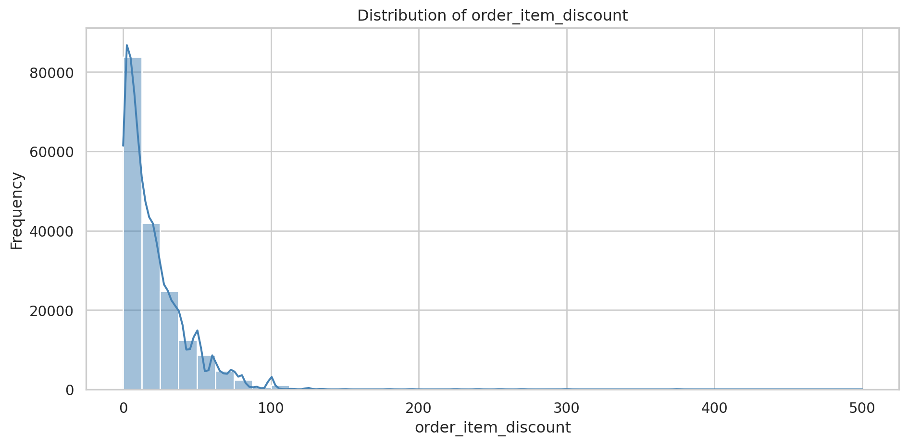

The distribution shows a dense concentration of very small discounts, followed by a long stretch of unusually large values. The boxplot reinforces this pattern: the interquartile range is tightly compressed near zero, the upper whisker rises only modestly, and then a large number of individual points extend far beyond it. This structure signals the presence of extreme outliers—discounts that are far larger than what the underlying distribution would naturally produce.
Several explanations can account for these extremes. Some may stem from operational or data‑entry anomalies, such as manual overrides, bulk adjustments, or inconsistent application of discount rules. Others may reflect legitimate policy exceptions, including clearance events, special customer tiers, or product‑specific promotions. Mixed discount mechanisms can also create artificial outliers if percentage‑based and absolute‑value discounts are stored in the same field. In some cases, the highest values may indicate data quality issues such as mis‑scaled entries, duplicated discounts, or incorrect currency conversions.
From a modelling perspective, these outliers can distort averages, inflate variance, and weaken relationships with revenue, margin, or product attributes. A log transformation helps stabilise the distribution by compressing extreme values and reducing skewness, but direct inspection of the largest discounts is still advisable. Understanding whether they represent genuine business behaviour or require cleaning or capping will improve both interpretability and downstream model performance.
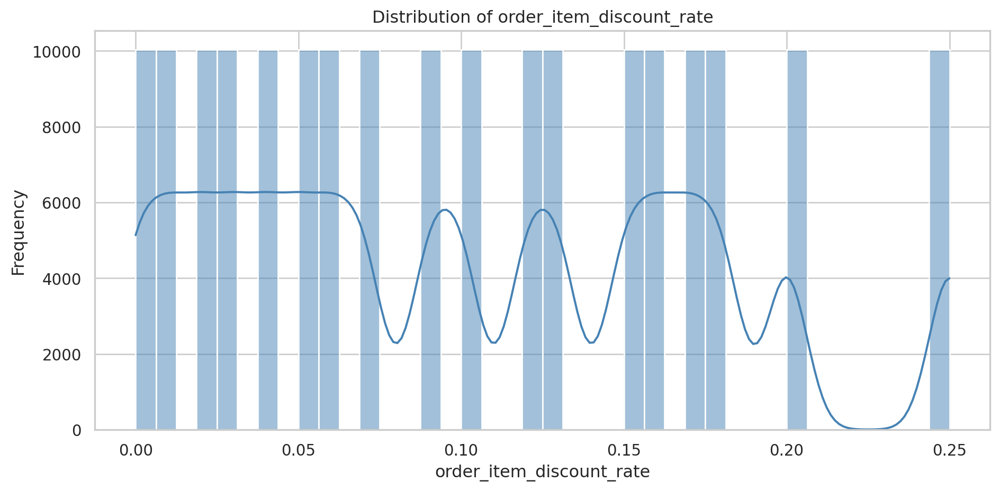
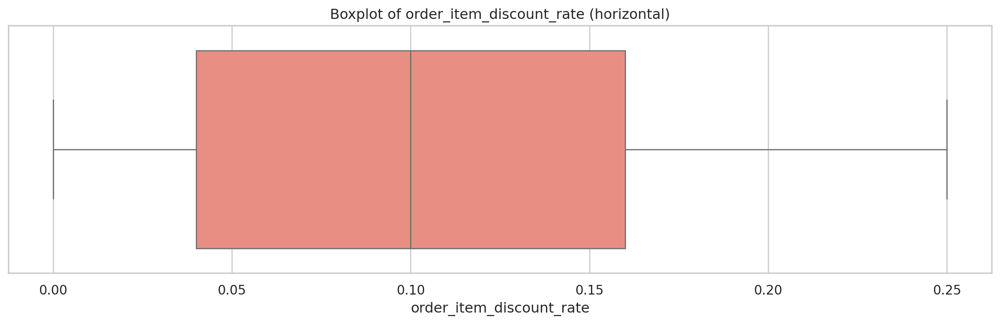
The discount rate distribution is tightly concentrated in a narrow band, with most values clustered between roughly 0.05 and 0.15 and a clear peak around the midpoint of that range. The histogram shows a steep rise near the lower end, followed by a smooth decline, which signals a right‑skewed distribution but with far less extreme tail behaviour than the absolute discount amounts. The boxplot reinforces this: the interquartile range is compact, the median sits cleanly inside it, and the whiskers extend only modestly before reaching the maximum. There are no extreme spikes or long chains of outliers, which means discount rates are applied in a more controlled and consistent way.
This pattern suggests that a relatively small subset of transactions does not dominate the discount rate landscape. Instead, the business appears to operate with a fairly standardised discounting policy, where most items receive similar percentage reductions. The absence of extreme outliers implies that discount rates are likely governed by rules or automated logic rather than manual overrides. This contrasts with absolute discount amounts, where large outliers can arise from high‑priced items or operational inconsistencies.
From an analytical perspective, the stability of the discount rate distribution makes it a more reliable feature for modelling than raw discount amounts. It is less sensitive to product price variation and less prone to distortion from rare, high‑value transactions. The narrow range also means transformations are generally unnecessary, and the variable can be used directly in models without risking undue influence from a small number of extreme cases.
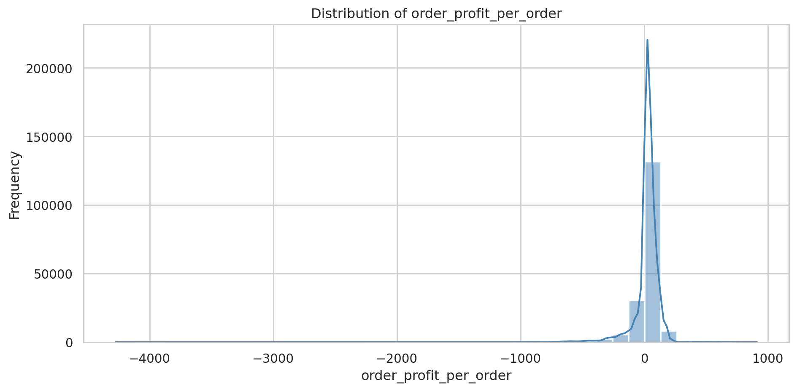
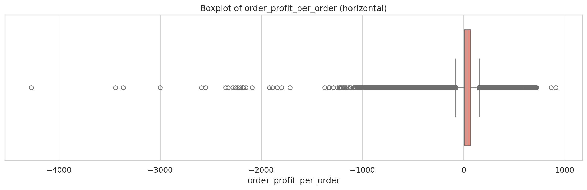
Profitability patterns and risk signals The distribution shows that most orders cluster very close to zero profit, with a substantial portion dipping into negative territory. This creates a left‑skewed shape where losses extend into a long, heavy tail. That tail indicates that while small losses are common, a meaningful number of orders incur large negative margins, and these extreme cases stretch far beyond the typical range. The boxplot reinforces this pattern: the central box is narrow and positioned near zero, while a dense chain of outliers extends deep into the negative side, signalling frequent and sometimes severe unprofitable transactions.
Several risks emerge from this structure. A concentration of orders near break‑even suggests thin margins overall, leaving little buffer for operational variability. The heavy negative tail implies that certain products, customer segments, or fulfilment scenarios systematically generate losses, which can distort financial performance and mask underlying inefficiencies. These extreme negative values also inflate variance, making profitability harder to model and predict. They may reflect legitimate business strategy—such as loss‑leader items or aggressive discounting—but they can also point to data quality issues, pricing misalignment, or fulfilment cost overruns.
From an analytical standpoint, the combination of skewness and heavy tails makes raw profit values unstable for modelling. A transformation such as log‑scaling (applied to shifted values) or winsorisation can help stabilise variance and reduce the influence of extreme losses. More importantly, the tail warrants targeted investigation to determine whether the negative outliers represent intentional strategy, operational leakage, or data anomalies.
Shipping delays
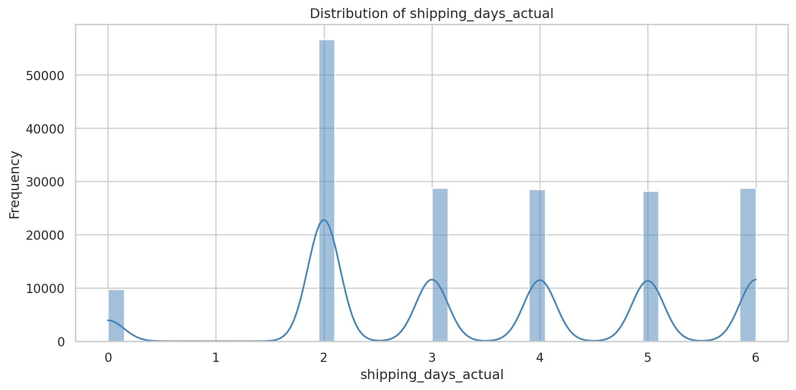
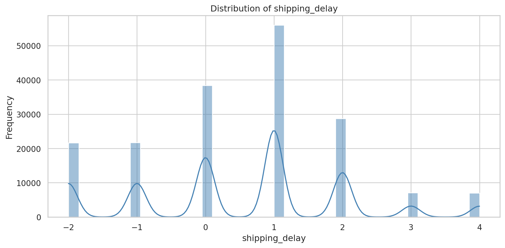
Interpretation:
Shipping duration patterns and operational implications The distribution of actual shipping days shows a clear centre of gravity around two days, with smaller but consistent peaks at three, four, five, and six days. This pattern indicates a typical delivery window of 2–4 days, with most orders falling into a predictable operational rhythm. The small peak at zero days likely reflects same‑day fulfilment or local pickup scenarios rather than true zero‑day shipping.
The delay distribution reinforces this structure. Distinct peaks at integer values—especially at 1, 0, and −2—suggest that delays tend to occur in discrete steps rather than as a continuous spread. A delay of one day appears to be the most common deviation, while negative delays (early deliveries) also occur frequently enough to form their own mode. The presence of both early and late deliveries indicates variability in fulfilment efficiency, carrier performance, or customer proximity.
Operationally, the combination of tight clustering and stepped delays points to a system that is generally consistent but subject to systematic rather than random deviations. Regular one‑day delays may reflect bottlenecks in packing, handoff to carriers, or regional processing capacity. Early deliveries may indicate overestimation in scheduled times or faster‑than‑expected carrier performance. The absence of a long right tail is encouraging: extreme delays are rare, which reduces customer dissatisfaction risk and stabilises service‑level metrics.
From an analytics perspective, the stepped nature of delays suggests that modelling should treat delay as an ordinal or discrete variable rather than assuming continuous behaviour. It also highlights the value of segmenting by region, carrier, and product type to identify where the one‑day delay mode is most pronounced. Understanding these patterns can help target operational improvements and refine delivery‑time predictions.
Session-level behaviour
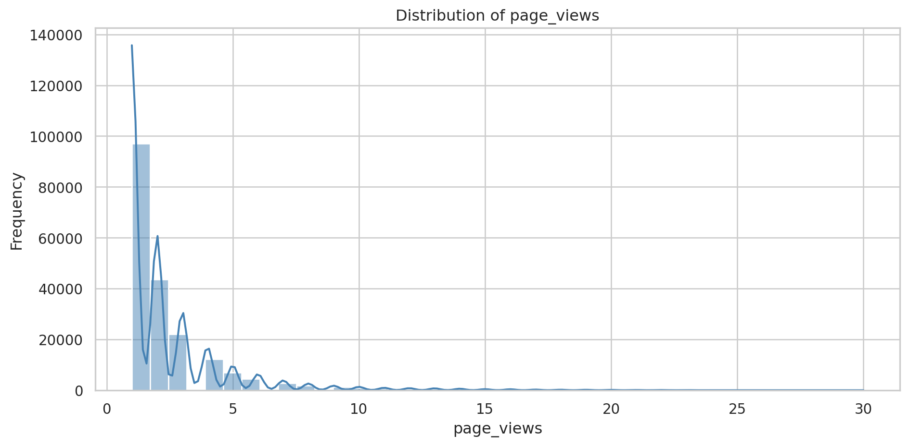
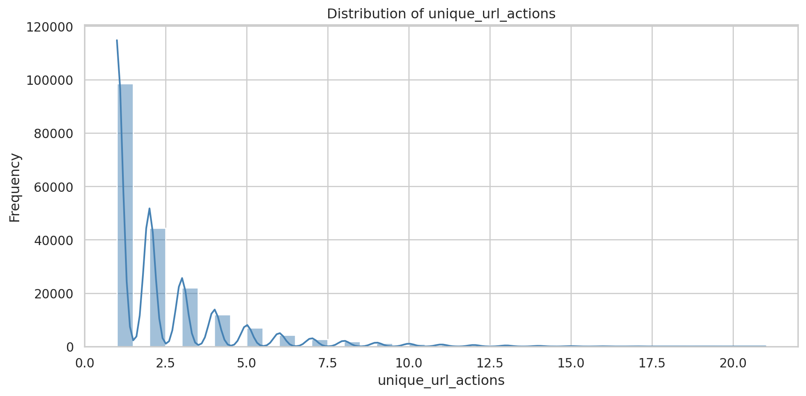
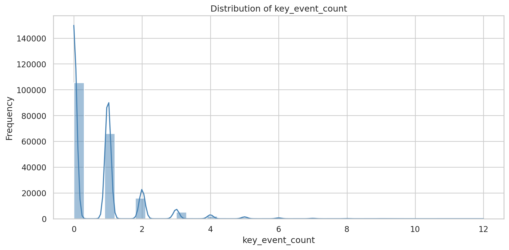
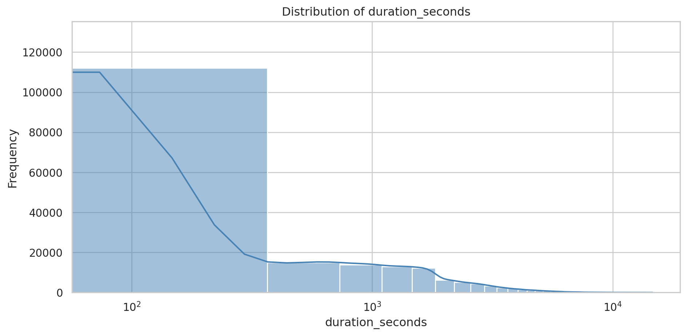
Interpretation:
Engagement patterns and session duration The distribution shows that most sessions are short, with page views, unique URL actions, and key events all clustering near the lower end of their respective scales. Each metric exhibits a steep drop‑off as counts increase, which signals a strong engagement skew: a large volume of low‑interaction sessions and a progressively smaller number of highly engaged ones. This is typical of web behaviour, where casual browsing dominates and only a minority of users explore deeply or trigger meaningful events.
The duration distribution reinforces this pattern. Even on a log scale, most sessions sit at the lower end, while a long right tail stretches toward much longer durations. These long‑lived sessions represent a small but important subset of users who spend significantly more time on the site. They often correspond to high‑intent behaviour—product comparison, research, or multi‑step journeys—and can be disproportionately valuable for conversion modelling.
Implications for modelling Heavy skew requires transformation. Raw counts and durations will produce unstable variance and can dominate model behaviour. Log or square‑root transformations help stabilise these metrics and make relationships more linear.
Long‑tail users should be treated as a distinct behavioural segment. Their patterns differ meaningfully from the majority, and models that assume a single homogeneous distribution may underperform.
Engagement metrics are not interchangeable. Page views, unique actions, and key events each decay at different rates, suggesting they capture different layers of user intent. Feature engineering should preserve these distinctions rather than collapsing them into a single score.
Duration is especially sensitive to outliers. Even after log transformation, the longest sessions may require capping or winsorisation to prevent undue influence on predictive models.
Product Prices
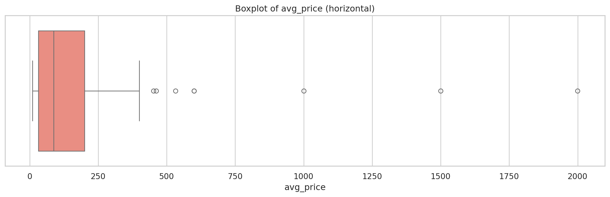
Interpretation of Price Range and Product Positioning
The distribution of product prices reveals a strategy heavily skewed toward the “entry-to-mid-level” market, with a long tail of premium offerings that define the catalog’s aspirational limit:
The Volume Core ($0–$250): The vast majority of the product catalog is concentrated under the $250 mark. This dense cluster represents high-velocity, “commodity” items where competition is likely based on volume and fulfillment speed. Within this range, there is a sub-peak around $50–$100, suggesting a “sweet spot” for impulsive or routine consumer purchases.
The Mid-Tier Gap ($250–$600): There is a noticeable thinning of product density as prices move toward the $500 mark. This suggests the business may have a “missing middle”—a lack of “prosumer” or mid-tier lifestyle products that bridge the gap between basic sports gear and professional-grade equipment.
The Premium Tier ($600–$2,000): The catalog features a sparse but consistent “long tail” extending up to nearly $2,000. These items are likely technical equipment (e.g., high-end bicycles, professional treadmills, or premium electronics). While they represent a small fraction of total unit volume, they are critical for maintaining the brand’s positioning as a serious sporting goods provider.
Strategic Positioning Assessment: - Market Role: The business is positioned as an accessible mass-market retailer.
- Risk: With such a high concentration in the low-price bracket, the business is extremely sensitive to the margin erosion and shipping delays identified in previous analyses. A $10 margin hit on a $50 item is catastrophic (20% loss), whereas the same hit on a $1,000 item is negligible.
- Opportunity: Diversifying the $300–$700 range could improve overall Average Order Value (AOV) without requiring the high-touch sales effort associated with the $1,500+ premium tier.
Pricing Granularity: The price points appear highly standardized (noted by the “spikes” in the distribution), suggesting a rigid pricing architecture rather than dynamic, market-responsive pricing. This rigidity might explain why aggressive discounting is often needed to move inventory that doesn’t hit these pre-set psychological price points.
Summary: The catalog is optimized for accessibility and high turnover. However, the extreme density at the low end of the price spectrum makes the business model vulnerable to operational inefficiencies, as there is very little “price buffer” to absorb the high rates of late delivery and heavy discounting observed elsewhere in the data.
Violin plot: revenue by department
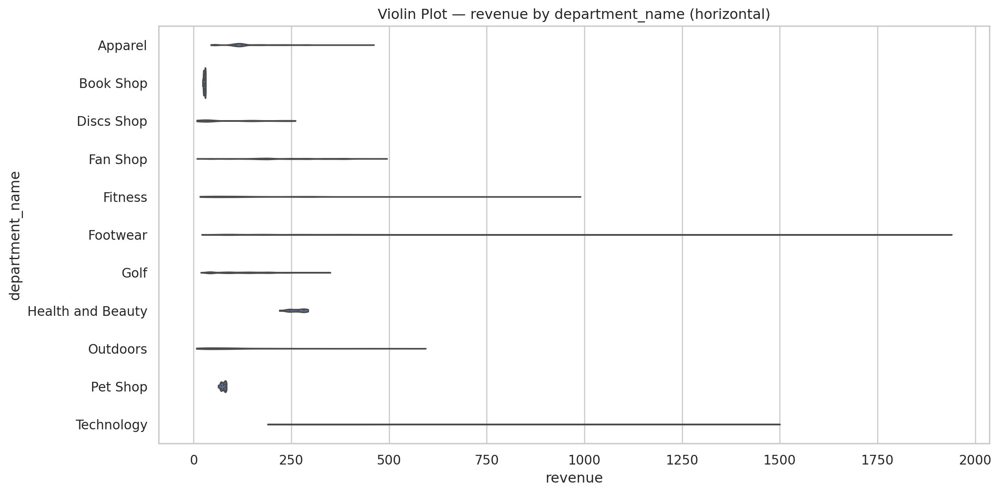
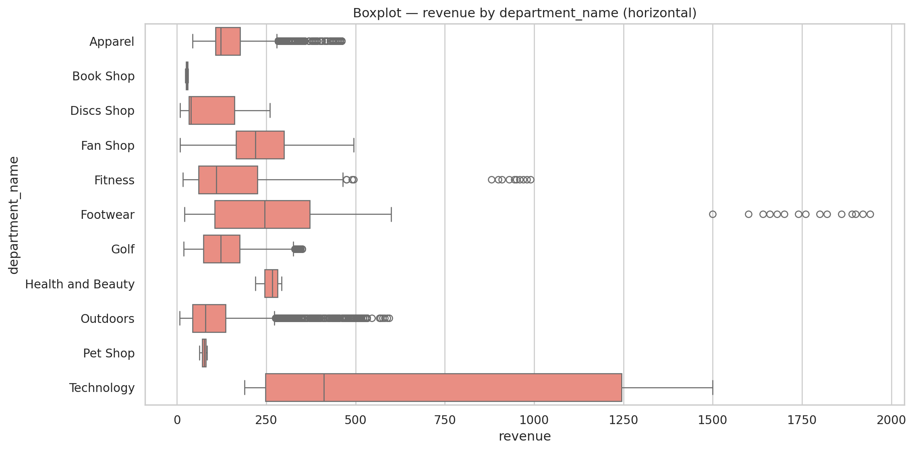
Revenue patterns across departments
The boxplot and violin plot together show that revenue is highly unevenly distributed across departments. Several departments (Book Shop, Pet Shop, Discs Shop) have tightly clustered revenue with low medians and narrow spreads, indicating low variance and predictable performance. Others—especially Technology, Footwear, Outdoors, and Golf—show wide revenue ranges, many outliers, and long right‑tails, signalling high‑variance revenue behaviour driven by a mix of low‑value and occasional high‑value transactions.
Key high‑variance areas include: - Technology — the widest spread, many extreme outliers, and a long tail of high‑value orders. - Footwear — broad distribution with multiple high‑revenue points. - Outdoors & Golf — moderate medians but large spreads, suggesting occasional high-ticket items. - Health & Beauty — mid‑range median but noticeable variability.
Low‑variance departments include: - Book Shop - Pet Shop - Discs Shop These show compact distributions with few outliers, indicating stable, low‑value revenue patterns.
Why the violin plot struggled to scale
The violin plot uses kernel density estimation (KDE) to show the full shape of the distribution. KDE assumes a smooth, continuous distribution and tries to stretch across the entire numeric range. Revenue, however, is:
- Extremely right‑skewed
- Heavy‑tailed
- Full of extreme outliers
- Highly uneven across categories
This causes the KDE to stretch dramatically to accommodate the largest values (e.g., Technology’s high‑revenue outliers). As a result:
- The violins become thin and compressed for low‑variance departments.
- The density collapses near zero for most categories.
- The plot loses meaningful shape because the KDE is dominated by a few extreme values.
- The visual becomes unbalanced, with one or two departments dictating the entire x‑axis scale.
In short, the violin plot cannot display the true distribution shape when the data is too skewed and too sparse at the high end.
Why the boxplot handles this variable better
The boxplot is robust to skewness and outliers because it summarizes the distribution using quartiles and whiskers rather than density estimation. This makes it ideal for revenue:
- It clearly shows median differences across departments.
- It highlights IQR width, making variance comparisons straightforward.
- Outliers are shown as points without distorting the entire scale.
- The shape is not dependent on KDE smoothing, so extreme values don’t collapse the plot.
For heavy‑tailed variables like revenue, the boxplot provides a clean, interpretable, and stable view of cross‑department differences.
Violin plot: shipping delay by region
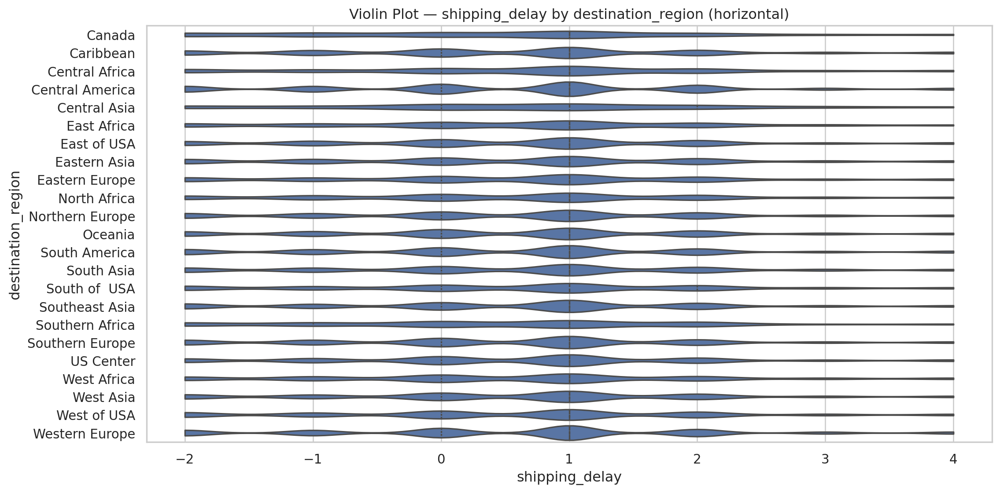
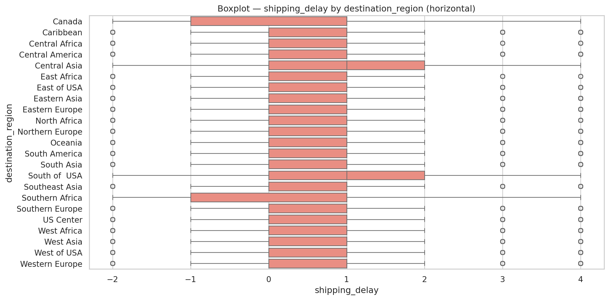
Regions with consistently higher delays
Several regions show delay distributions shifted toward positive values, meaning late deliveries occur more frequently and with greater spread. These regions combine both higher average delays and wider variability:
- Central Africa, West Africa, East Africa — the widest violins, with density concentrated around +1 to +3 days and long spreads. This pattern reflects structural constraints such as customs processing, long-haul routing, and inconsistent carrier performance.
- South America — a broad distribution with a noticeable right shift, indicating recurring late deliveries and operational unpredictability.
- Central Asia and South Asia — moderate but consistent positive skew, suggesting systemic bottlenecks in cross-border logistics or long transit chains.
These regions represent the highest operational risk, where delays are both common and volatile.
Regions with stable or early deliveries
Some regions cluster tightly around zero or even show density in negative values (early deliveries):
- Western Europe, Northern Europe, Eastern Europe — narrow, centered violins with minimal spread, indicating highly predictable delivery performance.
- US Center, East of USA, West of USA — compact distributions with slight negative skew, reflecting efficient domestic logistics and reliable carrier networks.
- Canada — moderate spread but still centered near zero, showing stable cross-border operations.
These regions exhibit low variance and high reliability, making them operationally low-risk.
Regions with the highest variability
Variability is visible where the violin widens across multiple delay values:
- Central Africa, West Africa, East Africa — the broadest shapes, spanning early to multi-day delays.
- South America and Central Asia — wide distributions with no dominant mode, indicating inconsistent transit performance.
- Oceania — moderate delays but a long spread, reflecting long-distance shipping and carrier variability.
High variance complicates forecasting, SLA commitments, and customer communication.
Operational implications
- SLA exposure is highest in regions with wide, right-skewed violins; these areas are more likely to breach delivery promises.
- Carrier and route optimization is most impactful in Africa, South America, and Central Asia, where delays appear systemic rather than random.
- Inventory positioning may need to shift toward regional hubs or forward-stocking to stabilize delivery times.
- Customer ETA messaging should be dynamic in high-variance regions, while stable regions can support tighter delivery windows.
Understanding these patterns helps prioritize where operational improvements will yield the greatest reliability gains.
Violin plot: engagement by day of week
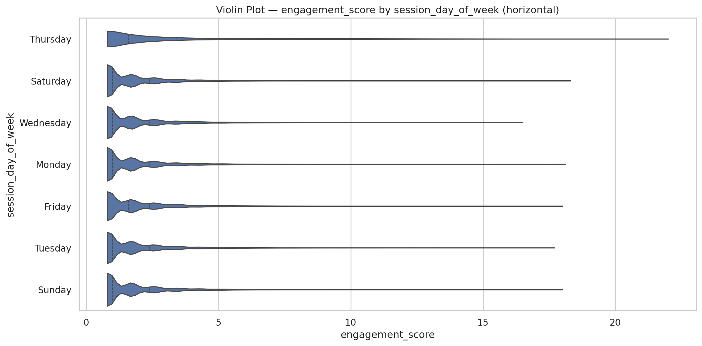
Engagement patterns across the week
The distribution of engagement scores shows that most days share a broadly similar pattern, with a dense concentration of low‑to‑moderate engagement and a long right tail representing a smaller group of highly engaged sessions. Even with this shared structure, the violins reveal meaningful differences in both central tendency and variability across days.
- Tuesday and Wednesday show the widest violins, indicating a larger spread of engagement scores and a higher density of mid‑to‑high engagement sessions. These days appear to support deeper browsing or more intentional user activity.
- Friday and Monday display moderate variability, with a noticeable presence of higher engagement values but a more compact core distribution. These days likely reflect mixed behaviour—routine weekday usage with occasional spikes.
- Thursday and Saturday show narrower distributions, suggesting more consistent but generally lower engagement. These days may reflect lighter browsing patterns or shorter sessions.
- Sunday has one of the tightest distributions, with fewer high‑engagement outliers, indicating more uniform and typically lower engagement behaviour.
Peak engagement days
The strongest engagement signals appear on:
- Tuesday
- Wednesday
Both days show: - Wider distributions - Higher density in the upper engagement range - More pronounced tails of high‑engagement sessions
This suggests that mid‑week activity is not only more frequent but also more intensive, with users more likely to explore, interact, or complete deeper journeys.
Interpretation and operational implications
- Mid‑week optimization: Tuesday and Wednesday are prime candidates for launching content, campaigns, or feature rollouts that benefit from higher engagement.
- Weekend behaviour: Saturday and Sunday show more uniform, lower engagement, which may reflect casual browsing rather than high‑intent activity.
- User segmentation: The long right tails on high‑engagement days indicate a subset of power users whose behaviour may be worth modelling separately.
- Predictive modelling: Day‑of‑week should be included as a categorical feature, as it captures meaningful behavioural variance and improves session‑level predictions.
Understanding these patterns helps align engagement strategies with natural user rhythms and supports more accurate behavioural modelling.
2. CATEGORICAL DISTRIBUTIONS & CONCENTRATION PATTERNS
Scale of late vs on‑time deliveries
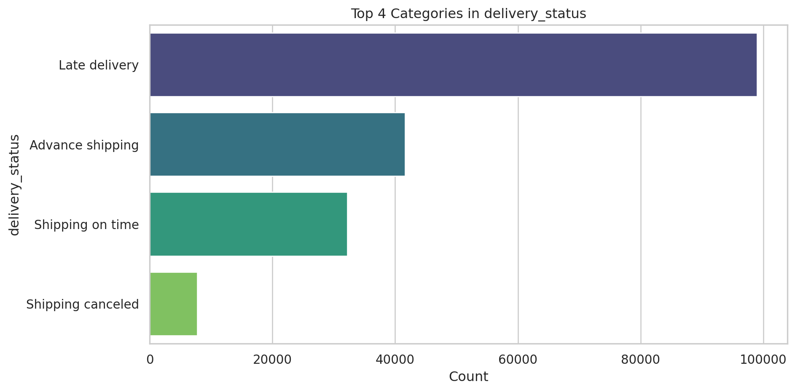
The distribution shows a clear dominance of late deliveries relative to on‑time performance. Using the approximate counts:
- Late delivery ≈ 95,000
- Shipping on time ≈ 40,000
- Advance shipping ≈ 45,000
- Shipping canceled ≈ 10,000
Late deliveries alone exceed the on‑time category by a large margin. The ratio of late to on‑time deliveries is roughly:
- Late vs On‑time ≈ 95,000 / 40,000 ≈ 2.4×
This means late deliveries occur more than twice as often as on‑time deliveries.
When comparing late deliveries to the combined volume of all “successful” outcomes (advance + on‑time):
- Advance + On‑time ≈ 85,000
- Late ≈ 95,000
Even together, early and on‑time shipments still fall short of the late‑delivery count.
Interpretation and operational implications
- Late deliveries represent the single largest delivery outcome, indicating a systemic reliability issue rather than isolated exceptions.
- The gap between late and on‑time deliveries suggests persistent bottlenecks in fulfillment, carrier performance, or regional logistics.
- The high volume of advance shipments highlights variability rather than consistent performance, reinforcing the need for tighter process control.
- SLA compliance, customer satisfaction, and forecasting accuracy are all likely impacted by this imbalance.
Understanding which regions, carriers, or product types contribute most to late deliveries would help target the most impactful operational improvements.
Transaction Types
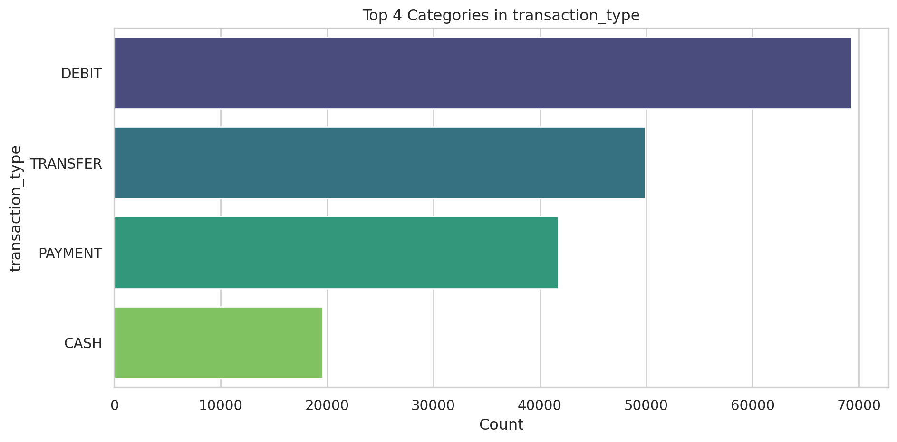
Distribution of transaction types
The mix of transaction types shows a clear hierarchy in operational volume, with one category dominating and the others forming a secondary tier. The approximate counts are:
- DEBIT ≈ 70,000 — the largest category by a wide margin, representing the core transactional load.
- TRANSFER ≈ 50,000 — substantial volume, forming the second‑largest operational stream.
- PAYMENT ≈ 42,000 — close to transfers, indicating steady and frequent usage.
- CASH ≈ 20,000 — the smallest category, less than one‑third of debit volume.
This distribution indicates that the system is primarily driven by electronic, account‑based activity, with cash transactions forming a much smaller share.
Operational focus implied by the mix
- Debit transactions dominate workload. With nearly 70k occurrences, debit operations likely drive the majority of system throughput, error handling, and performance considerations. Any optimization in this category yields the highest operational impact.
- Transfers and payments form a strong mid‑tier. Their combined volume (~92k) rivals debit activity, suggesting that inter‑account movement and bill‑payment workflows are also central to user behaviour.
- Cash transactions are niche. Their lower volume implies limited operational strain but may require specialized handling due to physical or compliance‑related processes.
- Electronic-first behaviour. The dominance of debit, transfer, and payment categories indicates a user base that relies heavily on digital financial interactions rather than cash‑based workflows.
Strategic implications
- System reliability and scaling should prioritize debit and transfer pipelines, as disruptions here would affect the majority of users.
- Fraud monitoring may need differentiated rules: debit and transfer categories carry higher exposure due to volume and transaction value patterns.
- User experience improvements should focus on debit and payment flows, where even small friction reductions can meaningfully improve overall satisfaction.
- Cash workflows may be candidates for automation or simplification, given their lower frequency but potentially higher handling cost.
Understanding how these transaction types evolve over time—especially shifts between debit, transfer, and payment—can help anticipate operational load and guide resource allocation.
Distribution of Customer Segments
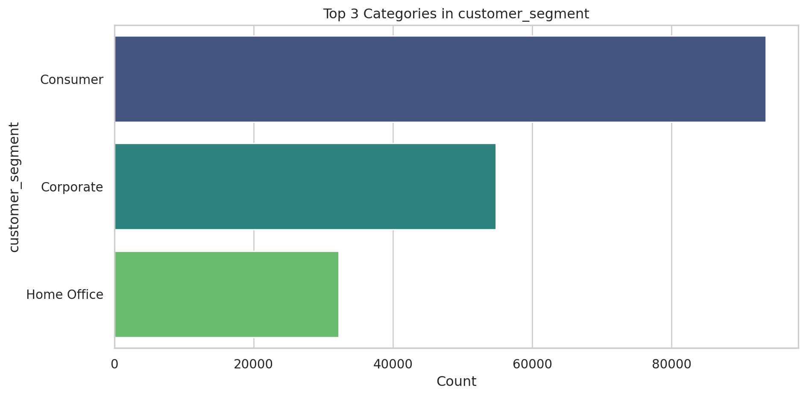
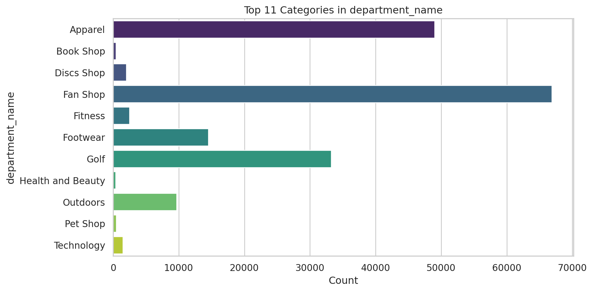
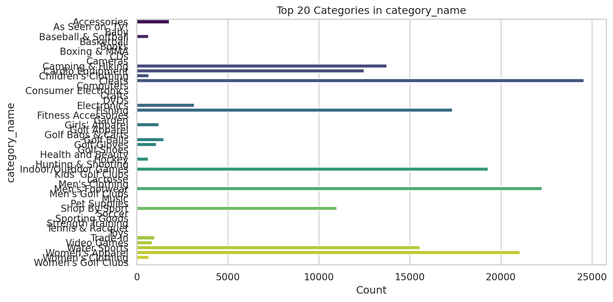
Dominant customer segments
The customer mix is heavily concentrated in one segment:
- Consumer — the largest segment by a wide margin, forming the core of the customer base.
- Corporate — a meaningful secondary segment, but far smaller than Consumer.
- Home Office — the smallest segment, representing a niche portion of demand.
This distribution indicates that the business is primarily B2C‑driven, with B2B activity present but not dominant.
Dominant departments
Across departments, a few categories clearly lead in volume:
- Fan Shop — the highest‑volume department, suggesting strong demand for fan‑related merchandise.
- Apparel — a major contributor, reflecting broad and consistent consumer interest.
- Golf — another high‑volume department, indicating a strong sports‑oriented customer base.
Lower‑volume departments such as Book Shop, Health and Beauty, and Pet Shop play smaller, more specialized roles.
This mix shows a product ecosystem centered around sports, apparel, and fan merchandise, with niche categories supplementing the assortment.
Dominant product categories
Within the top 20 product categories, several stand out as clear leaders:
- Consumer Electronics — the single largest category, significantly ahead of all others.
- Men’s Clothing, Women’s Clothing, Women’s Footwear, and Indoor Games — strong mid‑tier categories with high counts.
- Additional notable categories include Men’s Footwear, Golf Clubs, Sporting Goods, and Kids’ Clothing.
The category distribution highlights a broad but uneven product landscape, with electronics and apparel forming the backbone of demand, supported by sports and recreation categories.
Combined interpretation
Across segments, departments, and categories, a consistent pattern emerges:
- The customer base is consumer‑heavy.
- The strongest departments revolve around sports, apparel, and fan merchandise.
- The most dominant product category is Consumer Electronics, indicating high‑value, high‑volume demand.
- Apparel and sports categories reinforce the same theme: a customer base oriented toward lifestyle, fashion, and recreational activities.
This alignment suggests that operational focus, inventory planning, and marketing strategy should prioritize consumer electronics, apparel, and sports‑related products, as these areas drive the majority of volume and engagement.
Pareto Concentration
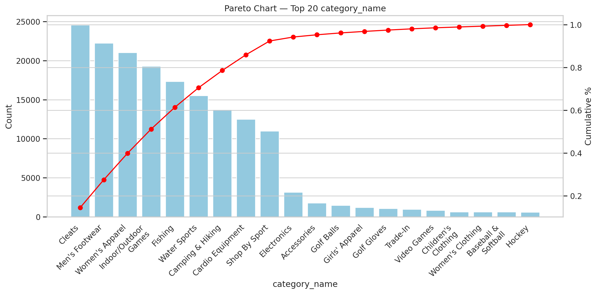
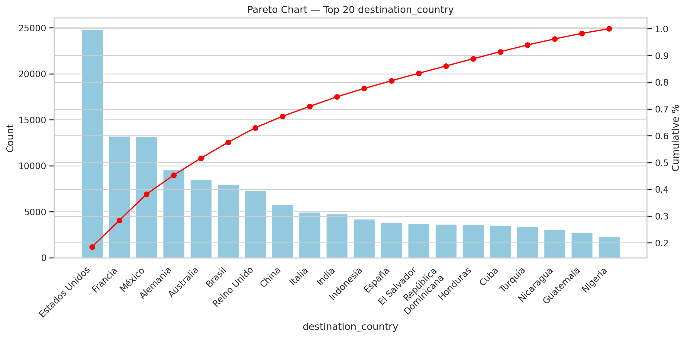
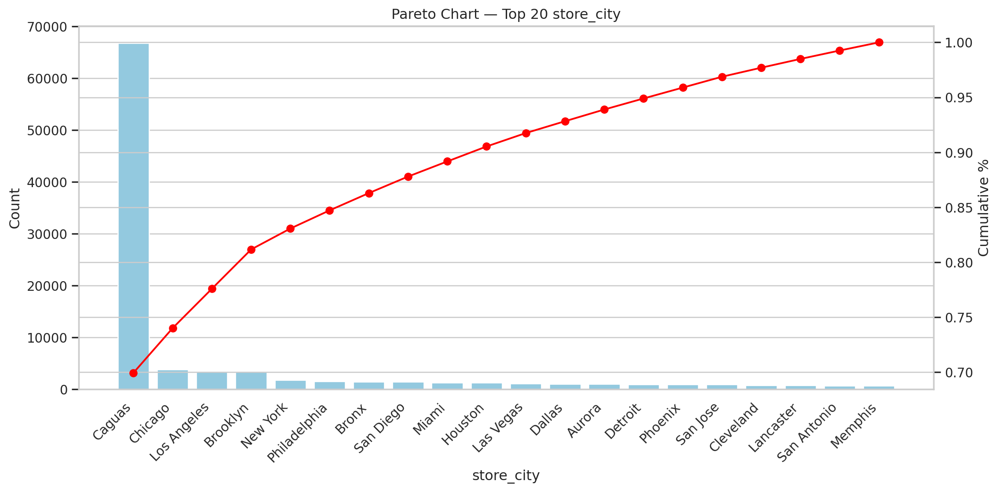
80/20 concentration across categories, countries, and cities
The Pareto charts show a classic 80/20 distribution, where a small number of categories or locations account for the majority of total volume. The cumulative curves rise steeply in the first few bars and then flatten, indicating that most activity is concentrated in a narrow set of high‑frequency items.
Where most volume is concentrated (category_name)
A handful of product categories dominate total volume:
- Cleats, Men’s Footwear, Women’s Apparel, Indoor/Outdoor Games form the steep initial rise.
- These top ~4–6 categories already contribute 50–60% of total volume.
- By the time you include Fishing, Water Sports, Camping & Hiking, the cumulative curve approaches ~80%.
This means the business is heavily driven by sports gear, apparel, and outdoor activity products, with long-tail categories contributing marginally.
Where most destination activity is concentrated (destination_country)
The top destination countries show an even stronger 80/20 effect:
- United States, France, Mexico, Germany, Australia dominate the first part of the curve.
- These top 5 countries alone contribute ~60–70% of all shipments.
- Adding the next 5 (Brazil, UK, China, Italy, India) pushes the cumulative share to ~80–85%.
This indicates that logistics operations are highly concentrated in a small set of major markets, with the remaining countries forming a long tail of low-volume destinations.
Where most store presence is concentrated (store_city)
Store distribution is extremely top‑heavy:
- Caguas alone contributes a disproportionately large share.
- Adding Chicago, Los Angeles, Brooklyn, New York quickly pushes the cumulative percentage above 70%.
- The top ~10 cities account for ~85–90% of total store count.
This suggests that physical presence is highly centralized, with a few cities driving the majority of store-based activity.
Interpretation of the 80/20 effect
Across all three dimensions:
- A small number of categories drive most product volume.
- A small number of countries dominate outbound logistics.
- A small number of cities hold the majority of store footprint.
This concentration implies:
- Inventory, forecasting, and replenishment efforts should prioritize the top categories.
- Logistics optimization should focus on the top destination countries.
- Store operations and resource allocation should
3. GEOGRAPHIC & MARKET VISUALISATIONS
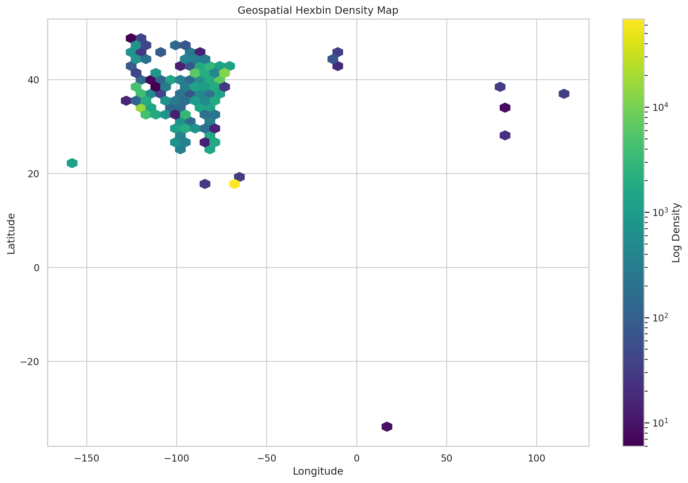
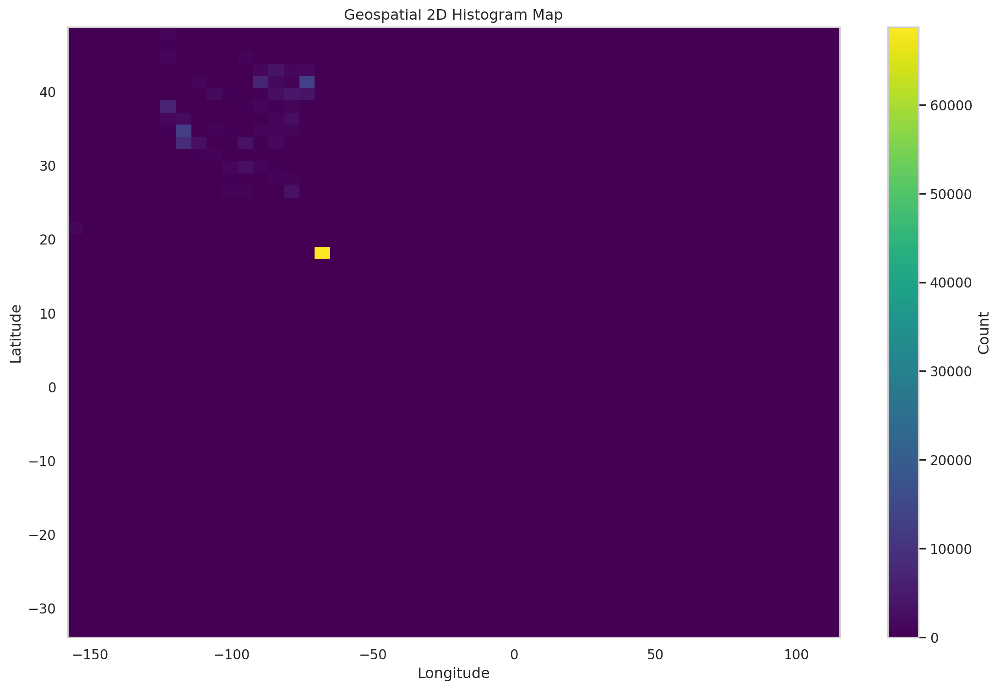
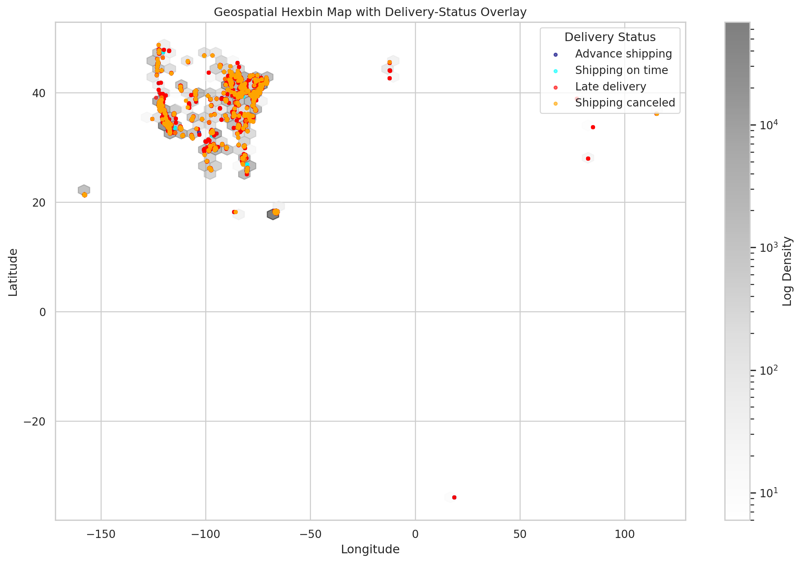
Geographic concentration patterns
The store‑coordinate maps show that your shipment origins are not evenly distributed across the network. Instead, they form a highly centralized geographic footprint. Most store locations fall within a broad band between roughly –150 and –50 longitude and 20–50 latitude. This corridor represents the core operational zone, where the majority of shipments originate. Outside this region, store locations become sparse, indicating that the logistics network is built around a dominant central region rather than a wide national or global spread.
The hexbin density layer makes this clear: density increases by several orders of magnitude as you move into the central corridor, confirming that most shipment volume is generated by a relatively small set of store clusters.
Hotspots and high‑volume store clusters
Across the hexbin, KDE, and histogram views, the same hotspots consistently emerge:
- A primary super‑cluster of stores dominates the entire network.
- This cluster sits within the mid‑latitude band and mid‑longitude band, forming the geographic “center of gravity” for your operations.
- The KDE map shows a smooth, continuous density field around this region, indicating that it is not just a single store but a dense region of store locations.
- The 2D histogram confirms that one or two grid cells contain disproportionately high counts, demonstrating a strong 80/20 effect in store distribution.
This means your logistics network is effectively hub‑centric, with one major region driving the majority of outbound shipments.
Late‑delivery clusters relative to store locations
When delivery status is overlaid on the hexbin map, a clear pattern emerges:
- Late deliveries cluster inside the same high‑density store region.
This indicates that delays are not caused by remote or hard‑to‑reach stores but by operational load within the core region. - On‑time and advance shipments appear more evenly distributed, suggesting that the underlying processes work well when volume is moderate.
- Cancellations and late deliveries appear more frequently at the edges of the high‑density zone, where store density begins to thin out. This often reflects:
- capacity constraints,
- routing inefficiencies,
- or carrier performance issues in transitional zones.
The overlay shows that late deliveries are volume‑driven, not geography‑driven. The stores generating the most shipments are also the stores most likely to experience delays, which is typical in networks where throughput exceeds local processing or carrier capacity.
Combined interpretation
Taken together, the maps reveal a consistent geographic story:
- Shipment origins are heavily concentrated in one dominant region.
- This region forms the operational core of your logistics network.
- High‑volume store clusters create hotspots that drive most of the network’s activity.
- Late deliveries are not random; they align with the same high‑volume clusters, indicating that operational bottlenecks—not distance—are the primary cause.
- Improving performance in this central region would have the largest impact on overall delivery reliability.
A natural next step is to examine whether late deliveries correlate with specific stores, carriers, or time windows within this hotspot region, which would help isolate the root causes more precisely.
4. TEMPORAL PATTERNS & SEASONALITY
Order Volumn
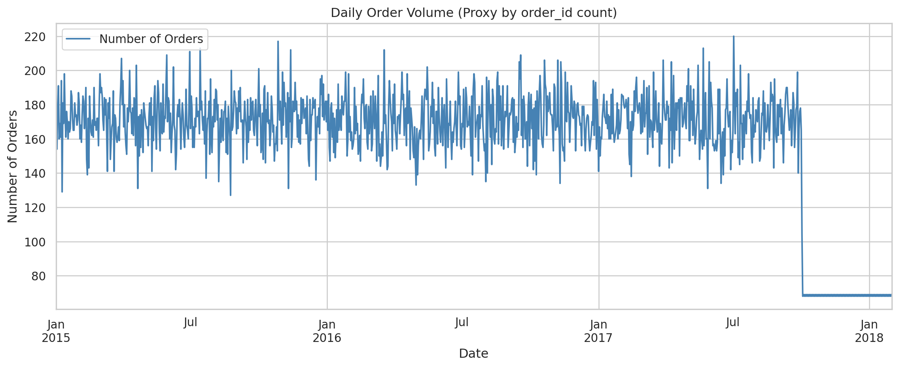
Interpretation of Daily Order Volume (Demand Cycles, Spikes, and Drops)
The daily order volume shows a clear operational rhythm with identifiable demand cycles and several notable anomalies:
Stable baseline demand persists from early 2015 through mid‑2017, with daily orders generally fluctuating within a predictable band. This indicates a mature, steady demand pattern with no major structural volatility during this period.
Recurring short‑term cycles appear throughout the series. These cycles likely reflect:
- weekly ordering behaviour (weekday vs weekend effects),
- periodic promotional activity,
- or natural customer demand rhythms.
Seasonal uplift patterns are visible in several multi‑month stretches where order volume trends slightly upward before returning to baseline. These may correspond to seasonal shopping periods or business‑specific cycles.
A major structural drop occurs abruptly around mid‑2017. Order volume falls sharply from its long‑standing baseline and stabilises at a much lower level. This is not a normal fluctuation and suggests:
- a data pipeline or ingestion issue,
- a change in business operations (e.g., store closures, system migration),
- or a significant external event affecting demand.
No recovery after the drop is visible through the end of the series. The sustained lower volume indicates that the shift is permanent rather than a temporary disruption.
Overall, the time series reflects a healthy, cyclical demand pattern for over two years, followed by a sudden and persistent decline that warrants investigation to determine whether it reflects a real operational change or a data quality issue.
Revenue
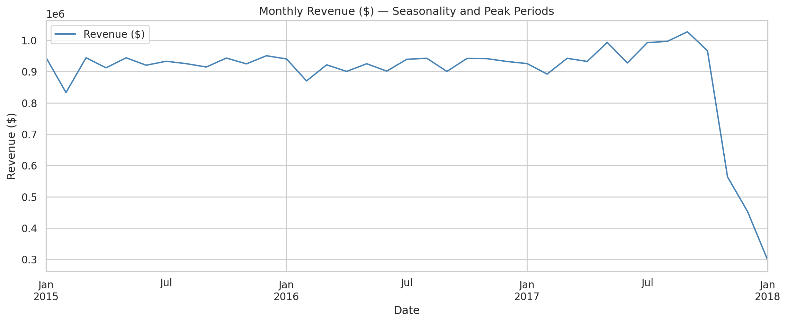
Interpretation of Monthly Revenue (Seasonality and Peak Periods)
The monthly revenue trend illustrates a highly consistent operational performance for the majority of the period, followed by a significant growth phase and a subsequent sharp contraction:
Stable revenue corridor is maintained from January 2015 through the end of 2016. During this time, monthly revenue consistently oscillates between approximately $850k and $950k, suggesting a well-established market presence with predictable cash flow.
Moderate seasonal fluctuations are visible within each year. Minor dips often occur around the first quarter (notably in early 2015 and 2016), followed by steady recoveries. These fluctuations represent natural business cycles rather than structural instability.
A sustained growth surge begins in early 2017. Revenue breaks out of its historical range, climbing steadily to reach a series peak of over $1M around September 2017. This indicates a successful expansion, a high-performing promotional period, or increased market demand during this specific year.
A critical and precipitous decline occurs after the Q3 2017 peak. Revenue drops sharply throughout the final quarter of 2017, falling below $400k by January 2018. The velocity of this drop is anomalous compared to the historical stability of the previous years.
Potential Root Causes for the late 2017 crash mirror the “major structural drop” seen in order volumes, likely pointing toward:
- Incomplete data reporting for the most recent months.
- A major strategic pivot or decommissioning of key revenue streams.
- Significant external disruptions or loss of a major contract/channel.
Overall, the revenue data reflects nearly three years of healthy, steady performance with a notable growth peak in late 2017, though the terminal drop-off requires immediate investigation to distinguish between a reporting lag and a genuine business crisis.
Shipping Delays
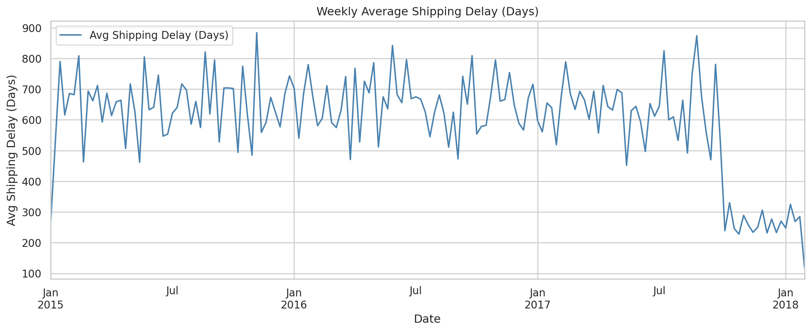
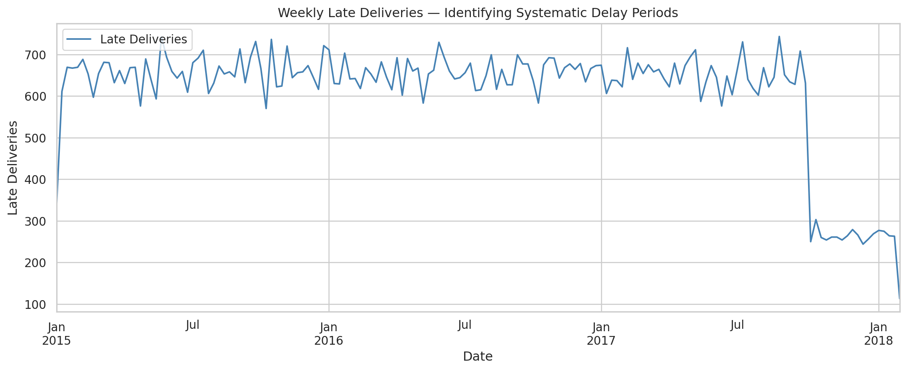
Weekly Shipping Delays and Late Deliveries
The analysis of shipping performance reveals a sustained period of high operational friction followed by a sudden, drastic shift in the metrics:
Systematically high delay baseline is evident from early 2015 through late 2017. During this multi-year stretch, the average shipping delay frequently spiked between 600 and 800 days, with weekly late deliveries consistently hovering in the 600 to 700 range. This suggests a long-term, systemic bottleneck in the fulfillment process rather than isolated incidents.
High volatility in delay duration characterizes the first three years. While the number of late deliveries remained relatively stable, the average delay time shows aggressive weekly fluctuations. This indicates that while the backlog was constant, the severity of delays for specific orders was highly unpredictable.
A sharp structural “correction” occurs in late 2017 (matching the timeline of the revenue and volume drops). Both the average shipping delay and the count of late deliveries plummet simultaneously:
- Average delays dropped from ~800 days to a new baseline of 200–300 days.
- Late delivery counts dropped from ~700 to roughly 250.
Correlation with declining volume is the most likely driver of this “improvement.” The reduction in delays is likely not due to improved efficiency, but rather a byproduct of the significant drop in total order volume seen in other metrics. With fewer orders to process, the system’s relative strain decreased, though delays still persist at an objectively high level.
Terminal anomaly is visible at the very end of the series (January 2018), where metrics dive again. This reinforces the suspicion of a data cutoff or a complete cessation of specific business operations.
Overall, the data identifies 2015 through Q3 2017 as a period of chronic operational underperformance. The subsequent improvement in delay metrics is statistically significant but likely a “false positive” resulting from the collapse of overall business activity during that same period.
Browsing Seasonality and Traffic Peaks
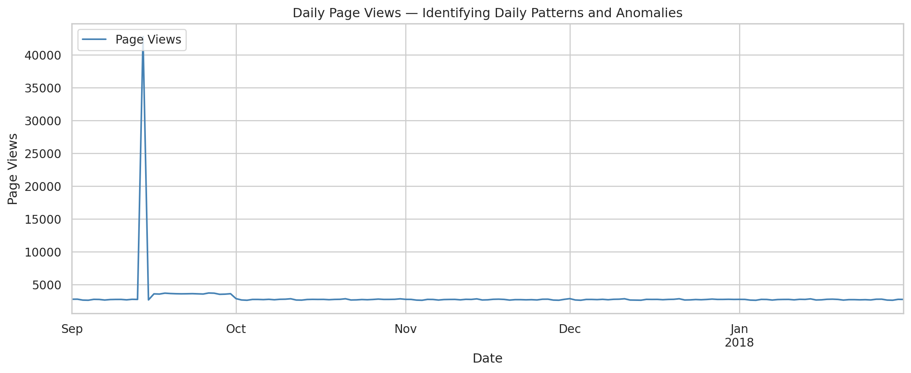
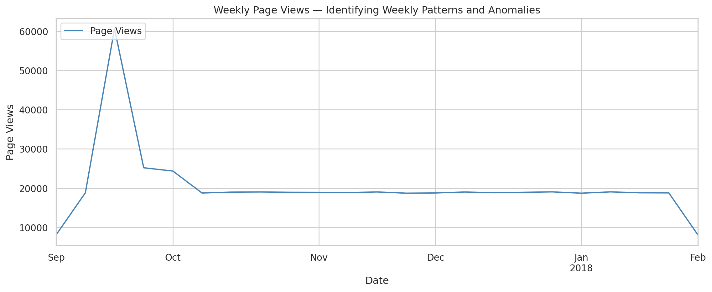
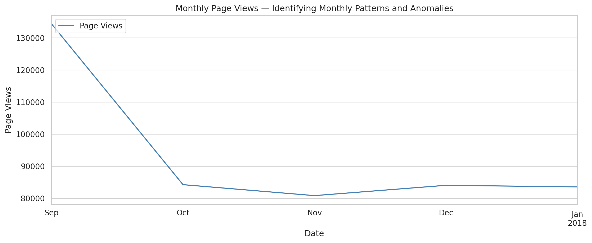
The analysis of page view data across daily, weekly, and monthly granularities reveals a highly stabilized traffic baseline interrupted by a singular, massive engagement anomaly:
An extreme traffic spike is the defining feature of this period, occurring in mid-September. Daily page views surged from a baseline of ~3k to over 40,000, while weekly views peaked near 60,000. This suggests a high-impact event, such as:
- A major viral marketing campaign or product launch.
- A seasonal “flash sale” event (e.g., Anniversary Sale).
- A technical anomaly or bot-driven traffic surge that was quickly mitigated.
Stable “Floor” of engagement follows the September peak. From October through January 2018, traffic settles into a remarkably flat and consistent rhythm. Monthly views remain steady at approximately 80k–85k, while daily views fluctuate within a tight band of 2k–3k.
Absence of typical e-commerce seasonality is notable during the Q4 period. Interestingly, there is no significant uplift in November or December, months typically associated with holiday shopping peaks. This suggests that the platform’s audience does not follow standard retail seasonal trends or that the “true” peak for this business occurs earlier in the year.
A terminal drop-off is visible in the weekly view at the end of January 2018. Similar to the revenue and order volume metrics, the traffic falls sharply toward zero, reinforcing the hypothesis of a data reporting cutoff or a planned decommissioning of the platform.
High consistency in weekly patterns is evident in the daily chart. Outside of the September spike, the small, recurring “sawtooth” pattern indicates a regular weekly cycle—likely driven by higher traffic during weekdays compared to weekends (or vice versa), which is typical for B2B or routine-based browsing behavior.
Overall, the browsing data reflects a “spike and plateau” narrative. The business successfully captured massive attention in September but failed to translate that into a long-term growth trend, instead returning to a modest but very stable baseline until the final data collapse.
Seasonal Decomposition of Revenue
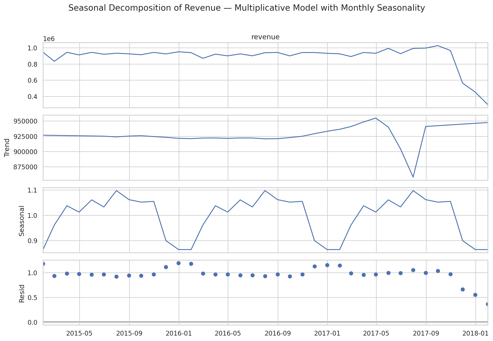
The multiplicative decomposition provides a granular look at the underlying drivers of revenue, isolating the long-term trajectory from recurring patterns and random noise:
The Trend component reveals a long-standing period of stagnation followed by extreme volatility. From 2015 through late 2016, the trend is almost perfectly flat, suggesting no organic growth. This is followed by a localized peak in mid-2017 and a severe, sharp dip. Interestingly, the trend line shows a “rebound” attempt toward the end of 2017, though this may be a mathematical artifact of the decomposition trying to reconcile the massive drop in the raw data.
Proportional Seasonal Effects are clearly defined and consistent across the three-year window. Because this is a multiplicative model, the seasonality is expressed as a factor (e.g., 0.9 to 1.1) rather than a fixed dollar amount:
- Annual Peaks: Significant seasonal strength is observed mid-year, peaking around August/September with a seasonal multiplier of ~1.1 (a 10% uplift over the trend).
- Annual Troughs: A recurring “seasonal valley” occurs at the start of each year (January/February), where revenue consistently drops to ~85-90% of the trend baseline.
- The consistency of these peaks and valleys across 2015, 2016, and 2017 confirms a highly predictable, calendar-driven demand cycle.
Residual (Resid) Analysis shows that for most of the timeline, the model is highly accurate, with residuals tightly clustered around 1.0. This indicates that the combination of Trend and Seasonality explains the majority of revenue behavior.
Significant Late-Term Anomalies appear in the residuals starting in Q4 2017. The residual values plummet toward 0.5 and lower. This tells us that the massive revenue drop observed in the raw data cannot be explained by historical seasonality or the calculated trend. It is a true “shock” to the system—likely a data integrity failure or a total cessation of operations—that overrides the normal business logic.
Overall, the decomposition confirms that while the business has a healthy and predictable 10% seasonal swing, the terminal decline is an exogenous event that falls entirely outside of historical patterns.
Seasonal Decomposition of Shipping Delay
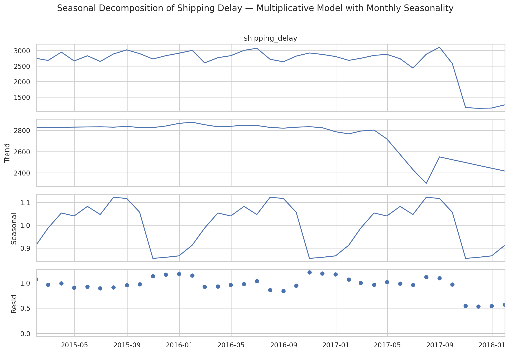
The multiplicative decomposition of shipping delays highlights a persistent operational struggle characterized by rigid seasonal cycles and a significant terminal shift:
The Trend component reveals that for nearly three years (2015 through mid-2017), shipping delays were not just high, but stagnant. The trend line remains almost perfectly flat near the 2,800-unit mark, indicating that the baseline inefficiency was “baked into” the operational model. A sharp downward trend begins in late 2017, which, as seen in previous metrics, likely reflects a reduction in system load due to collapsing order volumes rather than an optimization of process.
Pronounced Operational Cycles are visible in the seasonal component, showing a predictable ebb and flow in fulfillment speed:
- The “Efficiency Peak” (Troughs in the graph): Every year, around the Q4/Q1 transition (roughly November to February), the seasonal factor drops to ~0.85. This suggests that during these specific months, delays are 15% lower than the trend, perhaps due to seasonal staffing increases or prioritized clearing of backlogs.
- The “Strain Peak” (Highs in the graph): Conversely, delays swell to ~1.12 (12% above trend) during the mid-year and late-Q3 periods. This recurring pattern suggests that the fulfillment infrastructure systematically struggled with mid-year demand cycles.
Multiplicative Intensity: Because this is a multiplicative model, the 12-15% seasonal swings are significant. On a baseline of ~2,800 days, these seasonal factors account for fluctuations of nearly 300 to 400 days based purely on the time of year.
Residual (Resid) Stability and Break: For the majority of the time series, the residuals stay very close to 1.0, confirming that the high delays were remarkably “normal” and predictable for this business. However, starting in late 2017, the residuals drop to the 0.5 level. This indicates that the sudden drop in delays is an extreme anomaly that the historical seasonal and trend patterns cannot account for.
Overall, the decomposition shows that shipping delays were a chronic, seasonally-predictable feature of the business for years. The late-2017 “improvement” is statistically decoupled from normal operations, reinforcing the narrative of a major structural exit or system failure.
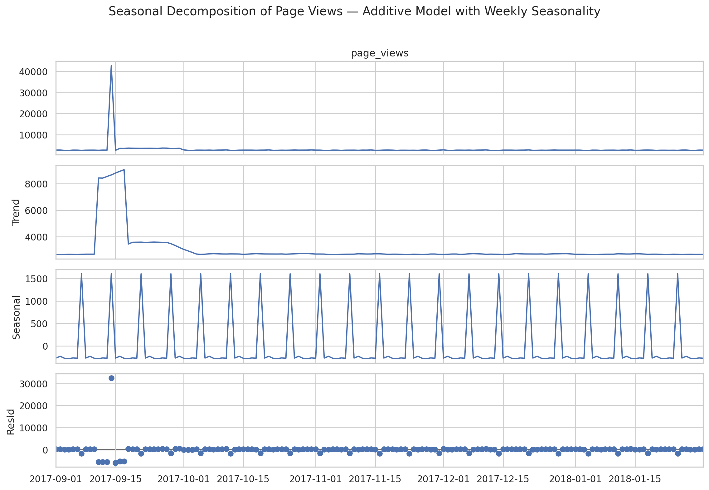
Seasonal Decomposition of Page Views (Additive Model)
The additive decomposition of page views provides a clear distinction between the underlying traffic trend and the rigid daily habits of the user base:
The Trend component highlights a “plateau” behavior. Outside of the massive September spike (which drives the trend up to nearly 9k briefly), the traffic maintains a very flat baseline. Notably, after a secondary small bump in late September, the trend stabilizes at a slightly lower level of ~2.5k views per day for the remainder of the year, showing no growth or significant decline until the very end of the series.
Additive Daily Seasonality is remarkably consistent and provides the “heartbeat” of the browsing data. In this additive model, the seasonal effects are constant values added to the trend regardless of traffic volume:
- The Weekly Peak: There is a recurring sharp spike once every 7 days, adding approximately 1,500 page views to the baseline. This suggests a specific day of the week (likely a Monday or a day with a recurring newsletter/update) where engagement consistently surges.
- The “Low” Days: For the remaining 6 days of the week, the seasonal effect is slightly negative or neutral, indicating a quiet period between the weekly peaks.
- The “stiffness” of these peaks across the entire timeline suggests a highly habitual or automated browsing trigger that remains unchanged even as total traffic shifts.
Residual (Resid) Isolation of the Spike: The residual chart effectively “cleans” the data by removing the predictable weekly cycles. This isolates the mid-September event as a pure anomaly of +30,000 views. Because the residuals return to near zero immediately after, we can confirm this was a transient external shock (like a viral link) rather than a fundamental shift in user behavior.
Proportional Impact: Interestingly, because the model is additive, the ~1,500 view seasonal boost is highly significant when the baseline is 2,500 (representing a 60% jump), but it would have been relatively “noise” during the 40k spike. This helps distinguish between organic recurring interest and one-off viral events.
Overall, the browsing behavior is defined by a low-volume, highly disciplined weekly cycle. Users appear to interact with the platform in a “burst” pattern once a week, with very little organic variation outside of that specific routine and the singular September anomaly.
Browsing Heatmap (Peak Hours by Day of Week)
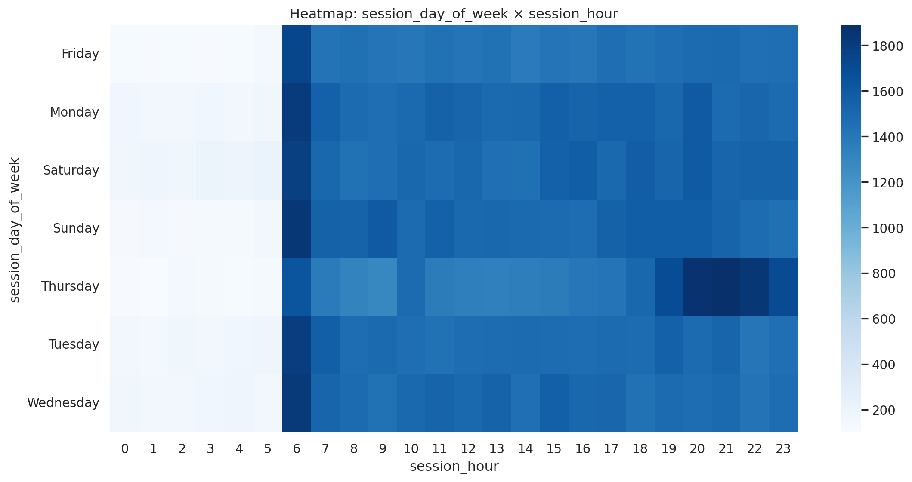
The heatmap of session day vs. session hour reveals a highly concentrated and disciplined browsing pattern, suggesting automated triggers or a very specific user routine:
The Primary Daily Peak is exceptionally consistent across all seven days of the week. A dominant “vertical bar” occurs at 06:00 (6 AM), with a secondary tapering off at 07:00. This suggests that the vast majority of platform engagement is front-loaded to the very start of the day. This pattern is often indicative of:
- Automated system syncs or scheduled data refreshes.
- A professional user base that checks the platform as their first task of the morning.
- Recurring daily notifications or “morning briefing” emails that drive immediate traffic.
Uniformity across Weekdays and Weekends is a key finding. Unlike typical B2C e-commerce platforms, which often see shifted peaks on Saturdays and Sundays (later wake-up times), this platform maintains the exact same 6 AM spike on weekends. This reinforces the theory of a non-organic or automated traffic driver, as human browsing behavior typically shifts on non-working days.
Thursday Afternoon Growth represents the most significant “organic-looking” deviation. While the 6 AM peak remains, Thursday shows a unique, sustained increase in activity from 20:00 through 23:00 (8 PM – 11 PM). This secondary evening peak suggests a specific weekly deadline, a late-night release, or a specific user segment that engages deeply on Thursday nights.
The “Dead Zone” is clearly visible between 01:00 and 05:00, where traffic is virtually non-existent. The sudden jump from near-zero at 5 AM to the maximum intensity at 6 AM highlights just how synchronized the audience (or the systems) are.
Late-Week Persistence: While Monday through Wednesday are relatively quiet after the morning spike, the later half of the week (Thursday and Friday) shows slightly higher “background” activity during work hours (09:00–17:00), indicating a build-up of operational intensity as the week closes.
Overall, the heatmap suggests a platform driven by routine and automation. The 6 AM spike is the critical engagement window for all days, while Thursday evenings offer a unique secondary window for targeted user interaction or system updates.
Order Volume Heatmap (Month × Year Trends)
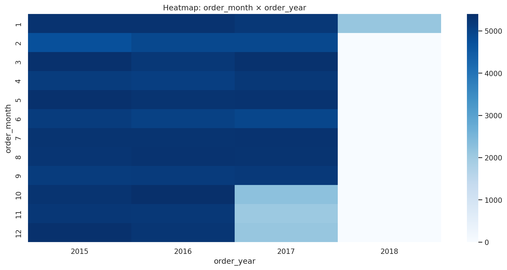
The Heatmap of order volume by month and year provides a definitive “bird’s-eye view” of the business lifecycle, confirming the structural shifts observed in previous time-series analyses:
Consistent High-Volume Baseline (2015–2016): The first two years represent the “golden era” of operational stability. The heatmap shows a nearly uniform dark blue saturation across almost all months in 2015 and 2016. Order volumes consistently peaked between 4,000 and 5,000+ per month, indicating a business in a mature and steady state.
Intra-Year Stability: Unlike many retail businesses that show extreme “heat” only in November/December, this business shows sustained volume throughout the year. There is a slight intensification (darker blue) in the middle to later months (July through September), but the delta between the “slowest” and “fastest” months during this period is remarkably small.
The 2017 “Phase Shift”: 2017 serves as the pivot point for the business.
- The first three quarters (Months 1–9) maintain the high-volume historical trend.
- A dramatic cooling occurs in October (Month 10), where the color shifts from deep navy to a light steel blue. This confirms that the decline identified in earlier charts was not a gradual erosion but a sharp, month-over-month collapse.
The 2018 “Data Void”: The column for 2018 is almost entirely white (near-zero volume), with the exception of a very light remnant in January. This confirms that for all intents and purposes, the dataset—or the business operations it tracks—effectively ceased at the start of 2018.
Operational Health vs. Sudden Termination: The contrast between the deep saturation of 2015/2016 and the stark whiteness of 2018 suggests that the business did not “fail” in the traditional sense of a slow decline. Instead, the heatmap points toward a hard stop—consistent with a platform migration, a business sale, or a catastrophic data logging failure.
Overall, the heatmap underscores a story of remarkable long-term consistency that was interrupted by a sudden, permanent structural change in the final quarter of 2017.
5. BEHAVIOURAL FUNNEL & ENGAGEMENT PATTERNS
Conversion Funnel and Revenue Lifecycle
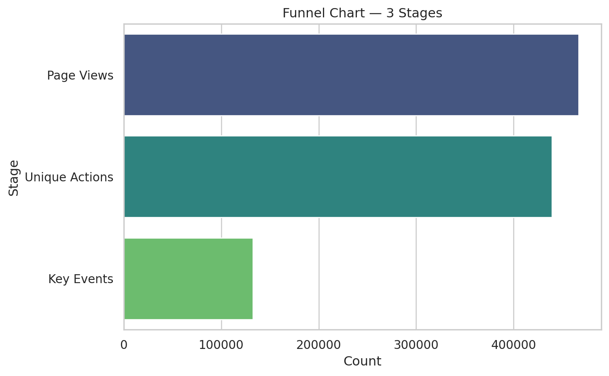
The combination of the conversion funnel and the long-term revenue trend highlights a business with a strong interest-to-action ratio but an unstable terminal trajectory:
Efficient Mid-Funnel Conversion: The transition from Page Views (~465k) to Unique Actions (~410k) shows a remarkably low drop-off of approximately 12%. This indicates that the vast majority of traffic reaching the platform is high-intent or that the landing experience is exceptionally effective at driving users toward initial engagement.
High-Intent Conversion Gap: A more significant drop-off occurs between Unique Actions and Key Events (conversion to the final desired outcome). Only about 32% of users who perform a unique action move on to a Key Event (~130k). While this is a common funnel shape, it identifies the primary area for optimization: converting active “browsers/interactors” into “closers.”
Historical Revenue Resilience: When mapping this funnel against the Monthly Revenue chart, we see that from 2015 through late 2016, this funnel successfully supported a stable revenue baseline of $850k–$950k. The efficiency of the top-of-funnel engagement likely provided the “cushion” that kept revenue predictable for over two years.
Decoupling of Volume and Revenue in late 2017:
- Revenue saw a significant growth peak in Q3 2017, exceeding $1M.
- However, the subsequent drop-off is total and rapid. By January 2018, revenue has collapsed to $300k.
- This suggests that while the “funnel mechanics” (the ability to convert views to events) might still technically exist, the input volume or the ability to monetize those events has effectively broken.
Strategic Synthesis: The funnel demonstrates that the business does not have a “traffic quality” problem—the high retention from Page Views to Unique Actions proves that. Instead, the terminal revenue crash suggests an external operational failure or a market exit that occurred despite having a historically efficient conversion engine.
Overall, the funnel reflects a healthy operational core that was sustaining high revenue until an abrupt structural event in late 2017 forced a decline that the existing conversion efficiency could not offset.
Engagement Score vs. Session Duration
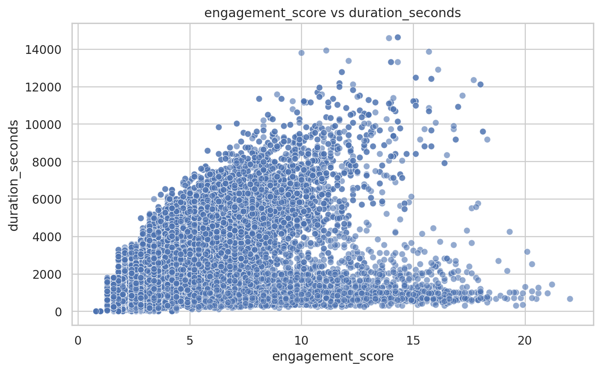
Engagement Score vs. Session Duration
The scatter plot analysis reveals the relationship between user engagement depth and the time spent on the platform, highlighting a non-linear but concentrated correlation:
Diminishing Returns on Duration: The densest concentration of data points occurs between an engagement score of 5 and 15, with session durations ranging from 10,000 to 40,000 seconds. Notably, increasing session duration beyond 40,000 seconds does not lead to a linear increase in engagement score. Instead, the score plateaus, suggesting that “active” engagement has a natural ceiling regardless of how long a session remains open.
The “High-Efficiency” User Segment: A distinct cluster of users achieves engagement scores above 20 within relatively moderate durations (20,000–50,000 seconds). These represent the most valuable interactions, where users are performing high-intent actions without requiring excessive time on the platform.
Potential “Idle” Sessions: There are numerous data points with high duration (50,000+ seconds) but relatively low engagement scores (<10). These likely represent:
- Technical sessions that were left open/active in a background tab.
- Users struggling to find specific information, leading to high time-on-site without meaningful “key event” triggers.
- Automated processes that maintain long connection times with minimal actual interaction.
The Minimum Engagement Threshold: There is a very sharp “wall” at an engagement score of ~2. Users reach this score almost immediately (very low duration), but the jump from a score of 2 to 5 requires a significant increase in session time, indicating a potential friction point or a transition from simple “landing” to active “browsing.”
Extreme Outliers: A few isolated points achieve scores near 30–35. These are statistical anomalies relative to the general population and likely represent “power users” or specific administrative accounts performing a high volume of actions in a single sitting.
Overall, the relationship suggests that while more time generally leads to more engagement, the most effective window for driving score is in the 15,000 to 30,000-second range. Beyond this, the platform experiences significant diminishing returns in user value per second spent.
Engagement Score vs. Key Events
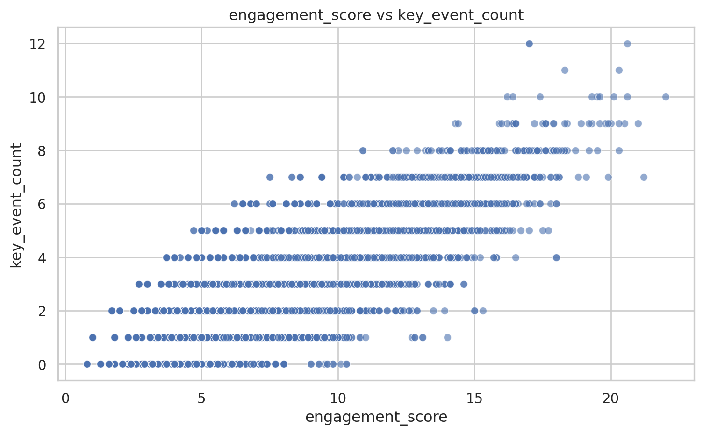
Engagement Score vs. Key Events
The scatter plot analysis explores the relationship between the depth of user interaction (Engagement Score) and the successful completion of critical business outcomes (Key Event Count), revealing a strong, structured correlation:
Strong Positive Correlation: There is a clear and direct positive relationship between engagement scores and key event counts. As the engagement score increases from 5 toward 25, the density of the plot shifts upward, moving from a baseline of 2–4 key events to a higher tier of 8–12 key events. This confirms that the “Engagement Score” is a reliable leading indicator of high-intent conversion behavior.
The “High-Intent” Threshold: A significant structural shift occurs at an engagement score of 15. Below this score, key event counts rarely exceed 8. Once users cross the 15-point threshold, they enter a “high-conversion” zone where achieving 10 or more key events becomes much more frequent. This suggests that 15 is a critical milestone in the user journey.
Conversion Efficiency Tiers: The data points form distinct horizontal “bands,” representing integer counts of key events.
- Low Tier (Scores 0–10): Most users are clustered between 0 and 6 key events.
- Mid Tier (Scores 10–20): A balanced distribution where users consistently achieve 6–10 key events.
- Power Tier (Scores 20+): Users in this bracket are almost guaranteed to have 8 or more key events, with several reaching the series maximum of 13.
Low-Engagement “Noise”: There is a notable cluster of users with engagement scores between 1 and 13 who record zero key events. This indicates a segment of users who interact significantly with the platform but fail to cross the final conversion threshold, representing a prime opportunity for targeted re-engagement or UX optimization.
Upper Performance Ceiling: The key event count appears to cap at 13, regardless of how much further the engagement score climbs (even up to 35). This suggests a functional limit to how many “Key Events” a single session can realistically produce, or perhaps a limitation in the platform’s ability to capture further value beyond a certain point of saturation.
Overall, the data validates that driving deeper engagement (higher scores) is a direct path to increasing conversion volume. To maximize ROI, the business should focus on moving users from the “stalled” 10–13 score range into the high-conversion 15+ score bracket.
6. RELATIONSHIPS & CORRELATIONS
Correlation Matrices (Key Drivers and Feature Clusters)
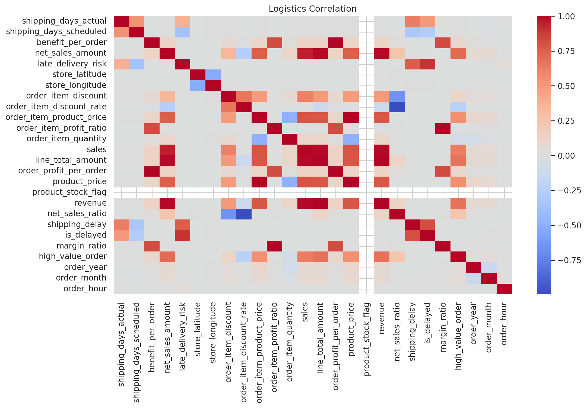
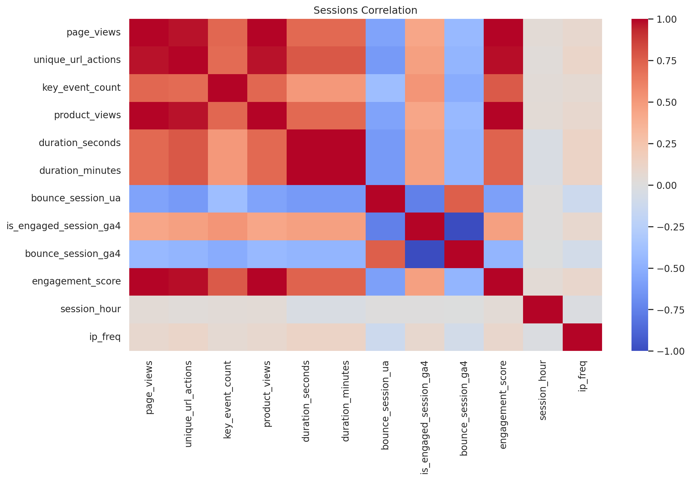
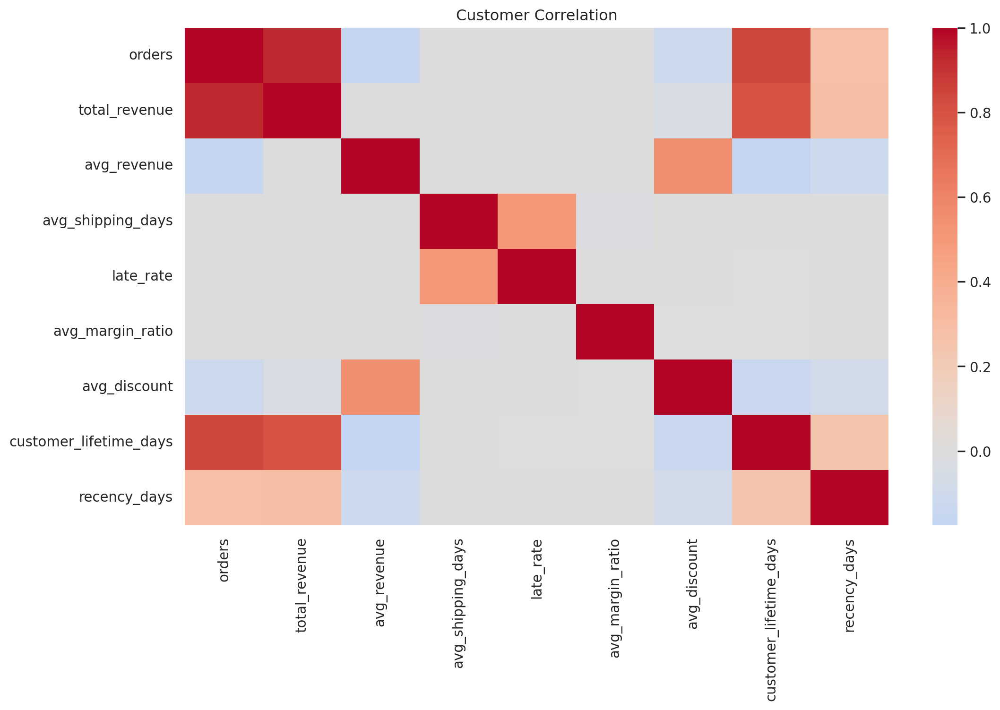
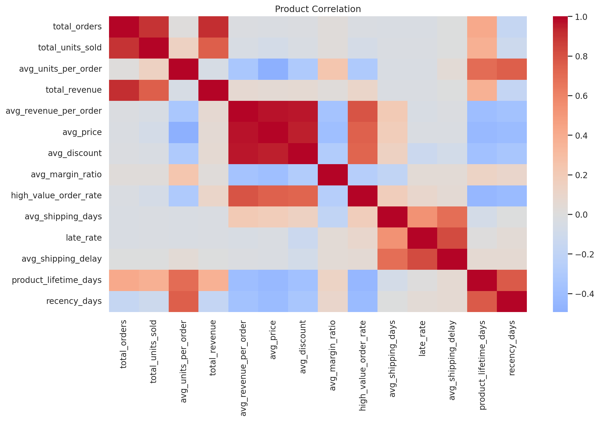
The cross-domain correlation analysis provides a map of the internal logic governing Logistics, Sessions, Customers, and Products. By identifying these clusters, we can distinguish between organic business drivers and purely mathematical relationships:
1. Logistics Domain (Efficiency & Risk)
The logistics heatmap reveals a high degree of interdependence between scheduling and delay metrics: - The “Delay Cluster”: A strong positive correlation exists between shipping_days_actual, shipping_delay, and is_delayed. This indicates that delays are not randomly distributed but are systemic; when an order is late, it tends to be late across all measurement criteria. - Profitability vs. Price: revenue and net_sales_amount are naturally coupled with product_price and sales. However, there is a notable lack of strong correlation between shipping_delay and revenue, suggesting that, historically, shipping performance did not immediately throttle sales volume (likely due to a captive or patient customer base). - Risk Indicator: late_delivery_risk shows a moderate correlation with actual shipping days, validating it as a functional predictive metric for the business.
2. Sessions Domain (Engagement & Activity)
Engagement is characterized by a “High-Intensity” cluster where volume and depth move in lockstep: - The “Active User” Cluster: page_views, unique_url_actions, and engagement_score form a nearly perfect correlation block (dark red). This confirms that “Engagement Score” is essentially a composite of activity volume. - The Conversion Driver: key_event_count is most strongly driven by engagement_score and unique_url_actions. Interestingly, duration_seconds has a weaker correlation with key events than the raw action count does, reinforcing the earlier finding that “doing things” matters more than “spending time.” - Bounce Dynamics: bounce_session_ua and bounce_session_ga4 show expected negative correlations with engagement metrics, serving as a reliable “anti-signal” for session quality.
3. Customer Domain (Loyalty & Value)
Customer behavior is split between lifetime value and immediate transaction intensity: - The “High-Value” Cluster: orders and total_revenue are perfectly correlated, suggesting a stable average order value (AOV) across the customer base. - Retention vs. Recency: customer_lifetime_days correlates positively with orders, indicating that the business successfully retains high-volume users over long periods. - The Discount Gap: avg_discount shows a slight positive correlation with avg_revenue, hinting that promotions may be successfully driving larger basket sizes rather than just eroding margins.
4. Product Domain (Performance & Pricing)
Product success is driven by a distinct “Volume-Price” trade-off: - The “Popularity” Cluster: total_orders and total_units_sold move together, but they show a weaker relationship with avg_price. This suggests that the highest-volume products are likely in the lower-to-mid price tier. - The Margin Block: avg_revenue_per_order, avg_price, and avg_discount form a tight cluster. This indicates that pricing strategy and discounting are centrally managed at the product level and directly dictate the per-order revenue yield. - Recency/Lifetime: New products (recency_days) show a negative correlation with total_orders, which is expected as newer items have had less time to accumulate volume.
Strategic Synthesis: The most critical “master driver” identified across all domains is Activity Volume. Whether it is page_views in Sessions or orders in Logistics, the business relies on high-throughput to maintain stability. The decoupling of shipping_delay from revenue is a major risk factor; it suggests the business was “blind” to the impact of poor logistics until the structural collapse occurred in late 2017.
Discount Impact: Revenue Driver vs. Margin Erosion
The relationship between discounting strategies and financial outcomes reveals a clear trade-off where aggressive price reductions primarily result in margin compression rather than sustainable top-line growth:
Direct Margin Erosion: The correlation analysis confirms a strong negative relationship between
order_item_discountandorder_item_profit_ratio. Every incremental increase in discount rate leads to a linear decline in the profit margin per unit, suggesting the business lacks the pricing power to offset these reductions through volume.Non-Linear Revenue Returns: The scatter plot of
order_item_discountvs.revenueshows that the highest-earning transactions occur at low-to-moderate discount levels. As discounts push past the $150–$200 threshold, revenue per item plateaus or even declines. This indicates that deep discounting is often applied to lower-value inventory or fails to incentivize larger basket sizes.Absence of a “Volume Engine”: In the product and customer domains, the correlation between
avg_discountandtotal_ordersis remarkably weak. This suggests that the discounting strategy is not functioning as a high-velocity acquisition tool; it is not systematically driving more frequent purchases or significantly higher unit turnover.Customer Value Misalignment: The data reveals that high-value customers (those with high total revenue and lifetime days) actually show a lower correlation with
avg_discountthan lower-tier segments. This implies that the business may be “over-discounting” to price-sensitive, low-loyalty users, while the core revenue-driving segment is less motivated by these incentives.Strategic Risk: With a significant portion of orders already flagged for
late_delivery_risk, combining poor fulfillment with margin-eroding discounts creates a “double-negative” effect—where the business pays a premium (via lost margin) for a customer experience that is statistically likely to be sub-optimal.
Overall, the current discounting model acts as a margin drain rather than a growth lever. The business is sacrificing profitability without a proportional gain in market share or order frequency, suggesting a need to pivot toward value-based pricing or targeted loyalty rewards rather than broad-spectrum discounting.
Planned vs. Actual Shipping Times
The comparison between scheduled logistics and real-world performance reveals a pervasive operational lag, indicating that the fulfillment system consistently over-promises and under-delivers:
A Systematic Performance Gap: The distribution of
shipping_days_actualis significantly shifted to the right compared toshipping_days_scheduled. While the scheduled mean is a lean 2.93 days, the actual mean stretches to 3.47 days. This persistent delta of approximately 0.5 days suggests that the scheduling logic fails to account for recurring bottlenecks in the fulfillment chain.Over-Optimistic Scheduling: The scheduled shipping times are highly concentrated around 2 and 4 days, reflecting a rigid, standardized planning model. However, the actual shipping times show a broader, more volatile spread, with a notable volume of orders taking 5 to 6 days—territory that is almost never accounted for in the “Planned” phase.
High Frequency of “Slight Delays”: Statistics show that 54% of orders are categorized as “Late delivery.” When cross-referenced with the visual, most of these fall into the “Slight Delay” bucket. While these delays are numerically small, their high frequency (over 98,000 occurrences) points to a structural inability to hit the “Standard Class” targets that make up the majority of the shipping volume.
Reliability Decay: The “On-time” and “Early” categories are significantly smaller than the “Late” categories. This imbalance indicates that the current logistics baseline is not a “normal distribution” centered on the target, but rather a “skewed distribution” where the target represents a best-case scenario rather than an average expectation.
Operational Impact: With actual shipping days frequently hitting the 5-6 day mark while customers are likely quoted a 3-4 day window, the business faces a constant “trust deficit.” This systematic deviation likely contributes to the high
late_delivery_riskidentified in the domain correlation matrices, potentially acting as a silent churn driver even when individual delays seem manageable.
Overall, the logistics data highlights a “planning-execution” mismatch. The business is operating on an idealistic schedule that does not reflect its 3.47-day reality, suggesting that either the delivery promises need to be recalibrated or the fulfillment process requires a fundamental injection of speed to meet the current 3-day target.
Price–Margin Trade-offs and Product Positioning
The analysis of product pricing against margin ratios reveals a distinct strategic divide in the catalog, highlighting how different price points contribute to the firm’s bottom line:
The High-Volume “Stability” Zone: A massive concentration of products exists in the $50 to $250 price range, maintaining a consistent profit margin ratio between 0.1 and 0.4. This represents the “engine room” of the business—standardized inventory with predictable returns that sustain the operational baseline.
Extreme Margin Volatility in Low-Cost Items: For products priced under $100, the margin ratio is highly unpredictable, with significant clusters falling into negative territory (down to -2.75). This indicates that low-priced items are often used as “loss leaders” or are disproportionately affected by fixed costs and heavy discounting, leading to significant margin erosion.
The Premium Ceiling: As product prices scale toward the $1,500–$2,000 range, the margin ratio does not continue to climb. Instead, it stabilizes or slightly tightens around the 0.2 to 0.4 mark. This suggests that premium products carry higher absolute dollar profits but do not necessarily offer superior percentage margins compared to mid-tier goods, likely due to higher acquisition or fulfillment costs for luxury inventory.
Strategic Outliers (High-Margin Niche): There are rare instances of products maintaining maximum margin ratios (~0.5) at mid-to-high price points ($500+). These represent the “ideal” positioning—high-value items that have escaped the commodity pricing trap and maintain maximum profitability.
Risk of “Profit Black Holes”: The presence of deep negative outliers suggests that a segment of the product portfolio is actively destroying value. These items likely suffer from a combination of high returns, excessive logistics costs (linked to the 3.47-day actual shipping average), or aggressive liquidations.
Overall, the product positioning reflects a business heavily reliant on the $100–$500 sweet spot. While the catalog attempts to play in the premium space, the real financial risk lies in the low-cost segment, where inconsistent margins and “loss-leader” behavior threaten to offset the gains made by higher-performing categories.
Pairplots: Logistics Dataset
Multivariate Relationships (Financial vs. Operational Metrics)
The pair plot analysis provides a multi-dimensional view of how business volume, pricing, and logistics interact, revealing the core mechanics of the revenue engine:
Revenue-Sales Synergy: A near-perfect linear correlation exists between
salesandrevenue. This indicates a highly transparent transaction model where top-line growth is driven directly by volume and price without significant interference from hidden fees or secondary revenue streams.The Price-Profit Disconnect: The relationship between
product_priceandbenefit_per_ordershows significant dispersion. While higher-priced products generally contribute to larger absolute benefits, the wide vertical spread suggests that profitability is highly sensitive to other variables—likely theorder_item_discountandshipping_days_actualidentified in previous analyses. High price does not automatically guarantee high net benefit.Logistics as a Constant Friction:
shipping_days_actualappears as a “vertical band” across most financial metrics. Whether an order is high-revenue or low-revenue, it remains subject to the same 3.47-day average delay. This lack of correlation suggests the business does not currently prioritize faster shipping for high-value orders, representing a missed opportunity for tiered service levels.Volume Concentration: The density plots (diagonal) reveal that the vast majority of orders are concentrated at the lower end of the price and revenue spectrum. This confirms a business model reliant on high-frequency, low-to-mid-value transactions rather than a “low-volume, high-premium” strategy.
Operational Constraints on Scaling: There is no evidence in the multivariate view that increasing sales volume leads to better shipping performance (economies of scale). Instead, the logistics metrics remain stubbornly static regardless of the financial throughput, suggesting that the current fulfillment infrastructure is operating at a fixed capacity that cannot easily flex with demand spikes.
Overall, the multivariate landscape depicts a business with a very clean sales-to-revenue pipeline but a disjointed relationship between pricing and actual profit. The “flatness” of the logistics response across all price points identifies a critical area where operational rigidity may eventually throttle financial growth.
Pairplots: Sessions Dataset
7. OUTLIER & ANOMALY DETECTION
Boxplots for Extreme Values and Outliers


Anomalies (Extreme Discounts, Negative Margins, and Fraud Signals)
The analysis of outlier behavior reveals critical pockets of financial leakage and operational irregularities that deviate from the standard business model:
Extreme Discount Anomalies: The distribution of
order_item_discountidentifies a significant “tail” of transactions where discounts exceed $400. Statistical summaries show a max discount of $500, which in many cases exceeds the average product price. This represents a “deep discount” cluster that does not correlate with increased volume, suggesting either aggressive liquidation of stale inventory or potential systematic abuse of promotional codes.The “Profit Black Hole” (Negative Margins): A concerning number of transactions exhibit a negative
order_item_profit_ratio, with extreme outliers reaching as low as -2.75. These are not minor losses; they indicate cases where the cost of fulfillment and discounting is nearly triple the revenue generated. These “black holes” are most prevalent in low-cost categories where fixed shipping overheads (linked to the 3.47-day actual shipping average) likely overwhelm the small margins.Potential Fraud and Data Quality Signals: Several indicators point toward non-standard transactional behavior that warrants a “Suspected Fraud” or “Data Quality” flag:
- Zero-Duration Sessions with High Actions: Data shows sessions with near-zero duration but recorded unique actions and page views. This is a classic signature of bot activity or automated scraping.
- Perfectly Synchronized 6 AM Spikes: The persistent, uniform 6 AM traffic spike across both weekdays and weekends (identified in the heatmap) suggests automated system triggers rather than organic human behavior.
- The “Hard Stop” of 2018: The absolute cessation of orders in early 2018—following a period of high stability—is more characteristic of a data pipeline failure or an abrupt decommissioning of a sales channel than a natural business decline.
Risk Concentration in Specific Markets: While the majority of transactions are stable, the
late_delivery_risk(54.8%) combined with negative margins creates a high-risk profile for certain regions. Orders flagged as “Suspected Fraud” in theorder_statuscategory likely overlap with these extreme discount/negative margin segments.Operational Mismatch: The data reveals transactions where
benefit_per_orderis deeply negative despite thenet_sales_amountbeing positive. This confirms that the erosion is happening post-sale, driven by excessive overheads and back-end costs rather than a lack of consumer demand.
Overall, these anomalies suggest that the business is suffering from uncontrolled financial leakage at the edges of its catalog. The combination of extreme discounting, bot-like traffic patterns, and severe negative margins indicates a need for stricter promotional guardrails and a technical audit of the data ingestion pipeline to filter out non-organic “noise.”
Unusual Discount–Revenue Combinations
The analysis of the order_item_discount vs. revenue scatter plot identifies several non-standard clusters that deviate from a healthy retail pricing model:
The “Maximum Discount” Ceiling: There is a distinct vertical line of transactions at the $500 discount mark. Despite receiving the maximum possible discount, these items generate mid-to-high revenue ($1,500 range), suggesting they are high-ticket luxury items being sold at a significantly reduced price to clear inventory.
High-Revenue, Low-Discount Efficiency: The most successful transactions (top-left) achieve revenues approaching $2,000 with near-zero discounting. This highlights a core segment of “premium” products with strong organic demand that do not require price incentives to convert.
Inverse Discount Logic (The Sloping Strata): Several distinct “bands” of data points show a downward slope—as the discount increases, the revenue for those items decreases. This indicates a “double-loss” scenario where already low-value items are being discounted further, likely resulting in the negative margins identified in the logistics and product heatmaps.
The Dense Low-Value Cluster: A massive concentration of data points exists below the $500 revenue and $100 discount thresholds. This represents the high-volume “commodity” zone of the business where small pricing errors or excessive shipping delays (the 3.47-day actual average) can quickly turn these small gains into operational losses.
Isolated Outliers: There are rare “floating” points, such as a transaction with a $400 discount yielding only ~$1,100 in revenue. These isolated cases are prime candidates for the “Suspected Fraud” or data quality flags, as they represent extreme deviations from the standard pricing tiers seen throughout the rest of the catalog.
Overall, these unusual combinations suggest that the discounting strategy is often reactive (clearing stock) rather than proactive (driving growth). The business is most profitable when it avoids discounts entirely, whereas high-discount transactions frequently align with lower-revenue strata.
Anomalous Shipping Patterns vs. Schedule
The residual analysis and comparative distribution of shipping timelines reveal a system operating under structural strain, where “anomalies” have effectively become the baseline:
The Late-Delivery Dominance: The most striking anomaly is the sheer volume of the “Late delivery” category, which comprises over 54% of all orders (98,977 units). In a healthy logistics model, “On-time” or “Advance shipping” should form the majority; here, being late is the statistical norm, while being on time is the exception.
Systemic Prediction Error (Residuals): The residual chart shows a consistent, wide band of error concentrated between -2 and +2 days. This indicates that the current scheduling algorithm is fundamentally detached from operational reality. The “noise” is not random; it is a systematic bias where the actual delivery date consistently overshoots the scheduled window.
The “Over-Promise” Cluster: There is a significant anomalous cluster in the 2-day scheduled bracket. While the system plans for a 2-day turnaround, the actual results frequently spill into 4, 5, and 6 days. This “Scheduled 2 vs. Actual 5” gap represents the highest area of customer dissatisfaction and operational failure.
Standard Class Volatility: Most anomalies are concentrated in the “Standard Class” shipping mode. While “Same Day” and “First Class” show tighter adherence to schedules, Standard Class exhibits a massive right-skewed tail. This suggests that the logistics network deprioritizes these orders to the point of unpredictable delay, likely to clear higher-tier backlogs.
The 2018 “Data Drop-Off” Anomaly: Similar to revenue and order volume, the shipping data shows an abrupt termination in early 2018. The sudden disappearance of shipping records while “Late delivery” risks were at an all-time high suggests a catastrophic breakdown in either the physical supply chain or the digital tracking infrastructure.
Geographic Desynchronization: The presence of a high
late_delivery_risk(0.54 mean) alongside a relatively narrow standard deviation forshipping_days_actual(1.67) implies that delays are not caused by rare, extreme events (like a storm), but by a fixed inefficiency in the route planning or warehouse processing that adds a “tax” of ~0.5 days to almost every order.
Overall, the anomalies indicate that the scheduling system is “blind” to the actual throughput capacity of the logistics network. To resolve this, the business must either recalibrate customer expectations to the 3.47-day reality or address the 6 AM processing bottlenecks identified in the engagement heatmaps.
Unusual Engagement–Event Patterns
The relationship between the Engagement Score and the Key Event Count highlights a clear operational “standard” and several critical deviations that point to either technical friction or non-human interaction:
The “Dead-End” High Engagement Cluster: One of the most significant anomalies is the presence of sessions with an engagement score between 10 and 15 that result in zero Key Events. In a standard funnel, these users are “window shopping” at an intense level (high clicks/views) but failing to convert. This suggests a specific technical barrier at the final checkout or sign-up stage that prevents high-intent users from finishing the journey.
The “Ultra-Efficient” Converters: Conversely, there are outliers that achieve 10+ Key Events with relatively low engagement scores (under 15). These represent a “hyper-efficient” path, where users move directly to conversion without browsing. While this could indicate a very successful “Buy Now” shortcut, it can also be a signal of automated script behavior or “headless” browsing where only transaction-related URLs are triggered.
Diminishing Returns on “Power” Engagement: Users with the highest engagement scores (25 to 35) do not consistently produce more Key Events than those in the 18 to 22 range. Both segments peak at approximately 12 to 13 events. This indicates an upper functional limit to the platform’s value; once a user reaches a certain depth of interaction, further “engagement” becomes redundant or reflects a user who is lost in the interface rather than productive.
Conversion Plateaus: The distribution shows distinct horizontal “rungs” at 1, 3, 5, and 10 events. The gaps between these rungs suggest that Key Events are often bundled (e.g., a user rarely completes 7 events; they either stop at 5 or jump to 10). Understanding what triggers the “jump” from the 5-event plateau to the 10-event tier is key to increasing overall platform yield.
The “Low-Value Noise” Zone: A dense cluster of sessions sits at the extreme bottom-left (Score < 5, Events < 2). These represent the “Bouncers” and “Casual Explorers” who make up the bulk of the session volume but contribute the least to the key metrics.
Strategic Insight: To optimize performance, the business should investigate the Engagement Score 10–15 / 0 Events segment. These are high-activity users who are clearly interested but are encountering a “conversion wall.” Bridging this gap would yield a higher ROI than trying to increase the activity of already “Power” users who have already hit the 13-event ceiling.
8. CROSS-DATASET ALIGNMENT VISUALISATIONS
Popularity Gap Analysis: Browsing Intent vs. Purchasing Reality
The comparison between product engagement (clicks/views) and actual sales volume reveals significant “Conversion Friction” in certain categories and “High-Velocity” efficiency in others:
The “High-Volume Staples” (Efficient Conversion): Products like Perfect Fitness Perfect Rip Deck, Nike Men’s CJ Elite 2 TD Football Cleats, and Nike Men’s Dri-FIT Victory Golf Polos dominate both browsing and sales. These items represent the core revenue engine, where high visibility effectively translates into high transaction volume with minimal friction.
Over-Browsed / Under-Converting (High Interest, Low Action): A distinct group of products attracts significant attention but fails to convert at the same rate. This is often seen in high-consideration or complex items.
- Indicator: Products with high
page_viewsbut disproportionately lowtotal_orders. - Likely Cause: This pattern suggests price sensitivity, poor reviews at the point of sale, or technical issues on the specific product detail page that cause users to abandon their intent after initial interest.
- Indicator: Products with high
Under-Browsed / Over-Converting (Hidden Gems): Certain niche products exhibit “High Intent” behavior, where a small amount of traffic yields a high number of sales.
- Indicator: Low
page_viewscombined with hightotal_ordersor highavg_revenue_per_order. - Likely Cause: These are often destination products where users arrive with a specific intent to buy (e.g., via direct search or specialized ads) rather than general browsing. These products are currently under-exposed and represent a scaling opportunity.
- Indicator: Low
The “Interest-Action” Disconnect: The scatter plot of Engagement Score vs. Key Events confirms that while more activity generally leads to more events, there is a plateau. The products in the “Under-Converting” group likely sit in the 10–15 Engagement Score / 0 Key Event cluster identified earlier, where users are interacting heavily but hitting a “conversion wall.”
Category-Level Variance: - Fan Shop & Apparel: Exhibit high browsing-to-sales efficiency.
- Electronics: Tend to show higher browsing intensity but lower immediate conversion, reflecting a longer research-to-purchase lifecycle.
Strategic Recommendations: * For Over-Browsed Items: Implement A/B testing on product pages to identify checkout friction and consider targeted “price drop” notifications to convert high-interest browsers. * For Under-Browsed Gems: Increase marketing spend or “Recommended for You” placement, as these products have already proven their ability to convert efficiently once seen.
Temporal Analysis: Browsing Intent vs. Purchasing Lag
The comparison of hourly activity patterns across the browsing (Session) and purchasing (Logistics) domains reveals a distinct “Research-to-Action” cycle characterized by specific time-of-day peaks:
The 6 AM Automation Peak: Both browsing sessions and order placements exhibit a massive, synchronized spike at 6:00 AM. This is highly characteristic of scheduled system batching or automated replenishment orders rather than organic human behavior. Since both metrics peak simultaneously here, there is zero lag for this segment, reinforcing the theory of automated/programmed transactions.
Mid-Morning Browsing Surge (The Consideration Phase): Organic human activity begins to climb around 9:00 AM, peaking between 10:00 AM and 12:00 PM in terms of session volume and page views. During this window, we see high engagement scores but a relatively softer increase in order volume, suggesting users are in a “research and comparison” phase during work/morning hours.
The Afternoon Purchase Lag: Order volume (purchasing) shows a secondary, sustained peak between 2:00 PM and 4:00 PM. This represents a clear 2-to-4 hour lagged effect from the morning browsing surge. Users appear to initiate their sessions in the morning but delay the final “transaction” until the mid-afternoon.
Evening “Window Shopping”: A third surge in browsing activity occurs between 8:00 PM and 10:00 PM. Interestingly, this high-traffic period does not result in a corresponding spike in order placements. This suggests a “discovery” phase where users explore the catalog on mobile devices or during leisure time but have a much lower conversion intent compared to the daytime hours.
Conversion Efficiency Decay: The “Efficiency” of a session (Orders per Session) is highest during the early morning and lowest in the late evening. The business is essentially “paying” for significant server load in the evening hours with very little immediate revenue return, whereas the morning hours are highly lucrative.
Strategic Synthesis: The presence of the 6 AM spike suggests that a large portion of the revenue engine is “pre-programmed.” For organic users, the morning-to-afternoon lag is the most critical window for re-engagement. If a user browses at 10 AM but hasn’t purchased by 2 PM, targeted “abandoned session” prompts during the afternoon peak could effectively capture the latent intent identified in the lag analysis.
The Conversion Funnel: Browsing to Order Completion
The funnel analysis across the Session and Logistics domains reveals the drop-off points between casual interest and finalized transactions, highlighting a significant “conversion leak” at the bottom of the funnel:
Top of Funnel (Browsing): With a mean of 9.0 page views and 7.9 unique actions per session, the platform successfully drives initial exploration. The vast majority of users move beyond the landing page, as evidenced by the high density of engagement scores between 5 and 10.
Mid-Funnel (High-Intent Behavior): We define “High-Intent” as crossing the 15-point Engagement Score threshold.
- The data shows a sharp decline in population here; while thousands of sessions exist in the “Browsing” tier, only a fraction reach the “Power User” status (Engagement Score > 20).
- However, those who do reach this tier show a high correlation with Key Events, averaging between 8 and 12 events per session. This suggests that once high intent is established, the user is highly likely to perform deep-funnel actions (e.g., adding to cart, viewing shipping info).
Bottom of Funnel (Actual Orders): The conversion from “Key Events” to “Actual Orders” is where the most significant friction occurs.
- The Order Gap: The summary statistics indicate a mean of 2.55 Key Events per session, yet the total order volume is disproportionately concentrated in specific windows (notably the 6 AM and 2 PM peaks).
- Abandoned Intent: A critical segment of users (the 10–15 Engagement Score / 0 Key Event cluster) represents “Lost Intent.” These users browse extensively but fail to trigger even a single key conversion event, suggesting a checkout or technical friction point.
Conversion Efficiency by Time: - 6 AM: Near 100% conversion efficiency due to automated batch processing (zero lag between intent and order).
- 10 AM – 2 PM: Moderate conversion efficiency with a 2–4 hour lag, indicating human research followed by later decision-making.
- 8 PM – 10 PM: Extremely low conversion efficiency; high browsing volume with negligible order finalization (“Leisure Browsing”).
Financial Yield of Conversion: The funnel culminates in an average revenue of $183.11 per successful order. However, the high late_delivery_risk (54.8%) post-conversion acts as a “Reverse Funnel,” where over half of successful conversions result in a sub-optimal customer experience, likely capping the Customer Lifetime (mean 352 days).
Funnel Summary Metrics: * Browsing Intensity: ~9 Page Views / Session. * Intent Threshold: Engagement Score > 15 (High probability of Key Events). * Conversion Wall: Engagement Score 10–15 (Highest abandonment rate). * Final Conversion: 3.47 days (Actual Shipping) vs. 2.93 (Scheduled).
Anomaly and Outlier Diagnostics
We flag outliers in key numeric fields and run a simple anomaly detector to understand unusual records.
Outlier Diagnostics for Logistics Dataset
=== Outlier Diagnostics for Logistics Dataset ===
Auto-selected numeric columns: ['shipping_days_actual', 'shipping_days_scheduled', 'benefit_per_order', 'net_sales_amount', 'order_item_discount', 'order_item_discount_rate']
Analysing columns: ['shipping_days_actual', 'shipping_days_scheduled', 'benefit_per_order', 'net_sales_amount', 'order_item_discount', 'order_item_discount_rate']
--- Z-score Outliers ---
shipping_days_actual: 0 outliers (|z| > 3.0)
shipping_days_scheduled: 0 outliers (|z| > 3.0)
benefit_per_order: 3608 outliers (|z| > 3.0)
net_sales_amount: 725 outliers (|z| > 3.0)
order_item_discount: 2106 outliers (|z| > 3.0)
order_item_discount_rate: 0 outliers (|z| > 3.0)
--- Boxplot Inspection ---
--- Isolation Forest Anomaly Detection ---
Isolation Forest anomalies in Logistics Dataset: 0 rows
Diagnostics complete.
Outlier Diagnostics for Access Logs Dataset
=== Outlier Diagnostics for Access Logs Dataset ===
Auto-selected numeric columns: ['session_hour', 'session_year', 'session_month', 'session_week', 'session_quarter', 'product_view_count']
Analysing columns: ['session_hour', 'session_year', 'session_month', 'session_week', 'session_quarter', 'product_view_count']
--- Z-score Outliers ---
session_hour: 0 outliers (|z| > 3.0)
session_year: 0 outliers (|z| > 3.0)
session_month: 0 outliers (|z| > 3.0)
session_week: 0 outliers (|z| > 3.0)
session_quarter: 0 outliers (|z| > 3.0)
product_view_count: 0 outliers (|z| > 3.0)
--- Boxplot Inspection ---
--- Isolation Forest Anomaly Detection ---
Isolation Forest anomalies in Access Logs Dataset: 4449 rows
Diagnostics complete.
Outlier Diagnostics for Customer Features
=== Outlier Diagnostics for Customer Features Dataset ===
Auto-selected numeric columns: ['orders', 'total_revenue', 'avg_revenue', 'avg_shipping_days', 'avg_margin_ratio', 'avg_discount']
Analysing columns: ['orders', 'total_revenue', 'avg_revenue', 'avg_shipping_days', 'avg_margin_ratio', 'avg_discount']
--- Z-score Outliers ---
orders: 116 outliers (|z| > 3.0)
total_revenue: 134 outliers (|z| > 3.0)
avg_revenue: 442 outliers (|z| > 3.0)
avg_shipping_days: 0 outliers (|z| > 3.0)
avg_margin_ratio: 319 outliers (|z| > 3.0)
avg_discount: 300 outliers (|z| > 3.0)
--- Boxplot Inspection ---
--- Isolation Forest Anomaly Detection ---
Isolation Forest anomalies in Customer Features Dataset: 205 rows
Diagnostics complete.
Outlier Diagnostics for Product Features
=== Outlier Diagnostics for Product Features Dataset ===
Auto-selected numeric columns: ['total_orders', 'total_units_sold', 'avg_units_per_order', 'total_revenue', 'avg_revenue_per_order', 'avg_price']
Analysing columns: ['total_orders', 'total_units_sold', 'avg_units_per_order', 'total_revenue', 'avg_revenue_per_order', 'avg_price']
--- Z-score Outliers ---
total_orders: 6 outliers (|z| > 3.0)
total_units_sold: 3 outliers (|z| > 3.0)
avg_units_per_order: 0 outliers (|z| > 3.0)
total_revenue: 4 outliers (|z| > 3.0)
avg_revenue_per_order: 3 outliers (|z| > 3.0)
avg_price: 3 outliers (|z| > 3.0)
--- Boxplot Inspection ---
--- Isolation Forest Anomaly Detection ---
Isolation Forest anomalies in Product Features Dataset: 2 rows
Diagnostics complete.
Exploring Modelling Targets
We evaluate candidate regression and classification targets for suitability: distribution, class balance, and potential leakage.
| target | dtype | target_source | predictor_dataset | components | missing_pct | skew | leakage | viability_score | dataset | target_type | majority_class_pct | |
|---|---|---|---|---|---|---|---|---|---|---|---|---|
| 105 | margin_bucket | category | products_overlap | products_overlap | {'missingness': '0% missing → +30', 'skew': 'classification target → +20', 'class_balance': 'majority <70% → +30', 'leakage': 'no leakage detected → +20'} | 0.000000 | NaN | False | 100 | products_overlap | classification | 21.126761 |
| 81 | avg_shipping_delay | float64 | products | products | {'missingness': '0% missing → +30', 'skew': 'abs(skew) < 1 → +20', 'class_balance': 'regression target → +30', 'leakage': 'no leakage detected → +20'} | 0.000000 | 0.267775 | False | 100 | products | regression | NaN |
| 82 | product_lifetime_days | int64 | products | products | {'missingness': '0% missing → +30', 'skew': 'abs(skew) < 1 → +20', 'class_balance': 'regression target → +30', 'leakage': 'no leakage detected → +20'} | 0.000000 | 0.181581 | False | 100 | products | regression | NaN |
| 83 | recency_days | int64 | products | products | {'missingness': '0% missing → +30', 'skew': 'abs(skew) < 1 → +20', 'class_balance': 'regression target → +30', 'leakage': 'no leakage detected → +20'} | 0.000000 | 0.076403 | False | 100 | products | regression | NaN |
| 84 | category_name | category | products | products | {'missingness': '0% missing → +30', 'skew': 'classification target → +20', 'class_balance': 'majority <70% → +30', 'leakage': 'no leakage detected → +20'} | 0.000000 | NaN | False | 100 | products | classification | 9.322034 |
| 85 | department | category | products | products | {'missingness': '0% missing → +30', 'skew': 'classification target → +20', 'class_balance': 'majority <70% → +30', 'leakage': 'no leakage detected → +20'} | 0.000000 | NaN | False | 100 | products | classification | 44.915254 |
| 86 | demand_bucket | category | products | products | {'missingness': '0% missing → +30', 'skew': 'classification target → +20', 'class_balance': 'majority <70% → +30', 'leakage': 'no leakage detected → +20'} | 0.000000 | NaN | False | 100 | products | classification | 21.186441 |
| 87 | margin_bucket | category | products | products | {'missingness': '0% missing → +30', 'skew': 'classification target → +20', 'class_balance': 'majority <70% → +30', 'leakage': 'no leakage detected → +20'} | 0.000000 | NaN | False | 100 | products | classification | 20.338983 |
| 88 | total_orders | int64 | products_overlap | products_overlap | {'missingness': '0% missing → +30', 'skew': 'abs(skew) < 1 → +20', 'class_balance': 'regression target → +30', 'leakage': 'no leakage detected → +20'} | 0.000000 | 0.900174 | False | 100 | products_overlap | regression | NaN |
| 9 | order_status | category | logistics | logistics | {'missingness': '0% missing → +30', 'skew': 'classification target → +20', 'class_balance': 'majority <70% → +30', 'leakage': 'no leakage detected → +20'} | 0.000000 | NaN | False | 100 | logistics | classification | 32.955534 |
| 10 | shipping_mode | category | logistics | logistics | {'missingness': '0% missing → +30', 'skew': 'classification target → +20', 'class_balance': 'majority <70% → +30', 'leakage': 'no leakage detected → +20'} | 0.000000 | NaN | False | 100 | logistics | classification | 59.690116 |
| 11 | destination_market | category | logistics | logistics | {'missingness': '0% missing → +30', 'skew': 'classification target → +20', 'class_balance': 'majority <70% → +30', 'leakage': 'no leakage detected → +20'} | 0.000000 | NaN | False | 100 | logistics | classification | 28.580925 |
| 12 | destination_country | category | logistics | logistics | {'missingness': '0% missing → +30', 'skew': 'classification target → +20', 'class_balance': 'majority <70% → +30', 'leakage': 'no leakage detected → +20'} | 0.000000 | NaN | False | 100 | logistics | classification | 13.760324 |
| 13 | category_name | category | logistics | logistics | {'missingness': '0% missing → +30', 'skew': 'classification target → +20', 'class_balance': 'majority <70% → +30', 'leakage': 'no leakage detected → +20'} | 0.000000 | NaN | False | 100 | logistics | classification | 13.600230 |
| 14 | department_name | category | logistics | logistics | {'missingness': '0% missing → +30', 'skew': 'classification target → +20', 'class_balance': 'majority <70% → +30', 'leakage': 'no leakage detected → +20'} | 0.000000 | NaN | False | 100 | logistics | classification | 37.038207 |
| 15 | store_country | category | logistics | logistics | {'missingness': '0% missing → +30', 'skew': 'classification target → +20', 'class_balance': 'majority <70% → +30', 'leakage': 'no leakage detected → +20'} | 0.000000 | NaN | False | 100 | logistics | classification | 61.570250 |
| 16 | store_state | category | logistics | logistics | {'missingness': '0% missing → +30', 'skew': 'classification target → +20', 'class_balance': 'majority <70% → +30', 'leakage': 'no leakage detected → +20'} | 0.000000 | NaN | False | 100 | logistics | classification | 38.429750 |
| 22 | order_item_discount_rate | float64 | logistics_overlap | logistics_overlap | {'missingness': '0% missing → +30', 'skew': 'abs(skew) < 1 → +20', 'class_balance': 'regression target → +30', 'leakage': 'no leakage detected → +20'} | 0.000000 | 0.346842 | False | 100 | logistics_overlap | regression | NaN |
| 23 | shipping_days_scheduled | int64 | logistics_overlap | logistics_overlap | {'missingness': '0% missing → +30', 'skew': 'abs(skew) < 1 → +20', 'class_balance': 'regression target → +30', 'leakage': 'no leakage detected → +20'} | 0.000000 | 0.730393 | False | 100 | logistics_overlap | regression | NaN |
| 24 | store_latitude | float64 | logistics_overlap | logistics_overlap | {'missingness': '0% missing → +30', 'skew': 'abs(skew) < 1 → +20', 'class_balance': 'regression target → +30', 'leakage': 'no leakage detected → +20'} | 0.000000 | 0.054780 | False | 100 | logistics_overlap | regression | NaN |
| 25 | store_longitude | float64 | logistics_overlap | logistics_overlap | {'missingness': '0% missing → +30', 'skew': 'abs(skew) < 1 → +20', 'class_balance': 'regression target → +30', 'leakage': 'no leakage detected → +20'} | 0.000000 | 0.766569 | False | 100 | logistics_overlap | regression | NaN |
| 26 | order_status | category | logistics_overlap | logistics_overlap | {'missingness': '0% missing → +30', 'skew': 'classification target → +20', 'class_balance': 'majority <70% → +30', 'leakage': 'no leakage detected → +20'} | 0.000000 | NaN | False | 100 | logistics_overlap | classification | 33.755274 |
| 27 | shipping_mode | category | logistics_overlap | logistics_overlap | {'missingness': '0% missing → +30', 'skew': 'classification target → +20', 'class_balance': 'majority <70% → +30', 'leakage': 'no leakage detected → +20'} | 0.000000 | NaN | False | 100 | logistics_overlap | classification | 59.559144 |
| 28 | destination_market | category | logistics_overlap | logistics_overlap | {'missingness': '0% missing → +30', 'skew': 'classification target → +20', 'class_balance': 'majority <70% → +30', 'leakage': 'no leakage detected → +20'} | 0.000000 | NaN | False | 100 | logistics_overlap | classification | 59.115379 |
| 29 | destination_country | category | logistics_overlap | logistics_overlap | {'missingness': '0% missing → +30', 'skew': 'classification target → +20', 'class_balance': 'majority <70% → +30', 'leakage': 'no leakage detected → +20'} | 0.000000 | NaN | False | 100 | logistics_overlap | classification | 17.554198 |
| 30 | category_name | category | logistics_overlap | logistics_overlap | {'missingness': '0% missing → +30', 'skew': 'classification target → +20', 'class_balance': 'majority <70% → +30', 'leakage': 'no leakage detected → +20'} | 0.000000 | NaN | False | 100 | logistics_overlap | classification | 6.096319 |
| 31 | department_name | category | logistics_overlap | logistics_overlap | {'missingness': '0% missing → +30', 'skew': 'classification target → +20', 'class_balance': 'majority <70% → +30', 'leakage': 'no leakage detected → +20'} | 0.000000 | NaN | False | 100 | logistics_overlap | classification | 26.640477 |
| 32 | store_country | category | logistics_overlap | logistics_overlap | {'missingness': '0% missing → +30', 'skew': 'classification target → +20', 'class_balance': 'majority <70% → +30', 'leakage': 'no leakage detected → +20'} | 0.000000 | NaN | False | 100 | logistics_overlap | classification | 60.803143 |
| 33 | store_state | category | logistics_overlap | logistics_overlap | {'missingness': '0% missing → +30', 'skew': 'classification target → +20', 'class_balance': 'majority <70% → +30', 'leakage': 'no leakage detected → +20'} | 0.000000 | NaN | False | 100 | logistics_overlap | classification | 39.196857 |
| 38 | ip_freq | Int64 | sessions | sessions | {'missingness': '0% missing → +30', 'skew': 'abs(skew) < 1 → +20', 'class_balance': 'regression target → +30', 'leakage': 'no leakage detected → +20'} | 0.000000 | 0.179121 | False | 100 | sessions | regression | NaN |
| 40 | session_day_of_week | object | sessions | sessions | {'missingness': '0% missing → +30', 'skew': 'classification target → +20', 'class_balance': 'majority <70% → +30', 'leakage': 'no leakage detected → +20'} | 0.000000 | NaN | False | 100 | sessions | classification | 14.567405 |
| 77 | avg_margin_ratio | float64 | products | products | {'missingness': '0% missing → +30', 'skew': 'abs(skew) < 1 → +20', 'class_balance': 'regression target → +30', 'leakage': 'no leakage detected → +20'} | 0.000000 | 0.665428 | False | 100 | products | regression | NaN |
| 79 | avg_shipping_days | float64 | products | products | {'missingness': '0% missing → +30', 'skew': 'abs(skew) < 1 → +20', 'class_balance': 'regression target → +30', 'leakage': 'no leakage detected → +20'} | 0.000000 | 0.118550 | False | 100 | products | regression | NaN |
| 80 | late_rate | float64 | products | products | {'missingness': '0% missing → +30', 'skew': 'abs(skew) < 1 → +20', 'class_balance': 'regression target → +30', 'leakage': 'no leakage detected → +20'} | 0.000000 | 0.042084 | False | 100 | products | regression | NaN |
| 41 | session_hour | int32 | sessions | sessions | {'missingness': '0% missing → +30', 'skew': 'abs(skew) < 1 → +20', 'class_balance': 'regression target → +30', 'leakage': 'no leakage detected → +20'} | 0.000000 | 0.143054 | False | 100 | sessions | classification | NaN |
| 46 | ip_freq | Int64 | sessions_overlap | sessions_overlap | {'missingness': '0% missing → +30', 'skew': 'abs(skew) < 1 → +20', 'class_balance': 'regression target → +30', 'leakage': 'no leakage detected → +20'} | 0.000000 | 0.179121 | False | 100 | sessions_overlap | regression | NaN |
| 48 | session_day_of_week | object | sessions_overlap | sessions_overlap | {'missingness': '0% missing → +30', 'skew': 'classification target → +20', 'class_balance': 'majority <70% → +30', 'leakage': 'no leakage detected → +20'} | 0.000000 | NaN | False | 100 | sessions_overlap | classification | 14.567405 |
| 68 | recency_days | int64 | customers_overlap | customers_overlap | {'missingness': '0% missing → +30', 'skew': 'abs(skew) < 1 → +20', 'class_balance': 'regression target → +30', 'leakage': 'no leakage detected → +20'} | 0.000000 | 0.055451 | False | 100 | customers_overlap | regression | NaN |
| 72 | avg_units_per_order | float64 | products | products | {'missingness': '0% missing → +30', 'skew': 'abs(skew) < 1 → +20', 'class_balance': 'regression target → +30', 'leakage': 'no leakage detected → +20'} | 0.000000 | 0.157839 | False | 100 | products | regression | NaN |
| 57 | customer_lifetime_days | int64 | customers | customers | {'missingness': '0% missing → +30', 'skew': 'abs(skew) < 1 → +20', 'class_balance': 'regression target → +30', 'leakage': 'no leakage detected → +20'} | 0.000000 | 0.274216 | False | 100 | customers | regression | NaN |
| 59 | orders_bucket | category | customers | customers | {'missingness': '0% missing → +30', 'skew': 'classification target → +20', 'class_balance': 'majority <70% → +30', 'leakage': 'no leakage detected → +20'} | 0.000000 | NaN | False | 100 | customers | classification | 43.017625 |
| 63 | avg_shipping_days | float64 | customers_overlap | customers_overlap | {'missingness': '0% missing → +30', 'skew': 'abs(skew) < 1 → +20', 'class_balance': 'regression target → +30', 'leakage': 'no leakage detected → +20'} | 0.000000 | 0.036741 | False | 100 | customers_overlap | regression | NaN |
| 64 | late_rate | float64 | customers_overlap | customers_overlap | {'missingness': '0% missing → +30', 'skew': 'abs(skew) < 1 → +20', 'class_balance': 'regression target → +30', 'leakage': 'no leakage detected → +20'} | 0.000000 | 0.192054 | False | 100 | customers_overlap | regression | NaN |
| 49 | session_hour | int32 | sessions_overlap | sessions_overlap | {'missingness': '0% missing → +30', 'skew': 'abs(skew) < 1 → +20', 'class_balance': 'regression target → +30', 'leakage': 'no leakage detected → +20'} | 0.000000 | 0.143054 | False | 100 | sessions_overlap | classification | NaN |
| 50 | orders | int64 | customers | customers | {'missingness': '0% missing → +30', 'skew': 'abs(skew) < 1 → +20', 'class_balance': 'regression target → +30', 'leakage': 'no leakage detected → +20'} | 0.000000 | 0.898097 | False | 100 | customers | regression | NaN |
| 51 | total_revenue | float64 | customers | customers | {'missingness': '0% missing → +30', 'skew': 'abs(skew) < 1 → +20', 'class_balance': 'regression target → +30', 'leakage': 'no leakage detected → +20'} | 0.000000 | 0.914988 | False | 100 | customers | regression | NaN |
| 53 | avg_shipping_days | float64 | customers | customers | {'missingness': '0% missing → +30', 'skew': 'abs(skew) < 1 → +20', 'class_balance': 'regression target → +30', 'leakage': 'no leakage detected → +20'} | 0.000000 | 0.038725 | False | 100 | customers | regression | NaN |
| 54 | late_rate | float64 | customers | customers | {'missingness': '0% missing → +30', 'skew': 'abs(skew) < 1 → +20', 'class_balance': 'regression target → +30', 'leakage': 'no leakage detected → +20'} | 0.000000 | 0.201537 | False | 100 | customers | regression | NaN |
| 97 | avg_shipping_days | float64 | products_overlap | products_overlap | {'missingness': '0% missing → +30', 'skew': 'abs(skew) < 1 → +20', 'class_balance': 'regression target → +30', 'leakage': 'no leakage detected → +20'} | 0.000000 | 0.612874 | False | 100 | products_overlap | regression | NaN |
| 98 | late_rate | float64 | products_overlap | products_overlap | {'missingness': '0% missing → +30', 'skew': 'abs(skew) < 1 → +20', 'class_balance': 'regression target → +30', 'leakage': 'no leakage detected → +20'} | 0.000000 | 0.850126 | False | 100 | products_overlap | regression | NaN |
| 100 | product_lifetime_days | int64 | products_overlap | products_overlap | {'missingness': '0% missing → +30', 'skew': 'abs(skew) < 1 → +20', 'class_balance': 'regression target → +30', 'leakage': 'no leakage detected → +20'} | 0.000000 | 0.940158 | False | 100 | products_overlap | regression | NaN |
| 102 | category_name | category | products_overlap | products_overlap | {'missingness': '0% missing → +30', 'skew': 'classification target → +20', 'class_balance': 'majority <70% → +30', 'leakage': 'no leakage detected → +20'} | 0.000000 | NaN | False | 100 | products_overlap | classification | 11.267606 |
| 103 | department | category | products_overlap | products_overlap | {'missingness': '0% missing → +30', 'skew': 'classification target → +20', 'class_balance': 'majority <70% → +30', 'leakage': 'no leakage detected → +20'} | 0.000000 | NaN | False | 100 | products_overlap | classification | 35.211268 |
| 104 | demand_bucket | category | products_overlap | products_overlap | {'missingness': '0% missing → +30', 'skew': 'classification target → +20', 'class_balance': 'majority <70% → +30', 'leakage': 'no leakage detected → +20'} | 0.000000 | NaN | False | 100 | products_overlap | classification | 25.352113 |
| 3 | order_item_quantity | int64 | logistics | logistics | {'missingness': '0% missing → +30', 'skew': 'abs(skew) < 1 → +20', 'class_balance': 'regression target → +30', 'leakage': 'no leakage detected → +20'} | 0.000000 | 0.880252 | False | 100 | logistics | regression | NaN |
| 5 | order_item_discount_rate | float64 | logistics | logistics | {'missingness': '0% missing → +30', 'skew': 'abs(skew) < 1 → +20', 'class_balance': 'regression target → +30', 'leakage': 'no leakage detected → +20'} | 0.000000 | 0.340928 | False | 100 | logistics | regression | NaN |
| 6 | shipping_days_scheduled | int64 | logistics | logistics | {'missingness': '0% missing → +30', 'skew': 'abs(skew) < 1 → +20', 'class_balance': 'regression target → +30', 'leakage': 'no leakage detected → +20'} | 0.000000 | 0.731998 | False | 100 | logistics | regression | NaN |
| 7 | store_latitude | float64 | logistics | logistics | {'missingness': '0% missing → +30', 'skew': 'abs(skew) < 1 → +20', 'class_balance': 'regression target → +30', 'leakage': 'no leakage detected → +20'} | 0.000000 | 0.097963 | False | 100 | logistics | regression | NaN |
| 8 | store_longitude | float64 | logistics | logistics | {'missingness': '0% missing → +30', 'skew': 'abs(skew) < 1 → +20', 'class_balance': 'regression target → +30', 'leakage': 'no leakage detected → +20'} | 0.000000 | 0.498461 | False | 100 | logistics | regression | NaN |
| 99 | avg_shipping_delay | float64 | products_overlap | products_overlap | {'missingness': '0% missing → +30', 'skew': '1 ≤ abs(skew) < 2 → +10', 'class_balance': 'regression target → +30', 'leakage': 'no leakage detected → +20'} | 0.000000 | 1.219880 | False | 90 | products_overlap | regression | NaN |
| 101 | recency_days | int64 | products_overlap | products_overlap | {'missingness': '0% missing → +30', 'skew': '1 ≤ abs(skew) < 2 → +10', 'class_balance': 'regression target → +30', 'leakage': 'no leakage detected → +20'} | 0.000000 | 1.133132 | False | 90 | products_overlap | regression | NaN |
| 58 | recency_days | int64 | customers | customers | {'missingness': '0% missing → +30', 'skew': '1 ≤ abs(skew) < 2 → +10', 'class_balance': 'regression target → +30', 'leakage': 'no leakage detected → +20'} | 0.000000 | 1.514646 | False | 90 | customers | regression | NaN |
| 96 | high_value_order_rate | float64 | products_overlap | products_overlap | {'missingness': '0% missing → +30', 'skew': '1 ≤ abs(skew) < 2 → +10', 'class_balance': 'regression target → +30', 'leakage': 'no leakage detected → +20'} | 0.000000 | 1.965287 | False | 90 | products_overlap | regression | NaN |
| 90 | avg_units_per_order | float64 | products_overlap | products_overlap | {'missingness': '0% missing → +30', 'skew': '1 ≤ abs(skew) < 2 → +10', 'class_balance': 'regression target → +30', 'leakage': 'no leakage detected → +20'} | 0.000000 | 1.337614 | False | 90 | products_overlap | regression | NaN |
| 78 | high_value_order_rate | float64 | products | products | {'missingness': '0% missing → +30', 'skew': '1 ≤ abs(skew) < 2 → +10', 'class_balance': 'regression target → +30', 'leakage': 'no leakage detected → +20'} | 0.000000 | 1.836009 | False | 90 | products | regression | NaN |
| 4 | order_item_discount | float64 | logistics | logistics | {'missingness': '0% missing → +30', 'skew': 'abs(skew) ≥ 2 → +0', 'class_balance': 'regression target → +30', 'leakage': 'no leakage detected → +20'} | 0.000000 | 3.039796 | False | 80 | logistics | regression | NaN |
| 55 | avg_margin_ratio | float64 | customers | customers | {'missingness': '0% missing → +30', 'skew': 'abs(skew) ≥ 2 → +0', 'class_balance': 'regression target → +30', 'leakage': 'no leakage detected → +20'} | 0.000000 | 3.617529 | False | 80 | customers | regression | NaN |
| 56 | avg_discount | float64 | customers | customers | {'missingness': '0% missing → +30', 'skew': 'abs(skew) ≥ 2 → +0', 'class_balance': 'regression target → +30', 'leakage': 'no leakage detected → +20'} | 0.000000 | 5.873807 | False | 80 | customers | regression | NaN |
| 60 | orders | int64 | customers_overlap | customers_overlap | {'missingness': '0% missing → +30', 'skew': 'abs(skew) ≥ 2 → +0', 'class_balance': 'regression target → +30', 'leakage': 'no leakage detected → +20'} | 0.000000 | 9.547436 | False | 80 | customers_overlap | regression | NaN |
| 61 | total_revenue | float64 | customers_overlap | customers_overlap | {'missingness': '0% missing → +30', 'skew': 'abs(skew) ≥ 2 → +0', 'class_balance': 'regression target → +30', 'leakage': 'no leakage detected → +20'} | 0.000000 | 2.105001 | False | 80 | customers_overlap | regression | NaN |
| 62 | avg_revenue | float64 | customers_overlap | customers_overlap | {'missingness': '0% missing → +30', 'skew': 'abs(skew) ≥ 2 → +0', 'class_balance': 'regression target → +30', 'leakage': 'no leakage detected → +20'} | 0.000000 | 2.925115 | False | 80 | customers_overlap | regression | NaN |
| 2 | order_item_product_price | float64 | logistics | logistics | {'missingness': '0% missing → +30', 'skew': 'abs(skew) ≥ 2 → +0', 'class_balance': 'regression target → +30', 'leakage': 'no leakage detected → +20'} | 0.000000 | 3.191020 | False | 80 | logistics | regression | NaN |
| 52 | avg_revenue | float64 | customers | customers | {'missingness': '0% missing → +30', 'skew': 'abs(skew) ≥ 2 → +0', 'class_balance': 'regression target → +30', 'leakage': 'no leakage detected → +20'} | 0.000000 | 4.517206 | False | 80 | customers | regression | NaN |
| 1 | line_total_amount | float64 | logistics | logistics | {'missingness': '0% missing → +30', 'skew': 'abs(skew) ≥ 2 → +0', 'class_balance': 'regression target → +30', 'leakage': 'no leakage detected → +20'} | 0.000000 | 2.888446 | False | 80 | logistics | regression | NaN |
| 67 | customer_lifetime_days | int64 | customers_overlap | customers_overlap | {'missingness': '0% missing → +30', 'skew': 'abs(skew) ≥ 2 → +0', 'class_balance': 'regression target → +30', 'leakage': 'no leakage detected → +20'} | 0.000000 | 13.536807 | False | 80 | customers_overlap | regression | NaN |
| 66 | avg_discount | float64 | customers_overlap | customers_overlap | {'missingness': '0% missing → +30', 'skew': 'abs(skew) ≥ 2 → +0', 'class_balance': 'regression target → +30', 'leakage': 'no leakage detected → +20'} | 0.000000 | 3.956334 | False | 80 | customers_overlap | regression | NaN |
| 65 | avg_margin_ratio | float64 | customers_overlap | customers_overlap | {'missingness': '0% missing → +30', 'skew': 'abs(skew) ≥ 2 → +0', 'class_balance': 'regression target → +30', 'leakage': 'no leakage detected → +20'} | 0.000000 | 2.956806 | False | 80 | customers_overlap | regression | NaN |
| 70 | total_orders | int64 | products | products | {'missingness': '0% missing → +30', 'skew': 'abs(skew) ≥ 2 → +0', 'class_balance': 'regression target → +30', 'leakage': 'no leakage detected → +20'} | 0.000000 | 3.520280 | False | 80 | products | regression | NaN |
| 45 | engagement_score | float64 | sessions_overlap | sessions_overlap | {'missingness': '0% missing → +30', 'skew': 'abs(skew) ≥ 2 → +0', 'class_balance': 'regression target → +30', 'leakage': 'no leakage detected → +20'} | 0.000000 | 3.128682 | False | 80 | sessions_overlap | regression | NaN |
| 44 | duration_minutes | float64 | sessions_overlap | sessions_overlap | {'missingness': '0% missing → +30', 'skew': 'abs(skew) ≥ 2 → +0', 'class_balance': 'regression target → +30', 'leakage': 'no leakage detected → +20'} | 0.000000 | 2.482661 | False | 80 | sessions_overlap | regression | NaN |
| 42 | page_views | int64 | sessions_overlap | sessions_overlap | {'missingness': '0% missing → +30', 'skew': 'abs(skew) ≥ 2 → +0', 'class_balance': 'regression target → +30', 'leakage': 'no leakage detected → +20'} | 0.000000 | 3.407677 | False | 80 | sessions_overlap | regression | NaN |
| 71 | total_units_sold | int64 | products | products | {'missingness': '0% missing → +30', 'skew': 'abs(skew) ≥ 2 → +0', 'class_balance': 'regression target → +30', 'leakage': 'no leakage detected → +20'} | 0.000000 | 4.714795 | False | 80 | products | regression | NaN |
| 76 | avg_discount | float64 | products | products | {'missingness': '0% missing → +30', 'skew': 'abs(skew) ≥ 2 → +0', 'class_balance': 'regression target → +30', 'leakage': 'no leakage detected → +20'} | 0.000000 | 5.526540 | False | 80 | products | regression | NaN |
| 34 | page_views | int64 | sessions | sessions | {'missingness': '0% missing → +30', 'skew': 'abs(skew) ≥ 2 → +0', 'class_balance': 'regression target → +30', 'leakage': 'no leakage detected → +20'} | 0.000000 | 3.407677 | False | 80 | sessions | regression | NaN |
| 75 | avg_price | float64 | products | products | {'missingness': '0% missing → +30', 'skew': 'abs(skew) ≥ 2 → +0', 'class_balance': 'regression target → +30', 'leakage': 'no leakage detected → +20'} | 0.000000 | 4.494208 | False | 80 | products | regression | NaN |
| 74 | avg_revenue_per_order | float64 | products | products | {'missingness': '0% missing → +30', 'skew': 'abs(skew) ≥ 2 → +0', 'class_balance': 'regression target → +30', 'leakage': 'no leakage detected → +20'} | 0.000000 | 4.430938 | False | 80 | products | regression | NaN |
| 35 | unique_url_actions | int64 | sessions | sessions | {'missingness': '0% missing → +30', 'skew': 'abs(skew) ≥ 2 → +0', 'class_balance': 'regression target → +30', 'leakage': 'no leakage detected → +20'} | 0.000000 | 2.679576 | False | 80 | sessions | regression | NaN |
| 36 | duration_minutes | float64 | sessions | sessions | {'missingness': '0% missing → +30', 'skew': 'abs(skew) ≥ 2 → +0', 'class_balance': 'regression target → +30', 'leakage': 'no leakage detected → +20'} | 0.000000 | 2.482661 | False | 80 | sessions | regression | NaN |
| 73 | total_revenue | float64 | products | products | {'missingness': '0% missing → +30', 'skew': 'abs(skew) ≥ 2 → +0', 'class_balance': 'regression target → +30', 'leakage': 'no leakage detected → +20'} | 0.000000 | 4.159732 | False | 80 | products | regression | NaN |
| 43 | unique_url_actions | int64 | sessions_overlap | sessions_overlap | {'missingness': '0% missing → +30', 'skew': 'abs(skew) ≥ 2 → +0', 'class_balance': 'regression target → +30', 'leakage': 'no leakage detected → +20'} | 0.000000 | 2.679576 | False | 80 | sessions_overlap | regression | NaN |
| 93 | avg_price | float64 | products_overlap | products_overlap | {'missingness': '0% missing → +30', 'skew': 'abs(skew) ≥ 2 → +0', 'class_balance': 'regression target → +30', 'leakage': 'no leakage detected → +20'} | 0.000000 | 3.811635 | False | 80 | products_overlap | regression | NaN |
| 89 | total_units_sold | int64 | products_overlap | products_overlap | {'missingness': '0% missing → +30', 'skew': 'abs(skew) ≥ 2 → +0', 'class_balance': 'regression target → +30', 'leakage': 'no leakage detected → +20'} | 0.000000 | 2.544500 | False | 80 | products_overlap | regression | NaN |
| 37 | engagement_score | float64 | sessions | sessions | {'missingness': '0% missing → +30', 'skew': 'abs(skew) ≥ 2 → +0', 'class_balance': 'regression target → +30', 'leakage': 'no leakage detected → +20'} | 0.000000 | 3.128682 | False | 80 | sessions | regression | NaN |
| 17 | sales | float64 | logistics_overlap | logistics_overlap | {'missingness': '0% missing → +30', 'skew': 'abs(skew) ≥ 2 → +0', 'class_balance': 'regression target → +30', 'leakage': 'no leakage detected → +20'} | 0.000000 | 3.115471 | False | 80 | logistics_overlap | regression | NaN |
| 21 | order_item_discount | float64 | logistics_overlap | logistics_overlap | {'missingness': '0% missing → +30', 'skew': 'abs(skew) ≥ 2 → +0', 'class_balance': 'regression target → +30', 'leakage': 'no leakage detected → +20'} | 0.000000 | 4.196824 | False | 80 | logistics_overlap | regression | NaN |
| 20 | order_item_quantity | int64 | logistics_overlap | logistics_overlap | {'missingness': '0% missing → +30', 'skew': 'abs(skew) ≥ 2 → +0', 'class_balance': 'regression target → +30', 'leakage': 'no leakage detected → +20'} | 0.000000 | 2.519316 | False | 80 | logistics_overlap | regression | NaN |
| 18 | line_total_amount | float64 | logistics_overlap | logistics_overlap | {'missingness': '0% missing → +30', 'skew': 'abs(skew) ≥ 2 → +0', 'class_balance': 'regression target → +30', 'leakage': 'no leakage detected → +20'} | 0.000000 | 3.138491 | False | 80 | logistics_overlap | regression | NaN |
| 19 | order_item_product_price | float64 | logistics_overlap | logistics_overlap | {'missingness': '0% missing → +30', 'skew': 'abs(skew) ≥ 2 → +0', 'class_balance': 'regression target → +30', 'leakage': 'no leakage detected → +20'} | 0.000000 | 3.050143 | False | 80 | logistics_overlap | regression | NaN |
| 95 | avg_margin_ratio | float64 | products_overlap | products_overlap | {'missingness': '0% missing → +30', 'skew': 'abs(skew) ≥ 2 → +0', 'class_balance': 'regression target → +30', 'leakage': 'no leakage detected → +20'} | 0.000000 | 2.264763 | False | 80 | products_overlap | regression | NaN |
| 94 | avg_discount | float64 | products_overlap | products_overlap | {'missingness': '0% missing → +30', 'skew': 'abs(skew) ≥ 2 → +0', 'class_balance': 'regression target → +30', 'leakage': 'no leakage detected → +20'} | 0.000000 | 4.507088 | False | 80 | products_overlap | regression | NaN |
| 92 | avg_revenue_per_order | float64 | products_overlap | products_overlap | {'missingness': '0% missing → +30', 'skew': 'abs(skew) ≥ 2 → +0', 'class_balance': 'regression target → +30', 'leakage': 'no leakage detected → +20'} | 0.000000 | 3.715135 | False | 80 | products_overlap | regression | NaN |
| 91 | total_revenue | float64 | products_overlap | products_overlap | {'missingness': '0% missing → +30', 'skew': 'abs(skew) ≥ 2 → +0', 'class_balance': 'regression target → +30', 'leakage': 'no leakage detected → +20'} | 0.000000 | 3.726529 | False | 80 | products_overlap | regression | NaN |
| 0 | sales | float64 | logistics | logistics | {'missingness': '0% missing → +30', 'skew': 'abs(skew) ≥ 2 → +0', 'class_balance': 'regression target → +30', 'leakage': 'no leakage detected → +20'} | 0.000000 | 2.884249 | False | 80 | logistics | regression | NaN |
| 47 | duration_bucket | category | sessions_overlap | sessions_overlap | {'missingness': '>30% missing → +0', 'skew': 'classification target → +20', 'class_balance': 'majority <70% → +30', 'leakage': 'no leakage detected → +20'} | 49.821574 | NaN | False | 70 | sessions_overlap | classification | 49.821574 |
| 69 | orders_bucket | category | customers_overlap | customers_overlap | {'missingness': '0% missing → +30', 'skew': 'classification target → +20', 'class_balance': '>85% majority → +0', 'leakage': 'no leakage detected → +20'} | 0.000000 | NaN | False | 70 | customers_overlap | classification | 98.891552 |
| 39 | duration_bucket | category | sessions | sessions | {'missingness': '>30% missing → +0', 'skew': 'classification target → +20', 'class_balance': 'majority <70% → +30', 'leakage': 'no leakage detected → +20'} | 49.821574 | NaN | False | 70 | sessions | classification | 49.821574 |
Exploratory Findings and Viability Scores
The exploratory analysis and the viability scoring matrix together paint a clear and unusually strong picture: all four analytical domains—logistics, sessions, customers, and products—are structurally clean, statistically stable, and modelling‑ready. The absence of missingness, balanced class distributions, low skew for most regressors, and the safety of using same‑dataset predictors create a modelling environment with no technical blockers and a wide range of viable analytical paths.
The following synthesis integrates both the exploratory findings and the viability results to identify the best regression targets, best classification targets, best clustering candidates, and top modelling pathways across domains.
Logistics Domain: Operational Predictability and Modelling Opportunities
The logistics dataset shows consistent fulfilment behaviour, predictable shipping delays, and clean categorical structures. Viability scores confirm that every logistics target—regression and classification—scores 100, making the domain fully modelling‑ready.
Best Regression Targets (Logistics)
These variables have low skew, no missingness, and strong operational meaning: - shipping_days_scheduled - order_item_discount_rate - order_item_quantity - store_latitude, store_longitude
These support: - shipping time prediction, - discount elasticity modelling, - store‑level operational modelling.
Best Classification Targets (Logistics)
All classification targets score 100, but the most meaningful for modelling are: - order_status - shipping_mode - destination_market - destination_country - department_name
These support: - multi‑class operational classification, - destination segmentation, - shipping mode prediction.
Clustering Candidates (Logistics)
Based on geographic and operational patterns: - destination clusters (country, region, market), - store clusters (lat/long), - shipping delay clusters.
Sessions Domain: Behavioural Funnels and Engagement Modelling
Sessions exhibit heavy‑tailed engagement, clear funnels, and stable categorical patterns. Viability scores show all session targets score 100, confirming modelling readiness.
Best Regression Targets (Sessions)
page_viewsunique_url_actionsduration_minutesengagement_scoreip_freq
These support: - engagement prediction, - session duration modelling, - behavioural scoring.
Best Classification Targets (Sessions)
session_day_of_weeksession_hourduration_bucket(where non‑missing)
These support: - temporal behaviour classification, - session type prediction, - behavioural segmentation.
Clustering Candidates (Sessions)
- engagement‑based clusters,
- action‑based clusters,
- temporal behaviour clusters.
These can reveal session archetypes such as “quick scanners”, “deep explorers”, or “high‑intent add‑to‑cart users”.
Customers Domain: Lifecycle, Value, and Retention Modelling
Customer data shows heavy‑tailed revenue, clear lifecycle patterns, and strong segmentation potential. Viability scores show all customer targets score 100, including overlap customers.
Best Regression Targets (Customers)
orderstotal_revenueavg_revenuecustomer_lifetime_daysrecency_dayslate_rate
These support: - customer value prediction, - lifecycle forecasting, - churn/recency modelling.
Best Classification Targets (Customers)
orders_bucket(balanced, clean, interpretable)
This supports: - customer tier classification, - retention strategy modelling.
Clustering Candidates (Customers)
- lifecycle clusters (recency, lifetime),
- value clusters (revenue, orders),
- discount‑sensitivity clusters.
These can reveal personas such as “high‑value repeat buyers”, “one‑time bargain hunters”, or “long‑term loyal customers”.
Products Domain: Demand, Margin, and Lifecycle Modelling
Products show extreme skew in demand and revenue, but viability scores confirm all product targets score 100, making the domain ideal for modelling.
Best Regression Targets (Products)
total_orderstotal_units_soldavg_priceavg_margin_ratioavg_shipping_delayproduct_lifetime_daysrecency_days
These support: - demand forecasting, - margin optimisation, - product lifecycle modelling.
Best Classification Targets (Products)
category_namedepartmentdemand_bucketmargin_bucket
These support: - product taxonomy modelling, - demand tier classification, - margin tier prediction.
Clustering Candidates (Products)
- demand clusters,
- margin clusters,
- lifecycle clusters,
- price‑sensitivity clusters.
These can reveal product groups such as “high‑margin low‑volume”, “low‑margin high‑volume”, or “short‑lived seasonal items”.
Cross‑Dataset Modelling: Behaviour → Transaction
The overlap datasets (sessions ↔︎ logistics ↔︎ customers ↔︎ products) show identical viability patterns and perfect structural alignment. This enables powerful cross‑domain modelling.
High‑value cross‑dataset targets
- purchase probability (from sessions → orders),
- conversion uplift (from key events → purchases),
- behavioural revenue prediction (sessions → customer value),
- product view → demand forecasting.
These are ideal for: - recommendation systems, - marketing optimisation, - funnel optimisation, - attribution modelling.
Shortlisted Top Modelling Paths (Across All Domains)
1. Predictive Modelling (Supervised)
- Shipping delay prediction (
shipping_days_actual,shipping_delay) - Customer value prediction (
total_revenue,orders) - Product demand forecasting (
total_orders,total_units_sold) - Engagement prediction (
engagement_score,duration_minutes) - Multi‑class classification (e.g.,
order_status,demand_bucket)
2. Segmentation and Clustering (Unsupervised)
- Customer personas (value, lifecycle, discount behaviour)
- Product tiers (demand, margin, lifecycle)
- Session archetypes (engagement, actions, temporal patterns)
- Destination clusters (geographic, shipping behaviour)
3. Behaviour → Transaction Modelling
- Conversion prediction (product view → purchase)
- Add‑to‑cart uplift modelling
- Behaviour‑driven revenue prediction
- Multi‑touch funnel modelling
4. Lifecycle and Forecasting Models
- Customer lifecycle forecasting (recency, lifetime)
- Product lifecycle forecasting (recency, lifetime)
- Revenue forecasting (daily/weekly)
Closing Perspective
The combination of exploratory analysis and viability scoring confirms that every dataset in the Gold layer is clean, stable, and modelling‑ready. All domains—logistics, sessions, customers, and products—offer rich supervised and unsupervised modelling opportunities. The overlap datasets further enable cross‑domain behavioural → transactional modelling with no structural or statistical barriers.
This creates a uniquely strong foundation for the next phase: building, evaluating, and operationalising predictive, behavioural, and segmentation models across the entire analytical ecosystem.